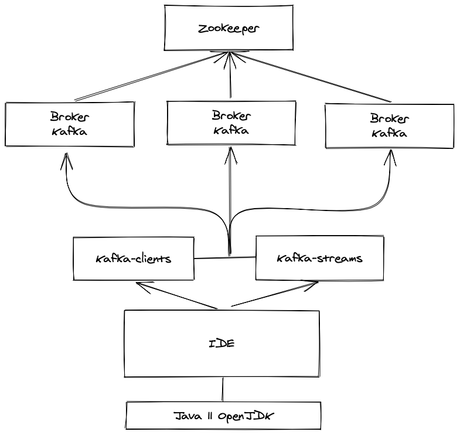

1. Introducción a Kafka
-
Kafka es un sistema distribuido para el procesamiento de streams, escrito en Scala y Java.
-
El objetivo de Kafka es ofrecer una plataforma de baja latencia y alto rendimiento para gestionar feedings en tiempo real. Para ello, dispone de una capa de almacenamiento de tipo publicador/suscriptor altamente escalable (basado en transaction logs).
-
Kafka permite conectar a múltiples sistemas para importar o exportar información, y ofrece un API de Java para procesar los streams.
-
Para usar Kafka, es imprescindible disponer de Zookeeper, ya que es vital para descubrir los brokers, y también para guardar la configuración a nivel de topic
-
Kafka es un proyecto desarrollado por LinkedIn.

-
En 2011, Kafka es liberado y se convierte en un proyecto de código abierto, gestionado por la Apache software foundation

-
En noviembre de 2014, varios ingenieros que trabajaban desarrollando Kafka en LinkedIn, crearon una nueva compañía llamada Confluent, centrada en dicho proyecto.
-
El nombre del proyecto, se debe al escritor Franz Kafka, puesto que es un "sistema optimizado para escribir"
-
Kafka está compuesto por tres tipos de componentes:
-
Productores
-
Consumidores
-
Colas (o topics)
-
-
Kafka Puede usarse de dos formas:
-
Como un modelo de colas, donde los mensajes son distribuidos a los clientes
-
Como un modelo de publicador/suscriptor, donde el mismo mensaje es enviado a los distintos clientes
-
-
Para ello, Kafka dispone de un Broker. Este es el servidor principal de Kafka, sus funciones son:
-
Almacena los distintos topics
-
Se encarga de gestionar las particiones
-
Se encarga de gestionar dónde se realizan las escrituras en disco
-
También controla la seguridad
-
Se utiliza para crear clústers y poder escalar el servicio (para ello, usa Zookeeper)
-
2. Zookeeper
2.1. Introducción
-
ZooKeeper es un servicio de coordinación distribuido para la construcción de aplicaciones distribuidas generales.
-
Escribir aplicaciones distribuidas es difícil. Es duro principalmente debido al fracaso parcial.
-
ZooKeeper no puede hacer que los fallos parciales desaparezcan, ya que son intrínsecos a los sistemas distribuidos.
-
Lo que hace ZooKeeper es proporcionar un grupo de herramientas para construir aplicaciones distribuidas que pueden manejar de forma segura los fallos.
-
Características:
-
Simple: es, en su núcleo, un sistema de archivos desnudo que expone algunas simples operaciones y algunas extraciones extra, tales como ordenaciones y notificaciones.
-
Expresivo: las primitivas de ZooKeeper son un grupo rico de bloques de construcción que se pueden utilizar para construir una gran clase de estructuras de datos de coordinación y protocolos. Por ejemplo se incluyen colas distribuidas, bloqueos distribuidas y elección de líderes entre un grupo de compañeros.
-
Disponible: se ejecuta en una colección de máquinas y está diseñado para tener alta disponibilidad. Puede ayudarnos a evitar la introducción de puntos individuales de fallos en su sistema.
-
Facilita las interacciones poco acopladas: las interacciones se apoyan en los participantes, que no necesitan saber unos de otros, utilizando un mecanismo de encuentro.
-
Es una librería: que proporciona un repositorio compartido de implementaciones y recetas de código abierto y patrones comunes de coordinación. A los programadores individuales se les ahorra la carga de escribiendo protocolos comunes ellos mismos.
-
Es de alto rendimiento. En Yahoo!, donde se creó, el rendimiento de un grupo de ZooKeeper se ha comparado con más de 10.000 operaciones por segundo para escritura dominantes generadas por cientos de clientes.
-
2.2. Instalación de Zookeeper
-
Hay que tener en cuenta cuales son los requisitos de instalación de Zookeeper.
-
Se trata de una herramienta java, pero que debe instalarse en ciertos sistemas operativos.
-
Hay que tener en cuenta que tenemos cuatro componentes de instalación distintos:
-
Client: Se trata de las librerias java cliente, que permiten conectarse a Zookeeper
-
Server: Se trata del servicio java que se ejecuta en los nodos de Zookeeper
-
Native Client: Se trata de un cliente implementado en C que permite conectarse a Zookeeper
-
Contrib: Se trata de los add-ons opcionales de zookeeper.
-
-
Para ver como instalarlo, debemos observar las limitaciones de sistemas operativos:
2.2.1. Sistemas operativos
-
Dependiendo si está orientado para desarrollo o producción, existen distintas opciones:
-
GNU/Linux: Sirve tanto para cliente, servidor, cliente nativo y addons en entornos de desarrollo y producción
-
Solaris, FreeBSD, Windows: Sirve para cliente y servidor en entornos de desarrollo y producción, sin embargo no está soportado el cliente nativo ni los addons de terceros
-
OSX: Solo sirve para cliente y servidor en modo desarrollo. No está soportado el cliente nativo ni los addons de terceros
-
2.2.2. java
-
En cuanto a la versión de java, es imprescindible conocer que versión de java es compatible con Zookeeper.
-
Java 8 (OpenJDK, Oracle)como versión mínima
-
Java 11 OpenJDK LTS
-
-
También es posible instalarlo en java 12 y 13, pero no en java 9 y 10
-
La recomendación es usar la última LTS compatible, que en este caso es la 11
2.2.3. Producción
-
Hay que tener en cuenta que zookeeper es la base de múltiples aplicaciones.
-
Kafka usa Zookeeper para los metadatos del cluster y es un sistema crítico.
-
En caso de perder Zookeeper, el mapa de las particiones asignadas a los brokers y las configuraciones de los topics se perderán, perdiendo la funcionalidad, y por ende, todos los datos.
2.2.3.1. Memoria
-
Un cluster de zookeeper no posee un uso intensivo de memoria. La memoria física necesaria escala según el número de znodes que posea.
-
A mayor número de particiones, mayor el uso de memoria de Zookeeper.
-
Un punto de partida sería los 4GB de ram para entornos de producción.
-
Se debe evitar el uso de SWAP en estos sistemas.
2.2.3.2. CPU
-
Zookeeper no posee un uso intensivo de cpu.
-
Si el sistema está compartido con otros servicios, es imprescindible la dedicación de una CPU a zookeeper, ya que es sensible a la latencia.
2.2.3.3. Discos
-
Se recomienda el uso de SSDs para poseer baja latencia de escritura en disco con un tamaño de 64GB.
-
Cada petición en Zookeeper se debe almacenar en disco en cada servidor en el quorum antes de que esté disponible para lectura.
-
Para evitar mantenimientos es recomendable definir (para versiones superiores a la 3.4.0):
-
autopurge.purgeInterval: Intervalo en horas para que la tarea de purga se dispare. Por defecto está deshabilitado
-
autopurge.snapRetainCount: Permite definir el almacenamiento de los últimos snapshots y logs de transacciones en el directorio de datos. Por defecto es 3
-
autopurge.purgeInterval: 12
autopurge.snapRetainCount: 4-
De esta forma conseguimos limpiar zookeeper y evitar mantenimientos costosos.
2.2.3.4. Máquina virtual
-
El uso del heap en Zookeeper no es intensivo, con 1GB debería ser suficiente, aunque se debe monitorizar para comprobar que las recolecciones de basura de la máquina virtual no pasan continuamente.
2.2.3.5. Alta disponibilidad
-
En un entorno de producción, los servidores de zookeeper deben desplegarse en múltiples nodos.
-
Los servidores deben estar en un conjunto de 2n+1, donde n debe ser 0 o más. Es decir, deben ser impares.
-
Permite poseer elecciones de mayoría en caso de la caida de n servidores.
-
Si queremos una tolerancia de dos servidores fallidos, debemos usar n=2:
-
2*2 + 1 = 5
-
-
De esta forma mantendremos el sistema en alta disponibilidad.
-
Se suele comenzar con sistemas de tolerancia 1 o 2, con 3 o 5 instancias de servidor.
-
Hay que pensar que cuando se realiza una operación de escritura, se debe propagar y confirmar en todos los miembros.
-
-
Se recomienda poseer un sistema redundado de red y no alojarlo en el mismo rack
-
En caso de usar virtualización, es recomendable usar distintas zonas de disponibilidad
-
Ante la duda, es mejor comenzar con un sistema simple y controlado de tres nodos en producción y ampliarlo solo si es necesario.
2.2.4. Lab: Instalación de Zookeeper
-
Para probar ZooKeeper, es más sencillo ejecutarlo en modo independiente con un solo servidor de ZooKeeper.
-
Podemos hacerlo en una máquina de desarrollo, por ejemplo.
2.2.4.1. Requisitos
-
Java.
-
Descargar una versión estable de ZooKeeper de Apache ZooKeeper, y desempaquetar el tarball en un lugar adecuado (/usr/local/zookeeper o /opt/zookeeper):
|
En nuestra máquina virtual, el software del curso se ha descargado en /home/kafka/Desktop/software |
2.2.4.2. Instalación
-
Para instalarlo, primero comprobamos que poseemos la versión de java correcta, ya que en sistema operativo, cumplimos las mejores condiciones con Linux.
[kafka@kafka-server ~]$ java -version
openjdk version "11.0.8" 2020-07-14 LTS
OpenJDK Runtime Environment 18.9 (build 11.0.8+10-LTS)
OpenJDK 64-Bit Server VM 18.9 (build 11.0.8+10-LTS, mixed mode, sharing)-
Podemos comprobar como la versión de java es la 11
-
Ahora descomprimimos el software de kafka en /opt
[kafka@kafka-server ~]$ cd Desktop/software/
[kafka@kafka-server software]$ tar xf apache-zookeeper-*-bin.tar.gz
[kafka@kafka-server software]$ sudo mv apache-zookeeper-*-bin /opt/apache-zookeeper-
Añadimos las variables de entorno al sistema para facilitar su uso:
[kafka@kafka-server software]$ echo export ZOOKEEPER_HOME=/opt/apache-zookeeper >> zookeeper_path.sh
[kafka@kafka-server software]$ echo 'export PATH=${PATH}:${ZOOKEEPER_HOME}/bin' >> zookeeper_path.sh
[kafka@kafka-server software]$ sudo mv zookeeper_path.sh /etc/profile.d/
[kafka@kafka-server software]$ sudo chmod ugo+x /etc/profile.d/zookeeper_path.sh-
Por último, para evitar tener que reiniciar el entorno gráfico para aplicar las variables lanzamos la siguiente sentencia
[kafka@kafka-server software]$ source /etc/profile.d/zookeeper_path.sh|
Fin del laboratorio |
2.3. Configuración
Los archivos de configuración se llama convencionalmente zoo.cfg y se coloca en el subdirectorio conf (normalmente se colocar en /etc/zookeeper, o en el directorio definido por la variable ZOOCFGDIR, si se establece).
tickTime=2000
dataDir=/disk1/zookeeper
dataLogDir=/disk2/zookeeper
clientPort=2181
initLimit=5
syncLimit=2
server.1=zookeeper1:2888:3888
server.2=zookeeper2:2888:3888
server.3=zookeeper3:2888:3888
maxClientCnxns=0-
Es un archivo de propiedades estándar de Java, y las tres propiedades siguientes son las minimas requeridas para ZooKeeper:
-
tickTime : es la unidad de tiempo básica en ZooKeeper (especificada en milisegundos). Se usa para los heartbeats, la sesión mínima es dos veces el tickTime
-
dataDir : es la ubicación local del sistema de archivos donde ZooKeeper almacena datos persistentes
-
clientPort : es el puerto donde escucha las conexiones del cliente (2181 es una opción común).
-
-
Cada servidor del grupo de servidores de ZooKeeper tiene un identificador numérico que es único dentro del grupo y debe estar comprendido entre 1 y 255.
-
El número de servidor se especifica en texto sin formato en un archivo denominado myid en el directorio especificado por la propiedad dataDir.
-
También necesitamos dar a todos los servidores las identidades y ubicaciones de red de los demás servidores pertenecientes al grupo.
-
En Zookeeper, el archivo de configuración debe incluir una línea para cada servidor:
server.n = hostname:port:port-
El valor de n se sustituye por el número de servidor.
-
Hay dos configuraciones para los puertos:
-
puerto que los seguidores utilizan para conectar con el líder
-
puerto para la elección del líder.
-
-
Los servidores escuchan en tres puertos:
-
El 2181 para conexiones de cliente;
-
El 2888 para conexiones seguidoras, si ellos son el líder;
-
El 3888 para otras conexiones de servidor durante la fase de elección de líder.
-
-
Cuando un servidor ZooKeeper se inicia, lee el archivo myid para determinar qué tipo de servidor es, y luego lee el archivo de configuración para determinar los puertos que debe escuchar y descubrir las direcciones de red de los otros servidores del grupo.
-
Los clientes que se conecten a este grupo ZooKeeper deben usar
-
Zookeeper1: 2181
-
Zookeeper2: 2181
-
Zookeeper3: 2181
-
-
Es similar a la cadena del host en el constructor para el objeto ZooKeeper.
-
En el grupo de replica (replicaSet), hay dos propiedades obligatorias adicionales:
-
initLimit
-
syncLimit
-
-
Medidas múltiples de tickTime.
-
InitLimit
-
Cantidad de tiempo que permite a los seguidores conectarse y sincronizarse con el líder.
-
Si la mayoría de seguidores no sincronizan dentro de este período, el líder renuncia a su liderazgo y otra elección de líder tiene lugar.
-
Si esto ocurre a menudo (se puede ver en el registro), es un signo de que la configuración es demasiado baja.
-
-
SyncLimit es la cantidad de tiempo que permite a un seguidor sincronizar con el líder.
-
Si un seguidor no se sincroniza dentro de este período, se reiniciará.
-
Los clientes que estuvieron vinculados a este seguidor se conectarán a otro.
-
-
-
La siguiente directiva se recomienda definir para evitar rechazos de conexión de zookeeper cuando el cluster crece:
-
maxClientCnxns: Indica el número máximo de clientes que podemos tener. Por defecto son 60, es recomendable poner infinito.
maxClientCnxns=02.4. Ejecución
-
Para ejecutarlo, solo necesitamos usar el siguiente comando:
[kafka@kafka-server ~]$ zkServer.sh starto bien:
-
Ejecución para la versión 3.4.14, para otras, hay que cambiar las versiones de paquetes
[kafka@kafka-server zookeeper-3.4.14]$ java -cp zookeeper-3.4.14.jar:lib/slf4j-a.25.jar:lib/slf4j-log4j12-1.7.25.jar:lib/log4j-1.2.17.jar:conf org.apache.zookeeper.server.quorum.QuorumPeerMain conf/zoo.cfg
-
Para comprobar si ZooKeeper se está ejecutando, ejecutamos comando ruok ("¿Está bien?") al puerto cliente utilizando nc (telnet también funciona):
[kafka@kafka-server ~]$ echo ruok| nc localhost 2181
imok-
ZooKeeper nos indica, "Estoy bien".
2.5. Operaciones de Zookeeper
-
Aquí podemos observar el listado de comandos que podemos ejecutar en Zookeeper
-
Además del comando mntr, ZooKeeper expone estadísticas a través de JMX.
|
En la documentación de zookeeper explica como se exponen las estadísticas JMX |
-
Tenemos las herramientas de monitorización y recipientes en src/contrib de la distribución.
-
Desde la versión 3.5.0 de ZooKeeper, hay un servidor web incorporado para proporcionar la misma información, en http://localhost:8080/commands para obtener una lista de los comandos de la versión.
2.5.1. Ejemplos
-
Imaginemos un grupo de servidores que proporcionan algún servicio a los clientes.
-
Queremos:
-
Que los clientes puedan localizar a uno de los servidores para que puedan utilizar el servicio y mantener la lista de servidores perteneciente al grupo.
-
La lista de miembros no puede almacenarse en un solo nodo de la red, ya que un fallo de ese nodo significaría la caida de todo el sistema (alta disponibilidad).
-
¿Como eliminamos un servidor de la lista del grupo si falla?. Algunos procesos deben ser los responsables de la eliminación de servidores caidos, pero no pueden ser los servidores, ya que no están en ejecución!
-
-
En definitiva es una estructura de datos distribuida activa, y puede cambiar su estado con una entrada cuando se produce algún evento externo.
-
ZooKeeper nos proporciona este servicio.
-
Pertenencia al grupo en ZooKeeper
-
Pensemos que ZooKeeper proporciona un sistema de archivos con una alta disponibilidad.
-
No tiene archivos y directorios, sino un concepto unificado de un nodo, llamado znode, que actúa tanto como un contenedor de datos (como un archivo) y un contenedor de otros znodes (como un directorio).
-
Los znodes forman un espacio de nombres jerárquico, y la de crear la lista de miembros es un znode padre con el nombre del grupo y znodes secundarios con los nombres de los miembros del grupo (servidores).
-
-
En una aplicación real debemos imaginarnos el almacenamiento de datos sobre los miembros, como nombres de host, con sus znodes.
2.5.2. Creación del grupo
-
Vemos mediante el API JavaKeeper de Java la escritura de un programa para crear un znode de ejemplo
package com.kafka.zookeeper;
import java.io.IOException;
import java.util.concurrent.CountDownLatch;
import org.apache.zookeeper.CreateMode;
import org.apache.zookeeper.KeeperException;
import org.apache.zookeeper.WatchedEvent;
import org.apache.zookeeper.Watcher;
import org.apache.zookeeper.Watcher.Event.KeeperState;
import org.apache.zookeeper.ZooDefs.Ids;
import org.apache.zookeeper.ZooKeeper;
public class CreateGroup implements Watcher {
private static final int SESSION_TIMEOUT = 5000;
private ZooKeeper zk;
private CountDownLatch connectedSignal = new CountDownLatch(1);
public void connect(String hosts) throws IOException, InterruptedException {
zk = new ZooKeeper(hosts, SESSION_TIMEOUT, this);
connectedSignal.await();
}
@Override
public void process(WatchedEvent event) { // Interfaz observadora
if (event.getState() == KeeperState.SyncConnected) {
connectedSignal.countDown();
}
}
public void create(String groupName) throws KeeperException,
InterruptedException {
String path = "/" + groupName;
String createdPath = zk.create(path, null/*data*/, Ids.OPEN_ACL_UNSAFE,
CreateMode.PERSISTENT);
System.out.println("Created " + createdPath);
}
public void close() throws InterruptedException {
zk.close();
}
public static void main(String[] args) throws Exception {
CreateGroup createGroup = new CreateGroup();
createGroup.connect(args[0]);
createGroup.create(args[1]);
createGroup.close();
}
}-
Cuando se ejecuta el método main(), se crea una instancia de CreateGroup y luego llama al método Connect() que instancia un nuevo objeto ZooKeeper, que es el objeto principal del cliente y la que mantiene la conexión entre el cliente y el servicio ZooKeeper.
-
El constructor toma 3 argumentos:
-
Dirección del host (y opcionalmente su puerto 2181) del servicio ZooKeeper
-
Tiempo de espera de la sesión en milisegundos (establecido a 5 segundos)
-
Una instancia de un objeto Watcher (observador).
-
El objeto Watcher recibe devoluciones de llamada de ZooKeeper para informarle de varios eventos.
-
-
En este escenario, CreateGroup es un Watcher, así que pasamos esto al constructor de ZooKeeper.
-
Cuando se crea una instancia de ZooKeeper, se inicia un subproceso para conectarse al servicio ZooKeeper.
-
La llamada al constructor debe volver de inmediato, por lo que es importante esperar la conexión antes de utilizar el objeto ZooKeeper.
-
Se hace uso de Java CountDownLatch (del paquete java.util.concurrent) para el bloqueo hasta que la instancia de ZooKeeper está lista.
-
Aquí es donde entra el Watcher.
-
La interfaz Watcher tiene un solo método:
public void process(evento WatchedEvent);-
Cuando el cliente se ha conectado al servidor de ZooKeeper, el watcher recibe una llamada a su método process() con un evento que indica que se ha conectado.
-
Al recibir un evento de conexión (representado por enum Watcher.Event.KeeperState, con el valor SyncConnected), nosotros decrementamos el contador en CountDownLatch, utilizando su método countDown().
-
El CountDownLatch (cerrojo) se creó con un recuento a 1, que representa el número de eventos que deben ocurrir antes de que libere todos los hilos en espera.
-
Después de llamar a countDown() una vez, el contador alcanzará 0 y devuelve el método await().
-
El método connect() ahora ha regresado, y el método siguiente a ser invocado es el método create() en la instancia de ZooKeeper.
-
Los argumentos que toma son:
-
El camino (representado por una cadena recibida en arg[1])
-
Contenido del znode (una matriz de bytes nula en este caso)
-
Un acceso a la lista de control (o ACL para abreviar, que aquí está completamente abierta, permitiendo que cualquier cliente las lea o escriba en el znode)
-
Naturaleza del znode que se va a crear: efímeros, ephemeral o persistentes, persistent.
-
Un znode efímero será borrado por el servicio de ZooKeeper cuando el cliente que lo creó se desconecta, explícitamente o porque el cliente lo termina por cualquier razón.
-
Un znode persistent, por otro lado, NO es eliminado cuando el cliente se desconecta ya que queremos que vida más tiempo el znode que representa que la vida del programa que lo crea.
-
-
El valor de retorno del método create() es la camino creado por ZooKeeper.
-
Lo imprimirmos como mensaje de que la ruta de acceso se creó correctamente.
-
Notaremos cómo el camino devuelta por create() puede diferir del pasado al método cuando vemos znodes secuenciales.
-
Para ver el programa en acción, necesitamos tener ZooKeeper corriendo en la máquina local, y ejecutamos:
[kafka@kafka-server ~]$ export CLASSPATH=/home/kafka/Desktop/software/libs/*:$ZOOKEEPER_HOME/*:\ $ZOOKEEPER_HOME/lib/*:$ZOOKEEPER_HOME/conf
[kafka@kafka-server ~]$ java com.kafka.zookeeper.CreateGroup localhost zoo2.5.3. Unirse a un grupo
-
Una vez creado el Grupo necesitamos registrar a un miembro en el grupo.
-
Cada miembro se ejecutará como un programa y se unirá al grupo.
-
Cuando el programa salga, debe ser eliminado del grupo, creandolo como znode efímero en el espacio de nombres de ZooKeeper.
-
El programa JoinGroup implementa esta idea:
package com.kafka.zookeeper;
import org.apache.zookeeper.CreateMode;
import org.apache.zookeeper.KeeperException;
import org.apache.zookeeper.ZooDefs.Ids;
public class JoinGroup extends ConnectionWatcher {
public void join(String groupName, String memberName) throws KeeperException,
InterruptedException {
String path = "/" + groupName + "/" + memberName;
String createdPath = zk.create(path, null/*data*/, Ids.OPEN_ACL_UNSAFE,
CreateMode.EPHEMERAL);
System.out.println("Created " + createdPath);
}
public static void main(String[] args) throws Exception {
JoinGroup joinGroup = new JoinGroup();
joinGroup.connect(args[0]);
joinGroup.join(args[1], args[2]);
// Se mantiene durmiendo hasta que el proceso sea matado o interrumpido el hilo de ejecuciión
Thread.sleep(Long.MAX_VALUE);
}
}-
La lógica para crear y conectarse ha sido refactorizada en ConnectionWatcher :
package com.kafka.zookeeper;
import java.io.IOException;
import java.util.concurrent.CountDownLatch;
import org.apache.zookeeper.WatchedEvent;
import org.apache.zookeeper.Watcher;
import org.apache.zookeeper.Watcher.Event.KeeperState;
import org.apache.zookeeper.ZooKeeper;
public class ConnectionWatcher implements Watcher {
private static final int SESSION_TIMEOUT = 5000;
protected ZooKeeper zk;
private CountDownLatch connectedSignal = new CountDownLatch(1);
public void connect(String hosts) throws IOException, InterruptedException {
zk = new ZooKeeper(hosts, SESSION_TIMEOUT, this);
connectedSignal.await();
}
@Override
public void process(WatchedEvent event) {
if (event.getState() == KeeperState.SyncConnected) {
connectedSignal.countDown();
}
}
public void close() throws InterruptedException {
zk.close();
}
}-
El código para JoinGroup es muy similar a CreateGroup.
-
Crea un znode efímero como hijo del grupo znode en su método join(), luego simula hacer trabajo de algún tipo durmiendo hasta que el proceso se termine por fuerza.
-
Más adelante, vemos que un znode efímero es eliminado por ZooKeeper.
2.5.4. Encontrar a los miembros en un grupo
package com.kafka.zookeeper;
import java.util.List;
import org.apache.zookeeper.KeeperException;
public class ListGroup extends ConnectionWatcher {
public void list(String groupName) throws KeeperException,
InterruptedException {
String path = "/" + groupName;
try {
List<String> children = zk.getChildren(path, false);
if (children.isEmpty()) {
System.out.printf("No members in group %s\n", groupName);
System.exit(1);
}
for (String child : children) {
System.out.println(child);
}
} catch (KeeperException.NoNodeException e) {
System.out.printf("Group %s does not exist\n", groupName);
System.exit(1);
}
}
public static void main(String[] args) throws Exception {
ListGroup listGroup = new ListGroup();
listGroup.connect(args[0]);
listGroup.list(args[1]);
listGroup.close();
}
}-
En el método list(), llamamos getChildren() con la ruta del znode y un indicador watch para recuperar una lista de rutas secundarias para el znode, que imprimimos.
-
Colocamos un watch en un znode para hacer que el watcher quede registrado como activo si el znode cambia de estado.
-
Viendo a los hijos de un znode se permitirá a un programa recibir notificaciones de los miembros que se unan o abandonan el grupo, o del grupo que se elimina.
-
Capturamos KeeperException.NoNodeException, que se lanza en el caso cuando el grupo del znode no existe.
-
Vemos ListGroup en ejecución, y comprobamos que el grupo zoo está vacío, ya que no tenemos agregado a ningún miembro aún:
[kafka@kafka-server ~]$ java ListGroup localhost zoo
no members in group zoo-
Vamos usar el programa JoinGroup para agregar algunos miembros al grupo.
-
Los lanzamos como procesos en background, ya que no terminan por sí mismos (debido a la declaración de sleep):
[kafka@kafka-server ~]$ java JoinGroup localhost zoo pato &
[kafka@kafka-server ~]$ java JoinGroup localhost zoo vaca &
[kafka@kafka-server ~]$ java JoinGroup localhost zoo cabra &
[kafka@kafka-server ~]$ nuestra_cabra_pid = $!-
En la última línea nos guardamos el ID de proceso del proceso Java que ejecuta el programa que agrega como un miembro.
-
Necesitamos recordar el ID para poder matar el proceso en un momento dado,
-
comprobamos los miembros:
[kafka@kafka-server ~]$ java ListGroup localhost zoo
cabra
pato
vaca2.5.5. Eliminar un miembro
-
Para ello matamos su proceso:
[kafka@kafka-server ~]$ kill $nuestra_cabra_pid-
Y unos segundos más tarde, ha desaparecido del grupo porque el proceso de la sesión de ZooKeeper ha finalizado (el tiempo de espera se ha establecido en 5 segundos)
-
y su znode efímero ha sido eliminado:
[kafka@kafka-server ~]$ java ListGroup localhost zoo
pato
vaca-
Resumen
-
Sabemos como construir una lista del grupo de nodos que están participando en un sistema distribuido.
-
Los nodos NO tienen que tener conocimiento mutuo de su existencia.
-
Un cliente que desea utilizar los nodos de la lista para realizar algunos trabajo, por ejemplo, puede descubrir los nodos, sin que ellos sean conscientes de su existencia.
-
La pertenencia a un grupo no implica una sustitución sobre el manejo de errores de red cuando nos comunicamos con un nodo.
-
Incluso si un nodo es un miembro del grupo, las comunicaciones con él pueden fallar, y tales fallos deben ser manejados de la manera habitual (reintentar, probar con un miembro del grupo, etc.).
-
Las herramientas de línea de comandos de ZooKeeper son para interactuar con el espacio de nombres de ZooKeeper.
-
Podemos usarlo para *listar los znodes bajo el znode /zoo como sigue:
-
[kafka@kafka-server ~]$ zkCli.sh -server localhost ls /zoo
vaca, pato-
Si lo ejecutamos sin argumentos nos muestra la ayuda.
2.5.6. Eliminación de un grupo
-
La clase ZooKeeper proporciona una método Delete() que toma una ruta de acceso y un número de versión.
-
Se eliminará un znode sólo si el número de versión especificado es el mismo que el número de versión del znode que es tratado de eliminar, pues se trata de un mecanismo de bloqueo optimista que permite a los clientes detectar conflictos sobre la modificación de un znode.
-
Sin embargo, podemos omitir la comprobación de versiones mediante una versión con valor -1 para eliminar el znode independientemente de su número de versión.
No hay ninguna operación de borrado recursivo en ZooKeeper, por lo que enemos que eliminar los znodes hijos antes de los padres.
-
Esto es lo que hace la clase DeleteGroup, que eliminará un grupo y todos sus miembros:
package com.kafka.zookeeper;
import java.util.List;
import org.apache.zookeeper.KeeperException;
public class DeleteGroup extends ConnectionWatcher {
public void delete(String groupName) throws KeeperException, InterruptedException {
String path = "/" + groupName;
try {
List<String> children = zk.getChildren(path, false);
for (String child : children) {
zk.delete(path + "/" + child, -1);
}
zk.delete(path, -1);
} catch (KeeperException.NoNodeException e) {
System.out.print("El grupo" + groupName + "no existe \n");
System.exit(1);
}
}
public static void main(String[] args) throws Exception {
DeleteGroup deleteGroup = new DeleteGroup();
deleteGroup.connect(args[0]);
deleteGroup.delete(args[1]);
deleteGroup.close();
}
}-
Finalmente, podemos eliminar el grupo de zoo que creamos anteriormente:
[kafka@kafka-server ~]$ java DeleteGroup localhost zoo
[kafka@kafka-server ~]$ java ListGroup localhost zoo
Grupo zoo no existe2.5.7. Lab: Operaciones con Zookeeper
-
El objetivo es poner en funcionamiento el servidor de zookeeper
-
Probaremos todo lo que hemos comentado en el tema anterior.
2.5.7.1. Configuración de zookeeper
-
En nuestro caso, vamos a crear nuestro fichero partiendo del ejemplo que viene en el directorio conf, vamos a renombrarlo:
[kafka@kafka-server ~]$ cd /opt/apache-zookeeper/conf/
[kafka@kafka-server conf]$ cp zoo_sample.cfg zoo.cfg-
Si nos fijamos, en este archivo vienen las siguientes configuraciones ya aplicadas:
[kafka@kafka-server conf]$ egrep -v "^#" zoo.cfg
tickTime=2000
initLimit=10
syncLimit=5
dataDir=/tmp/zookeeper
clientPort=2181-
Vamos a cambiar el directorio donde guardamos los datos a:
dataDir=/var/zookeeperCreamos el directorio y cambiamos sus permisos:
[kafka@kafka-server conf]$ sudo mkdir /var/zookeeper
[kafka@kafka-server conf]$ sudo chown kafka:kafka /var/zookeeper/-
En un clúster Zookeeper, es necesario que cada nodo tenga su identificador creado, y aunque aquí no vayamos a crear un ensemble, daremos un id propio a nuestro nodo.
-
Nuestro nodo va a ser el nodo 1, y esto es todo lo que debe figurar en nuestro fichero myid, que recordemos, debe ubicarse en la ruta de datos
[kafka@kafka-server conf]$ echo "1" > /var/zookeeper/myid-
De la misma forma, vamos a añadir la ruta de nuestro nodo al fichero de configuración (esto mismo, deberíamos hacerlo con los demás nodos en caso de estar en un ensemble).
-
Añadimos la siguiente línea a zoo.cfg (Recordad, en un entorno real usas el interfaz de red por el que esperáis recibir conexiones, NUNCA localhost)
-
En este caso, el nombre de la máquina es master, y apunta a 127.0.0.1
server.1=kafka-server.local:2888:3888-
Agregamos también la autorización de recibir comandos desde el puerto por defecto de 4 caracteres, como ruok, que probaremos más tarde.
4lw.commands.whitelist=*2.5.7.2. Ejecución
-
Iniciamos Zookeeper:
[kafka@kafka-server conf]$ zkServer.sh start
/bin/java
ZooKeeper JMX enabled by default
Using config: /opt/apache-zookeeper/bin/../conf/zoo.cfg
Starting zookeeper ... STARTED-
Confirmamos que está funcionando diciéndole "are you ok?":
[kafka@kafka-server conf]$ echo "ruok" | nc kafka-server.local 2181
imok2.5.7.3. Pruebas con Java
-
Para probar esto, usaremos los ejemplos que hemos visto durante el curso, (ya compilados en un jar, llamado api-zookeeper-1.0.0.jar).
-
Hay que acordarse de incluirlo en el CLASSPATH, al igual que las librerías que usamos de Zookeeper (esto, podemos añadirlo al fichero profile.d o en el fichero .bash_profile del usuario, en este ejemplo supone que el jar está en /home/kafka/Desktop/software/libs)
[kafka@kafka-server ~]$ export CLASSPATH=$ZOOKEEPER_HOME/dist-maven/*:$ZOOKEEPER_HOME/lib/*:/home/kafka/Desktop/software/libs/*-
Probamos a crear el grupo de servidores:
[kafka@kafka-server ~]$ java com.kafka.zookeeper.CreateGroup kafka-server.local zoo
Created /zoo-
Ahora creamos los nodos efímeros (y cogemos el id del nodo cabra):
[kafka@kafka-server software]$ java com.kafka.zookeeper.JoinGroup kafka-server.local zoo pato &
[1] 13595
Created /zoo/pato
[kafka@kafka-server software]$ java com.kafka.zookeeper.JoinGroup kafka-server.local zoo vaca &
[2] 13633
Created /zoo/vaca
[kafka@kafka-server software]$ java com.kafka.zookeeper.JoinGroup kafka-server.local zoo cabra &
[3] 13663
Created /zoo/cabra
[kafka@kafka-server software]$ nuestra_cabra_pid=$!-
Y miramos si nuestros nodos funcionan como esperábamos:
[kafka@kafka-server ~]$ java com.kafka.zookeeper.ListGroup kafka-server.local zoo
pato
cabra
vaca-
Ahora, matamos el servidor cabra:
[kafka@kafka-server ~]$ kill -9 $nuestra_cabra_pid
[3]+ Killed java com.kafka.zookeeper.JoinGroup master zoo cabra-
Confirmamos, que al ser un nodo efímero, desaparece:
[kafka@kafka-server software]$ java com.kafka.zookeeper.ListGroup kafka-server.local zoo
pato
vaca
0 [main-SendThread(kafka-server.local:2181)] WARN org.apache.zookeeper.ClientCnxn - An exception was thrown while closing send thread for session 0x100001ee5910005.
EndOfStreamException: Unable to read additional data from server sessionid 0x100001ee5910005, likely server has closed socket
at org.apache.zookeeper.ClientCnxnSocketNIO.doIO(ClientCnxnSocketNIO.java:77)
at org.apache.zookeeper.ClientCnxnSocketNIO.doTransport(ClientCnxnSocketNIO.java:350)
at org.apache.zookeeper.ClientCnxn$SendThread.run(ClientCnxn.java:1275)-
Si lo lanzamos de nuevo, comprobamos como el cliente conectado ha desaparecido del todo.
[kafka@kafka-server ~]$ java com.kafka.zookeeper.ListGroup kafka-server.local zoo
pato
vaca-
Vamos a proceder al borrado del grupo de servidores:
[kafka@kafka-server ~]$ java com.kafka.zookeeper.DeleteGroup kafka-server.local zoo
1 [main-SendThread(kafka-server.local:2181)] WARN org.apache.zookeeper.ClientCnxn - An exception was thrown while closing send thread for session 0x100001ee5910007.
EndOfStreamException: Unable to read additional data from server sessionid 0x100001ee5910007, likely server has closed socket
at org.apache.zookeeper.ClientCnxnSocketNIO.doIO(ClientCnxnSocketNIO.java:77)
at org.apache.zookeeper.ClientCnxnSocketNIO.doTransport(ClientCnxnSocketNIO.java:350)
at org.apache.zookeeper.ClientCnxn$SendThread.run(ClientCnxn.java:1275)-
Ahora, consultamos qué nodos hay en dicho grupo:
[kafka@kafka-server ~]$ java com.kafka.zookeeper.ListGroup kafka-server.local zoo
Group zoo does not exist2.5.7.4. Prueba con zkCli.sh
-
Ahora, vamos a usar la herramienta proporcionada por Zookeeper para comunicarnos con él, el cliente.
-
Para arrancar el cliente escribimos:
[kafka@kafka-server ~]$ zkCli.sh -server kafka-server.local:2181
/bin/java
Connecting to kafka-server.local:2181
...
[zk: master:2181(CONNECTED) 0]-
Una vez dentro del cliente, podemos ejecutar múltiples operaciones, veremos las siguientes:
-
Creación de nodos
-
Obtención de datos
-
Modificación de datos
-
Listar zNodes
-
Estado de un nodo
-
Borrar nodos
-
|
-
Vamos a crear los nodos especificando contenido o dejándolos sin él
[zk: kafka-server.local:2181(CONNECTED) 0] create /vacio ""
Created /vacio
[zk: kafka-server.local:2181(CONNECTED) 1] create /concosas "estas cosas tiene"
Created /concosas-
Los flags que vamos a usar son
-
-s → Es un nodo secuencial, le asigna un número de secuencial
-
-e → Es efímero, se eliminará al cerrar el cliente
-
[zk: kafka-server.local:2181(CONNECTED) 2] create -e /concosas/tmp1 "soy temporal1"
Created /concosas/tmp1
[zk: kafka-server.local:2181(CONNECTED) 3] create -s /concosas/seq "Primero"
Created /concosas/seq0000000001
[zk: kafka-server.local:2181(CONNECTED) 4] create -s /concosas/seq "Segundo"
Created /concosas/seq0000000002-
Para obtener información almacenada en un nodo concreto, podemos usar get
[zk: kafka-server.local:2181(CONNECTED) 5] get /concosas/tmp1
soy temporal1-
Si se quiere modificar el contenido de un zNode puedo hacer uso de set
[zk: kafka-server.local:2181(CONNECTED) 6] set /concosas/tmp1 "He cambiado"
[zk: kafka-server.local:2181(CONNECTED) 7] get /concosas/tmp1
He cambiado-
Si se quiere consultar los zNodes existentes, debo hacer uso de ls, cuya sintaxis es análoga a la de Unix
[zk: kafka-server.local:2181(CONNECTED) 8] ls /
[concosas, vacio, zookeeper]
[zk: kafka-server.local:2181(CONNECTED) 9] ls /concosas
[seq0000000001, seq0000000002, tmp1]-
Para consultar el estado de un nodo, puedo hacer uso de stat
[zk: kafka-server.local:2181(CONNECTED) 11] stat /concosas
cZxid = 0x1a
ctime = Mon Sep 28 12:14:04 UTC 2020
mZxid = 0x1a
mtime = Mon Sep 28 12:14:04 UTC 2020
pZxid = 0x1d
cversion = 3
dataVersion = 0
aclVersion = 0
ephemeralOwner = 0x0
dataLength = 17
numChildren = 3-
Por último, para borrar un nodo, puedo hacer uso de rmr, que borra un nodo de forma recursiva, es decir, también borra sus hijos
[zk: kafka-server.local:2181(CONNECTED) 12] deleteall /concosas
[zk: kafka-server.local:2181(CONNECTED) 13] ls /
[vacio, zookeeper]-
Salimos con el comando quit
[zk: kafka-server.local:2181(CONNECTED) 14] quitPara parar nuestro servidor, primero paramos los jobs en segundo plano de java:
[kafka@kafka-server ~]$ kill %1
[kafka@kafka-server ~]$ kill %2Ahora paramos el servidor, y para ello escribimos:
[kafka@kafka-server ~]$ zkServer.sh stop
ZooKeeper JMX enabled by default
Using config: /opt/zookeeper/bin/../conf/zoo.cfg
Stopping zookeeper ... STOPPED3. Instalación de Kafka
-
La instalación de kafka es muy sencilla, ya que debemos haber instalado anteriormente zookeeper.
-
Con la instalación de zookeeper lista, solo se necesita instalar kafka indicando la ruta del servidor de zookeeper disponible.
3.1. Lab: Instalación de kafka
|
-
Antes de nada, tenemos que descargar Kafka. Para ello iremos a:
-
Y descargaremos la versión que queramos (Existen versiones que han sido compiladas con distintos estándares de Scala, si no vais a usar Scala, escoged la recomendada)
|
El software está ya predescargado en el directorio /home/kafka/Desktop/software/ |
3.1.1. Instalación de software
-
Descomprimimos Kafka y movemos a la ruta destino (por ejemplo /usr/local)
[kafka@kafka-server software]$ tar xf kafka*.tgz
[kafka@kafka-server software]$ sudo mv kafka_2.13-2.6.0 /opt/kafka-
Creamos también las variables de entorno de kafka:
[kafka@kafka-server software]$ echo export KAFKA_HOME=/opt/kafka >> kafka_path.sh
[kafka@kafka-server software]$ echo 'export PATH=$PATH:$KAFKA_HOME/bin' >> kafka_path.sh
[kafka@kafka-server software]$ sudo mv kafka_path.sh /etc/profile.d/-
Cambiamos los permisos para poder ejecutar el script y
[kafka@kafka-server software]$ sudo chmod ugo+x /etc/profile.d/kafka_path.sh
[kafka@kafka-server software]$ source /etc/profile.d/kafka_path.sh3.1.2. Puesta en marcha
-
Iniciamos Zookeeper en caso de que esté apagado.
[kafka@kafka-server ~]$ zkServer.sh start
/bin/java
ZooKeeper JMX enabled by default
Using config: /opt/apache-zookeeper/bin/../conf/zoo.cfg
Starting zookeeper ... STARTED-
Comprobamos que está funcionando:
[kafka@kafka-server ~]$ echo ruok | nc kafka-server.local 2181
imok-
Antes de ejecutar Kafka, hay que crear para él un fichero de configuración.
-
En nuestro caso, vamos a ver el fichero por defecto, que está en $KAFKA_HOME/config/server.properties
-
Este fichero contiene el Broker ID que va a ser usado:
[kafka@kafka-server ~]$ cat /opt/kafka/config/server.properties | grep broker.id
broker.id=0
Ejemplo de configuración de path de Zookeeper
|
-
Para arrancar Kafka tenemos dos opciones:
-
Arrancarlo en primer plano:
-
kafka-server-start.sh ruta_al_fich_conf
-
-
O bien, arrancarlo en segundo plano
-
kafka-server-start.sh -daemon ruta_al_fich_conf
-
-
Vamos a arrancar Kafka usando nuestro fichero de configuración:
[kafka@kafka-server ~]$ kafka-server-start.sh ${KAFKA_HOME}/config/server.properties-
Bien, ahora ya tenemos Kafka corriendo, vamos a ver qué ha creado en Zookeeper
-
Nos conectamos con el cliente de Zookeeper desde otra shell
[kafka@kafka-server vagrant]$ zkCli.sh
/bin/java
Connecting to localhost:2181
...-
Si consultamos qué hay ahora en Zookeeper con ls, veremos que se han creado muchas cosas:
[zk: localhost:2181(CONNECTED) 0] ls /
[admin, brokers, cluster, config, consumers, controller, controller_epoch, isr_change_notification, latest_producer_id_block, log_dir_event_notification, vacio, zookeeper]-
Comprobamos que dentro del nodo brokers existen 3 nodos hijo:
[zk: localhost:2181(CONNECTED) 1] ls /brokers
[ids, seqid, topics]-
Consultamos su contenido, vemos que no existe ningún elemento en topics (normal, no hemos creado ningún topic), mientras que debajo de ids tenemos la lista de brokers existentes (en nuestro caso sólo tenemos 1). Si queremos tener más brokers levantados, aseguraros de darles distintos ids.
[zk: localhost:2181(CONNECTED) 2] ls /brokers/topics
[]
[zk: localhost:2181(CONNECTED) 3] ls /brokers/ids
[0]-
Pedimos información del broker mediante get, que me mostrará por ejemplo dónde estamos escuchando, en que host y en que puerto.
[zk: localhost:2181(CONNECTED) 4] get /brokers/ids/0
{"listener_security_protocol_map":{"PLAINTEXT":"PLAINTEXT"},"endpoints":["PLAINTEXT://kafka-server.local:9092"],"jmx_port":-1,"port":9092,"host":"kafka-server.local","version":4,"timestamp":"1601301843441"}-
Por último, comentar que dentro de un clúster, puede haber múltiples brokers, pero sólo uno de ellos puede ejercer de controlador.
-
Podemos consultar qué broker está haciendo dicha función, solicitando los datos del nodo /controller
[zk: localhost:2181(CONNECTED) 5] get /controller
{"version":1,"brokerid":0,"timestamp":"1601301843543"}4. Topics
-
Los Topics son la base de Kafka, son los equivalentes a las colas de mensajería (se inserta o leen mensajes).
-
El Broker es el encargado de guardar las distintas colas (topics), se utilizan también para crear los clusters, y se sincronizan mediante Zookeeper.
-
Los Topics son las distintas colas de mensajes que se encuentran en Kafka.
-
Un Topic están dividido en múltiples particiones. Las particiones se asignan a los distintos Brokers para poder distribuir y escalar el sistema (aunque un único Broker puede gestionar también varias particiones.
-
Dentro de las particiones se encuentran nuestros mensajes, que es el objeto final de nuestro sistema.
-
Las particiones son ficheros que se encuentran en el disco.
-
Estos ficheros se denominan logs.
-
Cada mensaje dentro de un fichero log es identificado por un offset. Este offset sirve de ordenamiento, y es generado automáticamente por kafka.
-
Los consumidores pueden leer los mensajes a partir de un offset específico, por lo que los consumidores pueden unirse al clúster en cualquier momento (empezando en el offset que consideren).
-
En Kafka, un mensaje se identifica de manera unívoca mediante su topic, su partición y su offset (dentro de dicha partición)

-
Ya hemos dicho que internamente, una partición se guarda en disco como un fichero de tipo log. Un productor escribe un mensaje en dicho fichero y los consumidores leen el fichero desde el offset que ellos quieran.
-
Kafka mantiene estos mensajes durante un periodo de tiempo (configurable), y es el consumidor el que debe ajustarse a dicho comportamiento (e.g, si un consumidor está caído durante un tiempo mayor a dicho periodo, perderá mensajes, pero en caso contrario, podrá continuar donde lo había dejado).
-
Es decir, Kafka no guarda información de qué ha leído cada consumidor.
-
Bueno, ya hemos dicho que podemos particionar un Topic para poder distribuirlo a más de un Broker.
-
Tened en cuenta que si vuestro sistema está saturado, y sólo disponéis de un Broker, crear más particiones no va a solucinar el problema (ya que el Broker tendrá todas las particiones).
-
Para poder distribuir las particiones a múltiples nodos, debemos disponer de múltiples Brokers
-
Bien, sabemos cómo escalar si múltiples productores están escribiendo a un ritmo superior al que es capaz de gestionar un único Broker, pero ¿qué sucede en el caso anterior si se cae un nodo?
-
Si en nuestro ejemplo anterior, se cayera el nodo que gestiona el Broker 0, dejaríamos de tener acceso a tres particiones de dos topics distintos, con lo que no seríamos capaz de funcionar correctamente
-
Para asegurar la alta disponibilidad de nuestro sistema, Kafka permite gestionar réplicas de nuestras particiones.
-
Una réplica es una copia de una partición asignada a otro Broker y por lo tanto ubicada en otro nodo distinto.
-
Con ello, nos aseguramos de que en caso de caída de algún, podemos seguir trabajando ya que la información seguirá estando disponible.
-
Cada partición de cada Topic tiene un único Leader.
-
Cuando realizamos una escritura, esta se realiza siempre sobre la partición Leader, cuyo Broker se encarga de persistir el dato y de sincronizarlo con las otras réplicas (los Brokers que contienen las otras réplicas deben confirmar la escritura).

-
Es importante recordar que tanto las escrituras como las lecturas se realizan siempre desde la partición Leader
-
Cuando todo funciona correctamente, los datos se replican sin problemas. pero ¿qué sucede cuando cae un nodo?
-
Si cae un nodo que contiene una de las réplicas no líderes, estos quedarán out of sync, y cuando se recuperen el líder se encargará de sincronizarlas.
-
-
Si el nodo que cae es el que contiene la réplica Leader, el controlador de Kafka detectará la caída del líder, y elegirá un nuevo Leader de las réplicas que estén sincronizadas.

-
Hay varios puntos que tenemos que tener en cuenta
-
Nunca debemos poner un número de réplicas superior al número de Brokers, ya que no tiene sentido que un único Broker contenga dos réplicas
-
Aumentar las réplicas aumentamos la disponibilidad, nuestro sistema es más robusto ante caídas
-
Incrementar las réplicas aumenta el consumo de red, ya que el líder debe enviar los datos a las réplicas
-
Las réplicas disminuyen el rendimiento, porque el líder debe enviar los datos a las réplicas y recibir confirmaciones antes de dar la operación por buena (se puede configurar para no esperar tantos ack)
-
-
Por último, vamos a hablar de los mensajes.
-
Los mensajes en Kafka están formados por tres partes:
-
Un Timestamp
-
Una Clave
-
Un valor
-
Tanto la clave como el valor pueden ser de muchos tipos (ya que son conjuntos de bytes). La Clave puede ser usada para realizar el particionado (envías un mensaje a un Topic, pero podemos usar la clave para conseguir que el mensaje acabe en una partición determinada).
4.1. Lab: Creación de Topics y particionado
-
Para esta práctica, tenemos que asegurarnos de tener levantado Zookeeper y Kafka con la configuración vista en el apartado anterior.
[kafka@kafka-server bin]$ jps
11409 Jps
10285 QuorumPeerMain
10367 Kafka-
En caso de no ver kafka en la lista, podemos asegurarnos de que está conectando desde zookeeper:
[kafka@kafka-server ~]$ zkCli.sh
/bin/java
Connecting to localhost:2181
[zk: localhost:2181(CONNECTED) 0] ls /brokers/ids
[0]
[zk: localhost:2181(CONNECTED) 1] get /brokers/ids/0
{"listener_security_protocol_map":{"PLAINTEXT":"PLAINTEXT"},"endpoints":["PLAINTEXT://kafka-server.local:9092"],"jmx_port":-1,"port":9092,"host":"kafka-server.local","version":4,"timestamp":"1604489941572"}-
En este caso se puede ver el nodo efímero del broker con la información de conexión.
4.1.1. Creación de topic
-
Para crear un Topic, disponemos del comando kafka-topics.sh. Para lanzarlo hay que especificar:
-
--bootstrap-server host:puerto → Es necesario indicar dónde está el servidor kafka (Anteriormente se indicaba zookeeper, pero está deprecado)
-
--create → Indicamos que vamos a crear un Topic
-
--topic nombre → Damos nombre al Topic (cuidado, los guiones bajos y pueden colisionar)
-
--partitions n → Indicamos el número de particiones que queremos crear para dicho Topic
-
--replication-factor n → Indicamos el número de réplicas que queremos
-
[kafka@kafka-server ~]$ kafka-topics.sh --bootstrap-server kafka-server.local:9092 --create --topic base-topic --partitions 1 --replication-factor 1
Created topic base-topic.-
Si usamos ahora el cliente de Zookeeper, podemos ver que bajo el zNode de /broker/topics, ya tenemos nuestro topic
[kafka@kafka-server ~]$ zkCli.sh
/bin/java
Connecting to localhost:2181
...
[zk: localhost:2181(CONNECTED) 0] ls /brokers/topics
[base-topic]
[zk: localhost:2181(CONNECTED) 1] ls /brokers/topics/base-topic
[partitions]
[zk: localhost:2181(CONNECTED) 2] get /brokers/topics/base-topic
{"version":2,"partitions":{"0":[0]},"adding_replicas":{},"removing_replicas":{}}
[zk: localhost:2181(CONNECTED) 3] quit-
Si pedimos información de nuestro Topic, vemos que nos indica en qué broker está cada partición
-
Pero el propio Kafka a través de kafka-topics permite realizar consultas sobre los topics
-
Listar los topics existentes:
[kafka@kafka-server ~]$ kafka-topics.sh --bootstrap-server kafka-server.local:9092 --list
base-topic-
Obtener información de un topic en concreto (Nos muestra información general en la primera línea, y la relativa a cada partición en las demás, su líder, las réplicas, y los nodos que están en sincronía)
[kafka@kafka-server ~]$ kafka-topics.sh --bootstrap-server kafka-server.local:9092 --describe --topic base-topic
Topic: base-topic PartitionCount: 1 ReplicationFactor: 1 Configs: segment.bytes=1073741824
Topic: base-topic Partition: 0 Leader: 0 Replicas: 0 Isr: 0-
Vamos a crear un nuevo topic pero esta vez con varias particiones, y consultar sus datos:
[kafka@kafka-server ~]$ kafka-topics.sh --bootstrap-server kafka-server.local:9092 --create --topic base-topic2 --partitions 5 --replication-factor 1
Created topic base-topic2.-
Comprobamos como el base-topic2 muestra la información de las particiones
[kafka@kafka-server ~]$ kafka-topics.sh --bootstrap-server kafka-server.local:9092 --describe --topic base-topic2
Topic: base-topic2 PartitionCount: 5 ReplicationFactor: 1 Configs: segment.bytes=1073741824
Topic: base-topic2 Partition: 0 Leader: 0 Replicas: 0 Isr: 0
Topic: base-topic2 Partition: 1 Leader: 0 Replicas: 0 Isr: 0
Topic: base-topic2 Partition: 2 Leader: 0 Replicas: 0 Isr: 0
Topic: base-topic2 Partition: 3 Leader: 0 Replicas: 0 Isr: 0
Topic: base-topic2 Partition: 4 Leader: 0 Replicas: 0 Isr: 0-
Como sólo disponemos de un broker, este posee los líderes y las réplicas de todas las particiones.
-
En Isr figuran los broker que están en sincronía (y evidentemente el líder siempre está en sincronía).
5. Productores y consumidores
-
Ya hemos hablado de que en Kafka existen Productores y Consumidores.
-
Los Productores son los que crean los mensajes y los mandan a las colas (topics)
-
Los Consumidores son los que recogen esos mensajes
-
-
Los consumidores pueden funcionar de dos maneras, siguiendo un modelo de colas o un modelo de publicador/suscriptor
-
En el modelo de cola, los mensajes son repartidos entre las instancias del consumidor
-
En el modelo de publicador/suscriptor, las instancias de los consumidores recibirán todos los mismos mensajes
-
Los Productores son los encargados de producir los mensajes y enviarlos a los topics.
-
Estos mensajes deben ser enviados siempre a la partición líder, el productor conoce cuál es el líder de cada partición, porque al iniciarse, se conecta a uno de los broker y le pide el mapa del particionado.
-
Tras obtener este mapa del particionado, ya sabe en qué broker está cada partición líder
-
Una cosa importante, cada mensaje se va a guardar en una partición concreta.
-
Esto, a priori, es aleatorio, aunque a veces es interesante que no hagamos un reparto aleatorio, sin conocer (o decidir) de antemano en qué partición acaba cada mensaje (por ejemplo, queremos tener todos los mensajes asociados al id de un cliente en una misma partición).
-
Para saber en qué partición acaba nuestro mensaje, usaremos su clave
-
Por temas de rendimiento, los mensajes no se envían de uno en uno, se agrupan en paquetes. Estos paquetes se definen mediante dos condiciones:
-
Por número → Si llegas a un número determinado de mensajes, envía el paquetes
-
Por tiempo → Si durante un intervalo de tiempo definido, no se llega a acumular el número de mensajes indicado, realizamos el envío igualmente.
-
-
Por su parte, los consumidores serán los encargados de leer los mensajes de los distintos topics (pero recordad, siempre se leen de las particiones líderes).
-
En versiones antiguas de Kafka (0.8 y anteriores), se hacía uso de Zookeeper para saber por dónde estaban leyendo, ahora ya no (lo gestiona kafka internamente).
-
Para llevar esta gestión, Kafka hace uso de un topic especial denominado __consumer_offsets.
-
Este topic tiene el identificador de cada grupo de consumidores y el offset por el que va leyendo.
-
Un grupo de consumidores es un identificador compartido por varios consumidores. Un grupo de consumidores puede tener 1 o varias instancias de consumidores.
-
Si hay más de uno, los consumidores balancean las particiones.
-
Si algún consumidor se cae, su partición se asigna a otro consumidor.
-
No se pueden tener más consumidores que particiones, pero si podemos tener varios grupos de consumidores leyendo de una misma partición (pero sólo un cliente de cada grupo puede leer de una partición concreta)
-
Un Grupo de consumidores puede tener una única instancia de consumidor, en cuyo caso procesa los mensajes de todas las particiones del topic
-
Si para el mismo grupo de consumidores, creo una nueva instancia del consumidor, se balancean las particiones
-
Con otra instancia adicional, se vuelven balancean las particiones (recordad, no puede haber más consumidores que particiones)
-
Si alguna instancia cae, la partición (o particiones) asignadas al consumidor que ha caído se reasignan a los consumidores existentes.
5.1. Lab: Produciendo y consumiendo
-
Aunque no sea lo habitual, para probar kafka, disponemos de dos herramientas de línea de comandos para poder producir y consumir mensajes:
-
kafka-console-producer.sh → Un productor que nos permite enviar mensajes a un Topic, escribiendo directamente desde una shell
-
kafka-console-consumer.sh → Un consumidor que nos permite consumir mensajes
-
|
Por defecto, el puerto en el que Kafka está escuchando es el 9092 Para esta prueba, tanto Zookeeper como Kafka deben estar levantados, y vamos a dar por hecho que existe un Topic creado (en nuestro caso base-topic2) |
-
Bien, vamos a lanzar un productor, para ello usaremos kafka-console-producer.sh, con las siguientes opciones:
-
--broker-list → lista de los brokers (en nuestro caso sólo hay uno, nuestra máquina)
-
--topic → El topic sobre el que queremos enviar mensajes
-
-
Esto nos deja la shell abierta, cada línea que escribamos a partir de ahí es un mensaje
[kafka@kafka-server ~]$ kafka-console-producer.sh --broker-list kafka-server.local:9092 --topic base-topic2
>mensaje 1
>mensaje 2
>otro mensaje|
No cerreis la consola con los mensajes, ya que más adelante escribiremos más mensajes |
-
Vamos a arrancar ahora un consumidor (en otra shell), usando el comando kafka-console-consumer.sh
-
--bootstrap-server → Servidor al que vamos a atacar
-
--new-consumer → Todavía da soporte a versiones antiguas del consumer, con esto indicamos que usamos la nueva
-
--topic → el topic a consumir
-
[kafka@kafka-server ~]$ kafka-console-consumer.sh --bootstrap-server localhost:9092 --topic base-topic2-
Si ahora escribimos "algo" en el productor, se muestra en nuestro consumidor
[kafka@kafka-server ~]$ kafka-console-producer.sh --broker-list kafka-server.local:9092 --topic base-topic2
>mensaje 1
>mensaje 2
>otro mensaje
>mas mensajes[kafka@kafka-server ~]$ kafka-console-consumer.sh --bootstrap-server kafka-server.local:9092 --topic base-topic2
mas mensajes-
Hemos mostrado los nuevos mensajes, pero ¿y qué pasa con los creados antes de arrancar nuestro consumidor?
-
Pues podemos mostrarlos si usamos la opción --from-beginning
-
Para ello paramos el consumidor con CTRL+C
[kafka@kafka-server ~]$ kafka-console-consumer.sh --bootstrap-server kafka-server.local:9092 --topic base-topic2
mas mensajes
^CProcessed a total of 1 messages-
Ahora lo arrancamos con el nuevo argumento
[kafka@kafka-server ~]$ kafka-console-consumer.sh --bootstrap-server kafka-server.local:9092 --topic base-topic2 --from-beginning
mensaje 2
mas mensajes
mensaje 1
otro mensaje-
Si os acordáis, hemos dicho que los mensajes viajan con una clave y un valor, pero ¿qué clave hemos proporcionado para estos mensajes?.
-
Podemos ver la clave usando la opción --property print.key=true
-
Para ello volvemos a cerrarlo con CTRL+C y lo abrimos con la nueva directiva
[kafka@kafka-server ~]$ kafka-console-consumer.sh --bootstrap-server kafka-server.local:9092 --topic base-topic2 --from-beginning --property print.key=true
null mensaje 2
null mas mensajes
null mensaje 1
null otro mensaje-
Bueno, tiene sentido. No hemos especificado clave alguna, así que es normal que esté a null. Paramos el consumidor.
-
Vamos a parar y levantar el productor, pero indicando que vamos a usar una clave, separada por el caracter que indiquemos de su valor. Esto se hace con la propiedades --property parse.key=true --property key.separator=, (indicamos que hay que parsear clave, y en este caso usaremos la coma como separador)
[kafka@kafka-server ~]$ kafka-console-producer.sh --broker-list kafka-server.local:9092 --topic base-topic2 --property parse.key=true --property key.separator=,
>clave1,valor1
>clave2,valor2-
Si intento poner una línea sin clave, da error:
>otra
org.apache.kafka.common.KafkaException: No key found on line 3: otra
at kafka.tools.ConsoleProducer$LineMessageReader.readMessage(ConsoleProducer.scala:290)
at kafka.tools.ConsoleProducer$.main(ConsoleProducer.scala:51)
at kafka.tools.ConsoleProducer.main(ConsoleProducer.scala)[kafka@kafka-server ~]$ kafka-console-consumer.sh --bootstrap-server kafka-server.local:9092 --topic base-topic2 --from-beginning --property print.key=true
null mensaje 2
null mas mensajes
clave1 valor1
clave2 valor2
null mensaje 1
null otro mensaje-
Paramos nuestro consumidor.
^CProcessed a total of 6 messages-
Vamos ahora a levantar múltiples consumidores, para ello les asignaremos un mismo grupo de consumidores.
-
Usaremos el fichero consumer.properties que viene distribuido con Kafka para levantar los consumidores indicando su grupo
-
Este fichero contiene una propiedad group.id que indica cuál es el id del grupo de consumidores (en nuestro caso test-consumer-group).
[kafka@kafka-server ~]$ cat /opt/kafka/config/consumer.properties | grep group.id
# consumer group id
group.id=test-consumer-group-
Levantamos ahora un consumidor haciendo uso del fichero de configuración que hemos visto (y procesando desde el principio de los tiempos)
[kafka@kafka-server ~]$ kafka-console-consumer.sh --bootstrap-server kafka-server.local:9092 --topic base-topic2 --from-beginning --property print.key=true --consumer.config ${KAFKA_HOME}/config/consumer.properties
null mensaje 2
null mas mensajes
clave1 valor1
clave2 valor2
null mensaje 1
null otro mensaje-
Si ahora levanto un nuevo cliente con exactamente la misma configuración, (abrid una nueva terminal), sucede lo siguiente:
[kafka@kafka-server ~]$ kafka-console-consumer.sh --bootstrap-server kafka-server.local:9092 --topic base-topic2 --from-beginning --property print.key=true --consumer.config ${KAFKA_HOME}/config/consumer.properties-
Nada. Como seguimos consumiendo del mismo topic, y nuestro grupo de consumidores ya ha procesado esos mensajes (si ejecutáramos un nuevo grupo de consumidores, si los volveríamos a procesar).
-
Pero nuestro topic tiene varias particiones, por lo que una vez se incluye un nuevo consumidor a un grupo, se balancean las particiones.
-
Vamos a probar a crear varios mensajes nuevos en nuestro productor (con distintas claves).
-
Fijaros también como la misma clave acaba siempre en la misma partición*
-
Para probarlo, abrimos una tercera shell y ejecutamos el siguiente productor introduciendo los mensajes
[kafka@kafka-server ~]$ kafka-console-producer.sh --broker-list kafka-server.local:9092 --topic base-topic2 --property parse.key=true --property key.separator=,
>1,1
>2,2
>5,5
>3,3
>5,4
>5,9
>5,8[kafka@kafka-server ~]$ kafka-console-consumer.sh --bootstrap-server kafka-server.local:9092 --topic base-topic2 --from-beginning --property print.key=true --consumer.config ${KAFKA_HOME}/config/consumer.properties
null mensaje 2
null mas mensajes
clave1 valor1
clave2 valor2
null mensaje 1
null otro mensaje
5 5
5 4
5 9
5 8[kafka@kafka-server ~]$ kafka-console-consumer.sh --bootstrap-server kafka-server.local:9092 --topic base-topic2 --from-beginning --property print.key=true --consumer.config ${KAFKA_HOME}/config/consumer.properties
1 1
2 2
3 3-
Por último, vamos a ver el directorio donde Kafka guarda sus datos (logs).
-
El fichero de configuración de kafka tiene una propiedad log.dirs.
-
Esta es la ruta donde guardamos los logs.
-
En esta ruta estarán todos los topics (y los __consumer_offsets, que los crea kafka automáticamente)
-
Para ver la ruta donde están:
[kafka@kafka-server ~]$ cat ${KAFKA_HOME}/config/server.properties | grep kafka-logs
log.dirs=/tmp/kafka-logs-
Comprobamos su contenido
[kafka@kafka-server ~]$ tree /tmp/kafka-logs/ -L 1
/tmp/kafka-logs/
├── base-topic-0
├── base-topic2-0
├── base-topic2-1
├── base-topic2-2
├── base-topic2-3
├── base-topic2-4
├── cleaner-offset-checkpoint
├── __consumer_offsets-0
├── __consumer_offsets-1
├── __consumer_offsets-10
...
├── log-start-offset-checkpoint
├── meta.properties
├── recovery-point-offset-checkpoint
└── replication-offset-checkpoint-
Como podéis observar, cada topic no tiene un único directorio, si no un único directorio por partición.
[kafka@kafka-server ~]$ tree /tmp/kafka-logs/base-topic2-0 -L 1
/tmp/kafka-logs/base-topic2-0
├── 00000000000000000000.index
├── 00000000000000000000.log
├── 00000000000000000000.timeindex
└── leader-epoch-checkpoint-
El fichero .log es el que contiene los mensajes que hemos enviado.
-
Si hacemos un cat podemos ver que (entre los datos binarios), están los mensajes que yo he enviado)
6. Log Compaction
-
Log Compaction es una propiedad que asegura que se almacena el último valor para una clave dada.
-
Esto es configurable a nivel de Topic (puedes tener topics que lo usen, y otros que no).
-
Es de especial utilidad cuando hay que recuperar un estado tras un fallo, o restaurar una caché que se ha ido creando durante la ejecución de un proceso.
-
En sistemas como Kafka Stream o Apache Samza es de bastante utilidad.
-
En la siguiente imagen vemos el aspecto que tiene un topic, que recibe mensajes (clave,valor), y les asigna un offset
-

-
El Log Compaction identifica los mensajes que tienen una misma clave
-
Después, se queda con un único mensaje por clave, siendo este el que mayor offset posee
-
Dejando el log con las últimas versiones de cada clave
-
Un caso de uso de esto sería una aplicación de streaming que guarda una caché de los últimos valores recibidos.
-
Para ello, va leyendo de un topic la información, y actualizando su caché.
-
Al mismo tiempo, guarda en un topic propio con log compaction los datos que lee.
-
Si el sistema se cae, vuelve a levantarse leyendo todos los datos del topic en cuestión, regenerando así su caché de forma automática
-
Los productores escriben en un topic
-
Nuestra aplicación, consume los mensajes de dicho topic
-
Al consumir los mensajes, va creando una caché (por clave)
-
Todos los mensajes que lee, los guarda en un topic con log compaction. Internamente, actualiza los valores de su caché si una clave ya había sido leída
-
La caché tendrá un subconjunto de datos, pero el topic con Log Compaction habrá recibido el total de los mensajes leídos
-
Al hacer un Log Compaction, el topic se queda con un único mensaje por cada clave
-
Nuestra aplicación se cae
-
Al levantarse, se conecta a su topic como consumidor

-
El topic, le proporciona todos los mensajes, que contienen sólo la última versión de cada clave
-
Con estos mensajes, la caché se ha regenerado, y la aplicación puede volver a trabajar con normalidad.
6.1. Configuración
-
La creación de un topic con log_compaction implica definir una serie de configuraciones:
-
cleanup.policy
-
compact: Implica que se activa la compactación.
-
delete: Junto con compact, se pueden purgar las entradas más antiguas.
-
-
delete.retention.ms:
-
Por defecto, en la fase de limpieza, los mensajes duplicados son eliminados, y aquellos que tengan el valor a null también. Esos records se les llama tombstones.
-
Si el tiempo es menor al indicado, los tombstones permanecen, sino son eliminados.
-
-
segment.ms:
-
Es el tiempo que tarda en realizar un nuevo segmento. Hay que tener en cuenta que no todos los segmentos se compactan, sino que solo se compactan los segmentos que pertenecen a la cola (tail).
-
Estos segmentos se compactan formando uno más grande.
-
-
min.cleanable.dirty.ratio
-
El broker de kafka crea una serie de hilos para la limpieza log.cleaner.threads. Tratará de buscar el log que peor esté y tratará de limpiarlo.
-
El calculo se realiza con: bytes_head / (bytes_head + bytes_tail)
-
Si el ratio se cumple, ejecuta la limpieza, sino el hilo es bloqueado. El tiempo de bloqueo se puede elegir con log.cleaner.backoff.ms
-
-
6.2. Tuning
6.2.1. log.cleaner.dedupe.buffer.size
-
Podemos modificar el tamaño del buffer asignado para limpieza.
-
Eso permitiría que las compactaciones grandes se hicieran más rápido, sin embargo, la cantidad de memoria asignada puede tener un gran impacto.
-
No se debe superar el GB ya que también realiza operaciones IO muy costosas en limpieza.
-
Como ejemplo:
-
Si tenemos más de 1800 millones de mensajes para compactar, en 3 particiones, serían como 600 millones de mensajes por broker.
-
Con la configuración estándar tardaría unas 100 iteraciones del log en limpiarlo.
-
Si ampliamos a 1GB de memoria, podemos alterarlo a 1GB, lo que implica unos 45 millones de mensajes por iteración.
-
Nos daría un total de 15 iteraciones para poder limpiarlo.
-
6.2.2. log.cleaner.threads
-
Si abusamos del uso de log compaction, hay que tener en cuenta los consumos asociados:
-
Estos hilos (por defecto 1), se dedicarán a hacer limpieza en vez de servir peticiones a productores y consumidores.
-
Dependiendo de la prioridad podemos ampliar el número de hilos
-
Si lo que queremos es seguir dando un óptimo servicio, dejamos a 1 el número de hilos optimizando el resto de parámetros.
6.2.3. particiones
-
Aquí está el punto crítico.
-
Podemos calcular el número óptimo de particiones para que nuestro cleaner tarde lo menos posible.
-
Para ello, dividimos el total de mensajes por 45 y nos dará el número de particiones óptima
-
Dividimos los 1800 millones por los 45, lo que nos da 40 particiones.
-
Con 40 particiones tendremos el rendimiento óptimo de un topic con log_compaction.
6.2.4. min.cleanable.dirty.ratio
-
Hay que tener en cuenta que según el número de mensajes por segundo que llegan, puede que gran cantidad de mensajes queden en el head y no se procesen.
-
Por eso hay que tener en cuenta que el uso por defecto de 0.5 puede dejar una gran cantidad de mensajes almacenados sin procesar
-
Su procesamiento consume IO, pero su almacenamiento consume IO también si los clientes leen desde el principio, algo común en este tipo de topics, con lo cual compensa reducir este valor.
-
0,25 o 0,2 son valores recomendables.
6.3. Lab: Log compaction
-
Vamos a compactar un topic y a comprobar como el resultado de producir mensajes y de consumirlos respeta las reglas aplicadas.
-
Para ello vamos a definir los siguientes parámetros
-
cleanup.policy=compact: Necesitamos definir la política de compactación para el topic de forma explícita
-
delete.retention.ms=100: Indica que el consumidor verá los valores eliminados (tombstones) hasta alcanzar la cabeza del log, en menos del tiempo de retention policy. Por defecto son 24 horas.
-
log.cleaner.threads: El número de hilos que se dedican a compactar. El hilo de limpieza elige el log con mayor ratio de "suciedad".
-
ratio = bytes en la cabecera / total de bytes en el log
-
-
min.compaction.lag.ms: Garantiza un periodo mínimo de espera antes de compactar un mensaje.
-
log.cleaner.min.compaction.lag.ms: Los registros no se compactan hasta que no tengan este tiempo sobrepasado.
-
-
Ahora creamos un nuevo topic con log compaction
[kafka@kafka-server ~]$ kafka-topics.sh --bootstrap-server kafka-server.local:9092 --create --topic topic-log-compaction --replication-factor 1 --partitions 1 --config "cleanup.policy=compact" --config "delete.retention.ms=100" --config "segment.ms=100" --config "min.cleanable.dirty.ratio=0.01"
Created topic topic-log-compaction.-
Creamos un productor y mandamos los siguientes mensajes
[kafka@kafka-server ~]$ kafka-console-producer.sh --broker-list kafka-server.local:9092 --topic topic-log-compaction --property parse.key=true --property key.separator=,
>K1,V1
>K2,V2
>K1,V3
>K3,V4
>K2,V5
>K4,V6
>K5,V7
>K5,V8
>K6,V9-
Comprobamos como se ha quedado solo con los dos ultimos valores de cada clave, el resto ha sido compactado
[kafka@kafka-server ~]$ kafka-console-consumer.sh --bootstrap-server kafka-server.local:9092 --topic topic-log-compaction --from-beginning --property print.key=true
K1 V3
K3 V4
K2 V5
K4 V6
K5 V8
K6 V9
|
7. Configuración de kafka
7.1. Configuración del Broker
-
En Kafka, cada Broker tiene una configuración leída de un fichero server.properties, que tenemos que proporcionar al levantar el Broker.
-
Este fichero de configuración tiene varias propiedades muy interesantes, que nos conviene conocer para poder trabajar correctamente.
-
En este tema conoceremos las opciones más comunes, aunque si queréis conocer en profundidad todas las opciones disponibles, podéis consultar la documentación oficial (apartado configuración) en :
-
Un fichero de configuración del Broker, contiene configuración de distintas secciones:
-
Información básica del servidor
-
Sockets por los que escucha
-
Información de ficheros Log y creación automática de topics
-
Información del servidor Zookeeper
-
Gestión de espacio y retención de ficheros Log
-
-
Las configuraciones en kafka desde la versión 1.1.0+ se pueden modificar desde la utilidad kafka-configs.sh
-
Sin embargo, algunas de ellas siguen siendo necesario reiniciar la instancia modificando el fichero server.properties
-
La información más básica para el servidor es el campo broker.id.
-
Dicho campo posee el identificador único de nuestro Broker, y no puede ser usado por ningún otro Broker del clúster.
-
No obstante, en ocasiones nos interesa que este identificador sea generado automáticamente (por ejemplo, en entornos cloud como AWS o Google Cloud Computing).
-
Si queremos que el id de nuestro broker se genere automáticamente, debemos borrar la propiedad broker.id e incluir las propiedades:
-
broker.id.generation.enable=true → Para activar la asignación automática de ids
-
reserved.broker.max.id=n → Empieza a asignar los ids a partir del número especificado, reservando los anteriores para aquellos broker cuyo id esté especificado en el fichero de configuración.
-
-
El siguiente ejemplo (de una subsección del fichero server.properties) configuraría un broker con broker.id=3
broker.id=3Si quisiéramos que asignara automáticamente su id, deberíamos comentar/borrar esa línea e incluir por ejemplo la siguiente (genera a partir del id=1000)
#broker.id=3
broker.id.generation.enable=true
reserved.broker.max.id=1000-
Con respecto a los listeners, puedes configurar KAFKA para que escuche a través de un interfaz de red. En el ejemplo siguiente configuramos nuestro Broker para que esté escuchando en todas las direcciones de la máquina, a través del puerto 9092, y en formato de texto plano (sin seguridad o cifrado)
listeners=PLAINTEXT://0.0.0.0:9092-
Si tenéis múltiples interfaces de red, tenéis que decir a través de cuál escucháis. Si tu nodo recibe información por un interfaz que no es el especificado, Kafka no lo recibirá.
-
Con respecto a la configuración de los ficheros de Log y los topics, lo principal es especificar la ruta donde vamos a almacenar nuestros ficheros. Esto lo especifica la propiedad log.dirs.
-
Esta propiedad permite recibir múltiples directorios (separados por coma).
-
Kafka balanceará en estos directorios la escritura de los ficheros, permitiéndonos mejorar el rendimiento en caso de disponer de varios discos (al escribir y leer en paralelo desde más de uno gracias a esta configuración).
-
Por defecto, esta propiedad apunta a la ruta /tmp/kafka-logs. Si borramos el contenido de esta carpeta, dejaremos Kafka como recién instalado.
log.dirs=/tmp/kafka-logs-
Además de la ruta de escritura en disco, Kafka nos permite realizar la creación de topics de manera automática.
-
Cuando un productor quiere escribir en un topic que no existe, podemos permitir que Kafka lo cree de forma inmediata, usando un número de particiones y factor de replicación por defecto
-
num.partitions → El número de particiones que tendrán los topics creados de forma automática
-
default.replication.factor → El factor de replicación que tendrán los topics creados de esta forma
-
-
Existe una propiedad auto.create.topics.enable que por defecto vale true, que es la que nos permite la creación automática de topics.
-
Si no quisiéramos crear automáticamente topics, tendríamos que ponerla a false específicamente (si no, se especifica, se crean automáticamente)
num.partitions=1
default.replication.factor=1#num.partitions=1
#default.replication.factor=1
auto.create.topics.enable=false-
Con respecto a la configuración de Zookeeper, solo tenemos que especificar la ruta al clúster y especificar un timeout para realizar dicha conexión.
-
zookeeper.connect → Especificamos los hosts y puertos (separados por coma) de nodos que forman nuestro ensamble de Zookeeper
-
zookeeper.connection.timeout.ms → Tiempo máximo que esperamos para conectarnos a un servidor (si falla, pasamos al siguiente de la lista)
-
zookeeper.connect=nodo1:2181,nodo2:2181
zookeeper.connection.timeout.ms=6000-
Nos queda un punto importante para finalizar con la configuración del Broker, y es referente a la gestión del espacio en disco.
-
Los sistemas con los que trabajamos tienen un disco duro finito, por lo que puede darse la situación de que llenemos nuestro sistema de almacenamiento.
-
Un disco lleno imposibilita el correcto funcionamiento de Kafka, ya que en cuanto esto sucede Zookeeper ya no es capaz de realizar más escrituras y kafka no puede guardar los mensajes recibidos.
-
Para evitar estas situaciones, tenemos que controlar el espacio en disco, y para ello Kafka nos proporciona la Log Retention Policy, que nos permite establecer límites al espacio usado en disco o al tiempo que almacenamos los mensajes recibidos.
-
La Log Retention Policy permite configurar dos políticas de retención de datos:
-
Estableciendo unos límites al tamaño de los datos a almacenar.
-
Estableciendo un tiempo máximo en el que almacenaremos la información.
-
-
Estas políticas no son excluyentes, con lo que podemos configurar ambas, permitiendo que los datos se almacenen un tiempo máximo o bien hasta llegar a un máximo de espacio. Cuando una de las dos cotas se cumplen, se eliminan los datos antiguos.
-
Es por esto que es necesario conocer cuál va a ser el uso que vamos a tener de nuestro sistema.
-
Ejemplo:
-
4 topics
-
20 particiones por topic
-
Un factor de replicación 2
-
Contamos con 2 Brokers (es el mínimo, para este factor de replicación)
-
¿Cuántos Logs vamos a tener?
-
Número de topics X Número de particiones X Factor de replicación
-
4 X 20 X 2 = 160 Logs
-
-
¿Cuántos logs vamos a tener por Broker?
-
160 Logs / 2 Brokers = 80 Logs por Broker
-
-
Vamos a calcular cual es la cuota máxima que podemos usar en disco.
-
Si nuestros Brokers disponen de un disco duro con unos 450 GB libres.
-
Espacio disponible / Logs por Broker = Tamaño máximo por Log
-
450 / 80 = 5.635 → redondeamos a 5 GB para tener margen
-
Cada fichero de Log puede llegar a ocupar hasta 5 GB.
-
-
-
Para gestionar el espacio en disco, podemos activar la limpieza de ficheros de Log:
-
log.cleaner.enable → lo pondremos a true para activar la limpieza
-
log.retention.bytes → Indicaremos (en bytes) el espacio máximo de cada Log
-
log.segment.bytes → un Log puede a su vez estar dividido en distintos ficheros más pequeños, esto especifica el tamaño máximo de cada uno. Cuando superemos el máximo total, borraremos el segmento más antiguo.
-
log.retention.check.interval.ms → Cada cuanto tiempo revisamos si se ha superado el tamaño máximo (Por esto debemos dejar cierto margen)
-
log.cleaner.enable=true
log.retention.bytes=5368709120
log.segment.bytes=1073741824
log.retention.check.interval.ms=30000-
A demás de una política de espacios, podemos configurar otra política, especificando un tiempo máximo que vamos a mantener los mensajes. Para ello, usaremos las siguientes propiedades:
-
log.cleaner.enable → lo pondremos a true para activar la limpieza
-
log.retention.hours → Indicaremos (en horas) el máximo de tiempo que vamos a almacenar (hay opciones de configurar otras unidades de tiempo)
-
log.segment.bytes → un Log puede a su vez estar dividido en distintos ficheros más pequeños, esto especifica el tamaño máximo de cada uno. Cuando superemos el máximo total, borraremos el segmento más antiguo.
-
log.retention.check.interval.ms → Cada cuanto tiempo revisamos si se ha superado el tiempo máximo
-
log.cleaner.enable=true
log.retention.hours=168
log.segment.bytes=1073741824
log.retention.check.interval.ms=30000-
Ambas políticas pueden estar conviviendo juntas, que es de especial utilidad para cuando estimamos una carga de datos semanal que no debería llenar nuestro disco, pero establecemos un límite por si se llega a saturar el sistema (siempre es mejor perder los datos más antiguos que dejar de dar servicio)
log.cleaner.enable=true
log.retention.hours=168
log.retention.bytes=5368709120
log.segment.bytes=1073741824
log.retention.check.interval.ms=30000-
Una última directiva de configuración que puede resultar interesante, a nivel de broker es:
-
controlled.shutdown.enable=true: Esta configuración asegura un apagado correcto, que evita pérdidas de datos.
-
-
Hay que tener en cuenta que cuando se apaga un broker, las particiones líderes que tenía dicho broker sufren una indisponibilidad (hasta que son reasignados).
-
Con esta configuración, el broker al recibir la señal de finalización, persiste los mensajes que todavía tuviera en memoria, y luego se asegura que otro Broker haya cogido sus particiones líderes antes de apagarse.
-
El apagado tarda ligeramente más, pero las mejoras de disponibilidad del sistema lo compensan con creces.
7.2. Optimización
-
Kafka posee una serie de configuraciones que se pueden cambiar en tres niveles:
-
read-only: Implica que se debe cambiar en el fichero de configuración de kafka server.properties y reiniciar el servicio
-
per-broker: Se cambia desde kafka-configs indicando el id de broker a modificar (entity-name)
-
cluster-wide: Permite indicar el valor por defecto a nivel de todo el cluster.
-
7.2.1. message.max.bytes
-
Por defecto 1000012 (1MB)
-
El tamaño comprimido del mensaje de mayor tamaño.
-
Debe estar en consonancia con los consumidores
-
La directiva en consumidores es: fetch.message.max.bytes
-
Debemos asegurarnos de que message.max.bytes es mayor o igual que fetch.message.max.bytes, ya que sino, el consumidor esperará un mensaje que el productor no puede enviar.
-
Se puede sobreescribir desde los topics con max.message.bytes
-
7.2.2. num.replica.fetchers
-
Permite definir el número de hilos que se encargan de replicar los datos del lider a los seguidores.
-
Según el número de particiones del broker y réplicas en otros, podemos calcular el número de hilos óptimo a utilizar.
7.2.3. replica.fetch.max.bytes
-
Permite indicar el tamaño del paquete a sincronizar.
-
Si se incrementa, tardará menos en sincronizar los followers
7.2.4. replica.socket.receive.buffer.bytes
-
Permite incrementar el buffer y reducir el número de hilos para la creación de la réplicas.
7.2.5. num.partitions
-
Por defecto poseemos un valor, sin embargo se puede especificar en cada topic.
-
Hay que tener en cuenta que un elevado número de particiones con pocos brokers pueden producir un cuello de botella en el sistema.
-
Este cálculo debe ser proporcional a los recursos que disponemos.
-
Si permitimos la creación automática de topics, es importante que definamos el número de particiones según nuestras necesidades genéricas.
7.2.6. num.io.threads
-
Hilos para lectura/escritura en disco
-
Podemo optimizar el número de hilos según el número de peticiones que recibimos.
-
A más hilos, mas uso de io
7.2.7. num.recovery.threads.per.data.dir
-
Por defecto 1.
-
Permite la recuperación de particiones tras una caida.
-
Para su recuperación, usa estos hilos, uno por cada directorio de datos.
-
Tambien cierra los ficheros de forma normal.
-
Tras fallo, puede retrasar la recuperación del servidor mucho tiempo.
7.3. Lab: Creación de un Clúster Multi-Broker
|
-
Para la siguiente práctica, vamos a crear un clúster en nuestra máquina virtual.
-
Esta misma práctica se puede (y sería mucho más provechosa) realizar con múltiples instancias de máquinas virtuales para crear un clúster de verdad.
-
Para ello tan solo tendríamos que sustituir las ips de bucle local por las ips de las VMs
-
Antes de empezar, vamos a dar de alta en el fichero hosts las ips y nombres de las máquinas que van a tener los brokers levantados.
-
Para ello editamos el fichero /etc/hosts/, y al final del mismo, añadimos las siguientes líneas:
127.0.0.1 host.broker1
127.0.0.2 host.broker2
127.0.0.3 host.broker3Guardamos y salimos, y confirmamos que el comando ping nos responde a las 3 direcciones.
[kafka@kafka-server ~]$ ping host.broker1
PING host.broker1 (127.0.0.1) 56(84) bytes of data.
64 bytes from localhost (127.0.0.1): icmp_seq=1 ttl=64 time=0.026 ms
...
[kafka@kafka-server ~]$ ping host.broker2
PING host.broker2 (127.0.0.2) 56(84) bytes of data.
64 bytes from host.broker2 (127.0.0.2): icmp_seq=1 ttl=64 time=0.036 ms
...
[kafka@kafka-server ~]$ ping host.broker3
PING host.broker3 (127.0.0.3) 56(84) bytes of data.
64 bytes from host.broker3 (127.0.0.3): icmp_seq=1 ttl=64 time=0.039 ms
...Ahora vamos a hacer 3 copias del fichero server.properties, para configurar cada broker de manera independiente
[kafka@kafka-server ~]$ cp ${KAFKA_HOME}/config/server.properties ${KAFKA_HOME}/config/server.properties1
[kafka@kafka-server ~]$ cp ${KAFKA_HOME}/config/server.properties ${KAFKA_HOME}/config/server.properties2
[kafka@kafka-server ~]$ cp ${KAFKA_HOME}/config/server.properties ${KAFKA_HOME}/config/server.properties3También creamos rutas para guardar los logs de los brokers 1 y 2 (el broker 0 seguirá usando la ruta por defecto)
[kafka@kafka-server ~]$ mkdir /tmp/kafka-logs{2,3}-
Editamos el fichero $KAFKA_HOME/config/server.propertiesX y modificamos, descomentamos para que se aplique la directiva y/o comprobamos las siguientes líneas:
-
broker.id → Deberá poseer cada fichero su propio id
-
listeners → Esta propiedad indica donde conectar
-
log.dirs → Path de los logs del broker
-
zookeeper.connect → Ruta de zookeeper
-
-
A continuación tenemos las líneas para cada uno de los ficheros properties
broker.id=0
listeners=PLAINTEXT://host.broker1:9092
log.dirs=/tmp/kafka-logs
zookeeper.connect=localhost:2181broker.id=1
listeners=PLAINTEXT://host.broker2:9092
log.dirs=/tmp/kafka-logs2
zookeeper.connect=localhost:2181broker.id=2
listeners=PLAINTEXT://host.broker3:9092
log.dirs=/tmp/kafka-logs3
zookeeper.connect=localhost:2181
|
[kafka@kafka-server ~]$ kafka-server-start.sh -daemon ${KAFKA_HOME}/config/server.properties1
[kafka@kafka-server ~]$ kafka-server-start.sh -daemon ${KAFKA_HOME}/config/server.properties2
[kafka@kafka-server ~]$ kafka-server-start.sh -daemon ${KAFKA_HOME}/config/server.properties3|
OJO, todos van a escribir las trazas en el mismo fichero ($KAFKA_HOME/logs/server.log). |
Vamos a ver qué ha sucedido en Zookeeper:
[kafka@kafka-server ~]$ zkCli.sh
[zk: localhost:2181(CONNECTED) 0] ls /brokers/ids
[0, 1, 2]
[zk: localhost:2181(CONNECTED) 1] get /brokers/ids/0
{"listener_security_protocol_map":{"PLAINTEXT":"PLAINTEXT"},"endpoints":["PLAINTEXT://host.broker1:9092"],"jmx_port":-1,"host":"host.broker1","timestamp":"1548179115649","port":9092,"version":4}
[...]
[zk: localhost:2181(CONNECTED) 2] get /brokers/ids/1
{"listener_security_protocol_map":{"PLAINTEXT":"PLAINTEXT"},"endpoints":["PLAINTEXT://host.broker2:9092"],"jmx_port":-1,"host":"host.broker2","timestamp":"1548179118553","port":9092,"version":4}
[...]
[zk: localhost:2181(CONNECTED) 3] get /brokers/ids/2
{"listener_security_protocol_map":{"PLAINTEXT":"PLAINTEXT"},"endpoints":["PLAINTEXT://host.broker3:9092"],"jmx_port":-1,"host":"host.broker3","timestamp":"1548179212478","port":9092,"version":4}-
Comprobamos que se han dado de alta correctamente.
-
Vamos a crear dos nuevos Topic, uno con factor de replicación 1 y otro con 3, el máximo definido por el número de brokers
[kafka@kafka-server ~]$ kafka-topics.sh --bootstrap-server localhost:9092 --create --topic topic-cluster-no-ha --partitions 3 --replication-factor 1
Created topic topic-cluster-no-ha.
[kafka@kafka-server ~]$ kafka-topics.sh --bootstrap-server localhost:9092 --create --topic topic-cluster-si-ha --partitions 3 --replication-factor 3
Created topic topic-cluster-si-ha.-
Vamos a confirmar que los Topics se han creado correctamente:
[kafka@kafka-server ~]$ kafka-topics.sh --bootstrap-server localhost:9092 --list
__consumer_offsets
base-topic
base-topic2
topic-cluster-no-ha
topic-cluster-si-ha-
Comprobamos la información de los dos Topics
[kafka@kafka-server ~]$ kafka-topics.sh --bootstrap-server localhost:9092 --describe --topic topic-cluster-no-ha
Topic:topic-cluster-no-ha PartitionCount:3 ReplicationFactor:1 Configs:
Topic: topic-cluster-no-ha Partition: 0 Leader: 0 Replicas: 0 Isr: 0
Topic: topic-cluster-no-ha Partition: 1 Leader: 1 Replicas: 1 Isr: 1
Topic: topic-cluster-no-ha Partition: 2 Leader: 2 Replicas: 2 Isr: 2
[kafka@kafka-server ~]$ kafka-topics.sh --bootstrap-server localhost:9092 --describe --topic topic-cluster-si-ha
Topic:topic-cluster-si-ha PartitionCount:3 ReplicationFactor:3 Configs:
Topic: topic-cluster-si-ha Partition: 0 Leader: 0 Replicas: 0,1,2 Isr: 0,1,2
Topic: topic-cluster-si-ha Partition: 1 Leader: 1 Replicas: 1,2,0 Isr: 1,2,0
Topic: topic-cluster-si-ha Partition: 2 Leader: 2 Replicas: 2,0,1 Isr: 2,0,1-
Este es el aspecto esperado.
-
Nos informa de dónde están las réplicas y si están sincronizadas, y vemos que las particiones Leader se han balanceado entre los Brokers.
-
Ahora tenemos varios Brokers, así que podemos ver el aspecto que tiene mi antiguo Topic, que tenía 5 particiones y todas estaban en el mismo Broker
[kafka@kafka-server ~]$ kafka-topics.sh --bootstrap-server localhost:9092 --describe --topic base-topic2
Topic:base-topic2 PartitionCount:5 ReplicationFactor:1 Configs:
Topic: base-topic2 Partition: 0 Leader: 0 Replicas: 0 Isr: 0
Topic: base-topic2 Partition: 1 Leader: 0 Replicas: 0 Isr: 0
Topic: base-topic2 Partition: 2 Leader: 0 Replicas: 0 Isr: 0
Topic: base-topic2 Partition: 3 Leader: 0 Replicas: 0 Isr: 0
Topic: base-topic2 Partition: 4 Leader: 0 Replicas: 0 Isr: 0-
Pero ¿qué ha pasado? ¿Por qué no están las particiones distribuidas entre los distintos Brokers ?
-
Por defecto, no se realiza balanceo de Particiones, se puede configurar para que se haga cada cierto tiempo o realizarse de manera manual, pero por defecto no está así.
-
Algo interesante es ver qué pasaría si uno de mis Brokers se cae.
-
Vamos a matar alguno de ellos (Obtener con un ps -edaf|grep -i kafka o con jps)
[kafka@kafka-server ~]$ jps
5120 QuorumPeerMain
9206 Kafka
9558 Kafka
13126 Jps
10344 Kafka
[kafka@kafka-server ~]$ kill 10344-
¿Qué ha sucedido ahora con mi Topic?
[kafka@kafka-server ~]$ kafka-topics.sh --bootstrap-server localhost:9092 --describe --topic topic-cluster-si-ha
Topic:topic-cluster-si-ha PartitionCount:3 ReplicationFactor:3 Configs:
Topic: topic-cluster-si-ha Partition: 0 Leader: 0 Replicas: 0,1,2 Isr: 0,1
Topic: topic-cluster-si-ha Partition: 1 Leader: 1 Replicas: 1,2,0 Isr: 1,0
Topic: topic-cluster-si-ha Partition: 2 Leader: 0 Replicas: 2,0,1 Isr: 0,1-
Como podéis ver, el Broker 2 ya no está en sincronía (no aparece en la lista de Isr).
-
Además, como está caído, la partición que tenía asignada se ha reasignado a un nuevo Broker (Ahora el Broker 0 tiene las réplicas líderes de la partición 1 y 2).
Si vuelvo a levantar mi Broker:
[kafka@kafka-server ~]$ kafka-server-start.sh -daemon $KAFKA_HOME/config/server.properties3Vemos que la situación del Topic se ha "corregido", ya está en sincronía.
[kafka@kafka-server ~]$ kafka-topics.sh --bootstrap-server localhost:9092 --describe --topic topic-cluster-si-ha
Topic:topic-cluster-si-ha PartitionCount:3 ReplicationFactor:3 Configs:
Topic: topic-cluster-si-ha Partition: 0 Leader: 0 Replicas: 0,1,2 Isr: 0,1,2
Topic: topic-cluster-si-ha Partition: 1 Leader: 1 Replicas: 1,2,0 Isr: 1,0,2
Topic: topic-cluster-si-ha Partition: 2 Leader: 0 Replicas: 2,0,1 Isr: 0,1,2-
Sin embargo, no se le ha "devuelto" la réplica líder. Tenemos 1 Broker con 1 partición, 1 Broker con 2 particiones, y 1 Broker con 0. Como ya dijimos anteriormente, las particiones no se balancean automáticamente.
|
Paramos los brokers |
7.4. Configuración del Topic
-
Ya hemos visto anteriormente cómo crear un Topic, mediante el uso del comando kafka-topics.sh, vamos a ver con más detalle cómo funciona el comando:
[kafka@kafka-server ~]$ kafka-topics.sh --bootstrap-server localhost:9092 --create --topic nombre-topic --partitions 4 --replication-factor 2 --config propiedad=valor-
Argumentos:
-
--bootstrap-server host:puerto → Es necesario indicar dónde está el broker de kafka
-
--create → Indicamos que vamos a crear un Topic
-
--topic nombre → Damos nombre al Topic (cuidado, los guiones bajos y pueden colisionar)
-
--partitions n → Indicamos el número de particiones que queremos crear para dicho Topic
-
--replication-factor n → Indicamos el número de réplicas que queremos
-
--config propiedad=valor → permite cambiar los valores de otras propiedades
-
-
Los Topics se pueden eliminar (aunque para ello, debemos tener activada en el fichero de configuración server.properties la propiedad delete.topic.enable=true, si no, lo ignora).
-
Para borrar un Topic, usaremos la opción --delete del comando kafka-topics.sh.
-
El siguiente ejemplo muestra cómo se borraría un Topic de nombre topic-a-borrar
[kafka@kafka-server ~]$ kafka-topics.sh --bootstrap-server localhost:9092 --delete --topic topic-a-borrarUna vez hemos creado el Topic, podemos cambiar su configuración mediante la opción --alter, a la que debemos añadir el cambio que queramos hacer (con --config propiedad=valor)
[kafka@kafka-server ~]$ kafka-topics.sh --bootstrap-server localhost:9092 --alter --topic un-topic --config propiedad=valor-
Cuando no hemos especificado el valor de una propiedad, usa los valores por defecto para la misma. Si queremos quitar la configuración que hemos añadido y dejar sus valores por defecto, podemos usar --alter con la opción --delete-config propiedad
|
En versiones anteriores a Kafka 0.9, era --deleteConfig) |
[kafka@kafka-server ~]$ kafka-topics.sh --bootstrap-server localhost:9092 --alter --topic un-topic --delete-config propiedad-
Para añadir particiones, podemos hacer uso de --alter con la opción --partitions n, siendo n el número de particiones que queremos añadir.
[kafka@kafka-server ~]$ kafka-topics.sh --bootstrap-server localhost:9092 --alter --topic un-topic --partitions 20-
Un punto importante es que No se pueden disminuir particiones.
-
Disminuir particiones implicaría la pérdida de datos, y por lo tanto no se contempla esto.
-
También tenemos que tener en cuenta que ampliar las particiones hace que los mensajes asignados anteriormente, puedan no estar asignados a la partición correspondientes.
-
Es recomendable crear particiones de más al crear un Topic, para evitar estos problemas.
-
Cambiar las réplicas de un Topic es más complicado.
-
Hay que usar la utilidad kafka-reassign-partitions.sh y exige aportar un documento en el que especificamos para cada partición, en qué brokers queremos depositar las réplicas.
-
Por ejemplo, para un Topic que tuviera dos particiones y factor de replicación 1, podría aumentar las réplicas del topic para que estuvieran en los brokers 0, 1 y 2 con el siguiente JSON:
{"version":1, "partitions":[
{"topic":"topicAlgo","partition":0, "replicas":[0,1,2]},
{"topic":"topicAlgo","partition":1, "replicas":[0,1,2]},
]}-
Para aplicar estos cambios (imagninando que nuestro fichero se llama cambio-replicas.json), haríamos:
[kafka@kafka-server ~]$ kafka-reassign-partitions.sh --bootstrap-server localhost:9092 --reassignment-json-file cambio-replicas.json --execute-
Podemos verificar que esto se ha realizado correctamente a través de la misma utilidad, con la opción --verify en lugar de --execute
[kafka@kafka-server ~]$ kafka-reassign-partitions.sh --bootstrap-server localhost:9092 --reassignment-json-file cambio-replicas.json --verify-
En el tema anterior hablamos del Log Compaction.
-
Esto, se debe configurar a nivel de topic, pero para poder hacer uso de ello hay que tener activado en el fichero de configuración server.properties la opción log.cleaner.enable=true.
-
Podemos crear directamente un topic con dicha configuración mediante el parámetro --create con la opción --config cleanup.policy=compact, o bien alterar uno existente con el parámetro --alter con la opción --config cleanup.policy=compact
[kafka@kafka-server ~]$ kafka-topics.sh --bootstrap-server localhost:9092 --create --topic topicNuevo --config cleanup.policy=compact --partitions 4 --replication-factor 3
[kafka@kafka-server ~]$ kafka-topics.sh --bootstrap-server localhost:9092 --alter --topic topicExistente --config cleanup.policy=compact7.5. Lab: Configurar particiones y réplicas
-
Para este ejercicio necesitamos tener levantado Zookeeper, y un Broker de Kafka.
-
Antes de levantar el Broker de Kafka vamos a copiar la plantilla de fichero server.properties
[kafka@kafka-server ~]$ cp ${KAFKA_HOME}/config/server.properties1 ${KAFKA_HOME}/config/server.properties.topics-
Activamos las opciones de cleaner y delete topic en el fichero server.properties.topics:
|
log.cleaner.enable=true
delete.topic.enable=true-
Una vez hecho esto, levantamos el Broker
[kafka@kafka-server ~]$ kafka-server-start.sh -daemon ${KAFKA_HOME}/config/server.properties.topics-
Creamos un Topic
[kafka@kafka-server ~]$ kafka-topics.sh --bootstrap-server localhost:9092 --create --topic topicEjemploConf1 --partitions 1 --replication-factor 1
Created topic "topicEjemploConf1".-
Consultamos su configuración y vemos que se ha creado correctamente:
[kafka@kafka-server ~]$ kafka-topics.sh --bootstrap-server localhost:9092 --describe --topic topicEjemploConf1
Topic:topicEjemploConf1 PartitionCount:1 ReplicationFactor:1 Configs:
Topic: topicEjemploConf1 Partition: 0 Leader: 0 Replicas: 0 Isr: 0-
Incrementamos el número de particiones:
[kafka@kafka-server ~]$ kafka-topics.sh --bootstrap-server localhost:9092 --alter --topic topicEjemploConf1 --partitions 3
WARNING: If partitions are increased for a topic that has a key, the partition logic or ordering of the messages will be affected
Adding partitions succeeded!-
Confirmamos que se han creado correctamente
[kafka@kafka-server ~]$ kafka-topics.sh --bootstrap-server localhost:9092 --describe --topic topicEjemploConf1
Topic:topicEjemploConf1 PartitionCount:3 ReplicationFactor:1 Configs:
Topic: topicEjemploConf1 Partition: 0 Leader: 0 Replicas: 0 Isr: 0
Topic: topicEjemploConf1 Partition: 1 Leader: 0 Replicas: 0 Isr: 0
Topic: topicEjemploConf1 Partition: 2 Leader: 0 Replicas: 0 Isr: 0-
Vamos ahora a borrar un Topic, concretamente el que creamos al principio del curso.
|
[kafka@kafka-server ~]$ kafka-topics.sh --bootstrap-server localhost:9092 --delete --topic base-topic
Topic base-topic is marked for deletion.
Note: This will have no impact if delete.topic.enable is not set to true.-
Como vemos, el borrado no es inmediato, se marca para borrar. Cuando haga un limpiado, borrará el Topic.
-
El próximo ejercicio consta en crear un nuevo topic con la misma configuración que topicEjemploConf1 y levantar los brokers 1 y 2 para ampliar las réplicas del topic recien creado a 2.
Levantamos los nodos 1 y 2
[kafka@kafka-server ~]$ kafka-server-start.sh -daemon $KAFKA_HOME/config/server.properties2
[kafka@kafka-server ~]$ kafka-server-start.sh -daemon $KAFKA_HOME/config/server.properties3
[kafka@kafka-server ~]$ kafka-topics.sh --bootstrap-server localhost:9092 --create --topic topicRecienCreado --partitions 3 --replication-factor 1
Created topic "topicRecienCreado".Creamos un fichero Json de nombre cambio.json con el siguiente contenido
{
"version":1,
"partitions":[
{
"topic":"topicRecienCreado",
"partition":0,
"replicas":[0,1]
},{
"topic":"topicRecienCreado",
"partition":1,
"replicas":[1,2]
}]
}Aplicamos el cambio (como el nombre del topic va en el json, no se tiene que especificar en el comando):
[kafka@kafka-server ~]$ kafka-reassign-partitions.sh --bootstrap-server host.broker1:9092 --reassignment-json-file cambio.json --execute
Current partition replica assignment
{"version":1,"partitions":[{"topic":"topicRecienCreado","partition":0,"replicas":[0],"log_dirs":["any"]},{"topic":"topicRecienCreado","partition":1,"replicas":[1],"log_dirs":["any"]}]}
Save this to use as the --reassignment-json-file option during rollback
Successfully started partition reassignments for topicRecienCreado-0,topicRecienCreado-1
|
Verificamos que está todo bien:
[kafka@kafka-server ~]$ kafka-topics.sh --bootstrap-server localhost:9092 --describe --topic topicRecienCreado
Topic:topicRecienCreado PartitionCount:3 ReplicationFactor:1 Configs:
Topic: topicRecienCreado Partition: 0 Leader: 0 Replicas: 0,1 Isr: 0,1
Topic: topicRecienCreado Partition: 1 Leader: 1 Replicas: 1,2 Isr: 2,1
Topic: topicRecienCreado Partition: 2 Leader: 0 Replicas: 0 Isr: 0|
Aquí ha terminado el laboratorio. A continuación se muestran posibilidades de operaciones que podemos realizar. |
-
Las opciones que se pueden configurar están en la documentación, aunque también pueden obtenerse si llamamos a kafka-topic.sh sin parámetros:
[kafka@kafka-server ~]$ kafka-topics.sh
Create, delete, describe, or change a topic.
Option Description
------ -----------
--alter Alter the number of partitions,
replica assignment, and/or
configuration for the topic.
--at-min-isr-partitions if set when describing topics, only
show partitions whose isr count is
equal to the configured minimum. Not
supported with the --zookeeper
option.
--bootstrap-server <String: server to REQUIRED: The Kafka server to connect
connect to> to. In case of providing this, a
direct Zookeeper connection won't be
required.
...-
Podemos configurar un Topic para indicar que el tamaño máximo de los mensajes que puede albergar es de 128 KB
[kafka@kafka-server ~]$ kafka-topics.sh --bootstrap-server localhost:9092 --alter --topic topicLimitado --config max.message.bytes=128000-
Si quisiéramos eliminar esta configuraación que acabamos de aplicar, podemos hacerlo con --delete-config
[kafka@kafka-server ~]$ kafka-topics.sh --bootstrap-server localhost:9092 --alter --topic topicLimitado --delete-config max.message.bytes-
Algunas configuraciones interesantes que no hemos revisado pero son bastante comunes son:
-
cleanup.policy → Puede ser delete o compact
-
max.message.bytes → La vimos en la transparencia anterior, es el tamaño máximo de los mensajes de dicho topic
-
retention.bytes → Tamaño máximo que un log puede crecer antes de que se aplique la política de borrado
-
min.insync.replicas → El número de réplicas que deben dar su ACK antes de devolver el ok al productor
-
flush.messages → Cada cuántos mensajes forzamos un fsync para escribir en disco a un log. Si ponemos 5, cada 5 mensajes forzará un fsync (se recomienda dejar esto al sistema operativo)
-
7.6. Configuración de Producers
-
Las configuraciones que vamos a ver para los Productores son:
-
bootstrap.servers → Lista de Brokers
-
key.serializer → Clase para serializar la clave
-
value.serializer → Clase para serializar el valor
-
retries → Reintentos de envío
-
ack → Número de respuestas ack que esperamos
-
compression.type → Tipo de compresión
-
batch.size → Mensajes que se acumulan antes del envío
-
linger.ms → Tiempo máximo de espera para envío
-
client.id → Identificador del cliente
-
partitioner.class → Clase para el particionado
-
-
bootstrap.servers: La lista de Brokers, separados por coma, indicando los puertos en los que están escuchando. Nuestro productor se pondrá en contacto con un broker de esta lista para crear el mapa de particionados.
-
key.serializer: La clase que se debe utilizar por este productor para serializar la clave del mensaje. En nuestros ejemplos serializábamos los mensajes directamente como Strings. Kafka posee varios serializadores ya incluídos:
-
String → org.apache.kafka.common.serialization.StringSerializer
-
Long → org.apache.kafka.common.serialization.LongSerializer
-
Integer → org.apache.kafka.common.serialization.IntegerSerializer
-
Double → org.apache.kafka.common.serialization.DoubleSerializer
-
Bytes → org.apache.kafka.common.serialization.BytesSerializer
-
ByteArray → org.apache.kafka.common.serialization.ByteArraySerializer
-
ByteBuffer → org.apache.kafka.common.serialization.ByteBufferSerializer
-
-
Podemos crear nuestro propio serializador, implementando el interfaz Serializer<T> (org.apache.kafka.common.serialization.Serializer), si queremos usar nuestros propios tipos en los mensajes.
-
value.serializer: La clase que se usa para serializar el valor de los mensajes. Al igual que en el caso anterior, podemos hacer uso de una de las clases predefinidas o implementar nuestra propia serialización
-
retries: Número de intentos que se van a realizar de enviar un mensaje. Cuidado, podemos obtener un fallo y eso no quiere decir que nuestro mensaje no se haya enviado (sencillamente que no se nos ha confirmado), con lo que se podría dar la situación de que enviáramos el mismo mensaje (podríamos duplicar mensajes)
-
ack: Podemos configurar nuestros productores para esperar un número concreto de respuestas antes de dar por buena la escritura. Algunos valores son:
-
0 → "fire and forget", no esperamos confirmación. Es el que mayor rendimiento ofrece, pero el más susceptible a errores.
-
1 → Sólo esperamos la respuesta de la partición líder
-
all → Esperamos la respuesta de todas las réplicas
-
-
compression.type → Podemos realizar compresión a la hora de enviar nuestros mensajes (aunque por defecto no se realiza). Por cierto, los topics también se pueden configurar para que guarden comprimidos los datos
-
none → No se realiza compresión
-
gzip → Compresión gzip
-
snappy → Compresión snappy
-
lz4 → Compresión lz4
-
-
batch.size: Número de mensajes que van a agruparse antes de realizar el envío. Un valor de 1 envía todos los mensajes automáticamente según se generen.
-
linger.ms: Tiempo máximo de espera antes del envío. Si este tiempo se cumple, los mensajes se envíen aunque no hayan alcanzado el número definido por batch.size
-
client.id: Es el identificador de cliente. Aunque existan varios productores, si todos comparten el mismo client.id, Kafka los considera el mismo cliente. Es de especial utilidad para definir cuotas.
-
En el siguiente ejemplo vemos cómo se define una cuota de tasa de producción para el cliente "clienteAlgo" de 1024 bytes por segundo (si supera esta tasa, kafka relentizará el cliente para no superarla):
[kafka@kafka-server ~]$ kafka-configs.sh --zookeeper localhost:2181 --alter --add-config 'producer_byte_rate=1024' --entity-name clienteAlgo --entity-type clients-
partitioner.class: Por último, indicar que a la hora de enviar mensajes, estos van a acabar en una partición. Tenemos dos opciones:
-
Indicar explícitamente para cada mensaje en qué partición queremos que acabe.
-
Usar un sistema de particionado.
-
-
Kafka posee un particionador por defecto (basado en la clave hash obtenida mediante murmur3), pero podemos implementar nuestro propio particionador implementando el interfaz Partitioner (org.apache.kafka.clients.producer.Partitioner), y por supuesto especificando su uso en partitioner.class.
7.7. Configuración de Consumers
-
Las configuraciones que vamos a ver para los Consumidores son:
-
bootstrap.servers → Lista de Brokers (análogo a la del productor)
-
key.deserializer → Clase para deserializar la clave (análogo a la del productor)
-
value.deserializer → Clase para deserializar el valor (análogo a la del productor)
-
group.id → Identificador del grupo de consumidores
-
enable.auto.commit → Control automático del offset
-
auto.commit.interval.ms → Cada cuantos milisegundos se actualiza el control del offset
-
auto.offset.reset → Para indicar dónde empieza un cliente nuevo
-
client.id → Identificador del cliente
-
-
group.id: Servía para identificar un grupo de consumidores. Las instancias del consumidor que posean un mismo group.id, se reparten las particiones para procesar los mensajes de forma escalable. Los consumidores con distintos group.id, leerán los mismos mensajes.
-
enable.auto.commit: Los clientes llevan un control de los mensajes leídos, para ello sencillamente tienen que recordar el último offset procesado para continuar (en caso de caída o parada, cuando vuelven a ejecutarse) donde lo habían dejado. Este control puede ser manual (hacemos desde la aplicación el control y guardamos el offset en momentos concretos), pero normalmente se hace de forma automática. Activando esta opción, hacemos que cada cierto tiempo, se guarde información del último offset leído.
-
auto.commit.interval.ms: Cada cuánto tiempo se actualiza la información de los offsets
-
auto.offset.reset: Cuando un cliente nuevo empieza a leer mensajes por primera vez, no hay información del último offset procesado. Tenemos dos opciones, leer desde el principio de los tiempos, o leer sólo los nuevos mensajes
-
smallest → Leemos desde el primer mensaje (como cuando usábamos la opción "--from-beginning" en "kafka-console-consumer.sh")
-
largest → Sólo leemos los mensajes nuevos (desde que mi cliente se levantó).
-
-
client.id: Es el identificador de cliente. Aunque existan varios consumidores, si todos comparten el mismo client.id, Kafka los considera el mismo cliente. Es de especial utilidad para definir cuotas.
-
En el siguiente ejemplo vemos cómo se define una cuota de tasa de consumo para el cliente "clienteAlgo" de 1024 bytes por segundo (si supera esta tasa, kafka relentizará el cliente para no superarla):
[kafka@kafka-server ~]$ kafka-configs.sh --zookeeper localhost:2181 --alter --add-config 'consumer_byte_rate=1024' --entity-name clienteAlgo --entity-type clients-
Como se puede ver, es análogo al ejemplo en el que poníamos una cuota al productor, pero en este caso al cliente le añadimos la opción "consumer_byte_rate"
8. Operaciones con Kafka
8.1. Utilidades y herramientas
-
En este apartado vamos a ver 4 herramientas que vienen proporcionadas por Kafka, que son bastante útiles en distintos escenarios:
-
kafka-preferred-replica-election.sh → Para balancear las particiones líderes. Deprecado.
-
kafka-leader-election.sh → Sustituye al anterior.
-
kafka-mirror-maker.sh → Para copiar datos de un clúster a otro
-
kafka-replay-log-producer.sh → Para reproducir los mensajes de un Topic en otro
-
kafka-replica-verification.sh → Para verificar la validez de las réplicas
-
8.1.1. kafka-preferred-replica-election.sh (deprecada)
-
Como ya vimos anteriormente, Kafka sólo balancea las particiones líderes en el momento de la creacion.
-
Este balanceo, puede dejar de ser el adecuado al añadir nuevos brokers o al retirar o apagarlos.
-
Para solucionar esto, tenemos la utilidad kafka-preferred-replica-election.sh, que balanceará las particiones líderes entre los distintos brokers.
[kafka@kafka-server ~]$ kafka-preferred-replica-election.sh --zookeeper localhost:2181-
Hay que tener una cosa en cuenta, balancea las particiones líderes entre los distintos brokers siguiendo una definición de "réplica favorita" propia de kafka.
-
También tenemos que considerar que, si no hay réplicas en otros brokers, NO se va a usar otro broker como partición líder, ya que no tiene réplica de dicha partición.
-
Si queremos que este procedimiento se haga automáticamente (no bajo demanda), debemos agregar la siguiente línea en el fichero de configuración
-
server.properties la opción auto.leader.rebalance.enable:
-
auto.leader.rebalance.enable=true
|
8.1.2. kafka-leader-election.sh
-
Es la herramienta que sustituye a kafka-preferred-replica-election.
-
Posee distintas opciones en las que destacan:
-
--topic: Permite definir que topic va a gestionar para la elección de réplicas líderes.
-
--partition: Indica que partición va a modificar
-
--all-topic-partitions: Para elegir todas las particiones basado en el tipo de elección.
-
--election-type: Indica el tipo de elección que se va a realizar:
-
preferred: La elección solo se realiza si el preferido no es el lider
-
unclean: solo si no hay lider en la partición del topic
-
-
--path-to-json-file: Indica un fichero json con la lista de particiones y topics a gestionar
-
{"partitions":
[
{"topic": "topic1", "partition": 1},
{"topic": "topic2", "partition": 3}
]
}8.1.3. kafka-mirror-maker.sh
-
Utilidad que permite copiar datos desde otro clúster Kafka.
-
Puede ser de interés si necesitáis realizar un backup, o tener una copia de producción para hacer pruebas.
-
Se invoca con los parámetros:
-
consumer.config → Se le pasa un fichero con la configuración del clúster destino
-
producer.config → Se le pasa un fichero con la configuración del clúster origen
-
whitelist → los topics que queremos coger (admite expresiones regulares)
-
num.streams → Número de hilos para los consumidores
-
[kafka@kafka-server ~]$ kafka-mirror-maker.sh --consumer.config consumer.properties --producer.config producer.properties --whitelist testTopic8.1.4. kafka-replay-log-producer.sh
-
Otra herramienta útil para realizar pruebas.
-
Permite copiar los mensajes de un topic a otro, permitiéndonos por ejemplo realizar pruebas de nuestras aplicaciones contra datos reales extraídos de otro topic, y reproducir el comportamiento que hubo con los datos de ayer, por ejemplo.
[kafka@kafka-server ~]$ kafka-replay-log-producer.sh --broker-list localhost:9092 --inputtopic topic-input --outputtopic topic-output --threads 1-
Como se puede ver, en inputtopic se especifica el origen, en outputtopic el destino, y podemos configurar el número de hilos que se van a dedicar en dicha tarea con threads
8.1.5. kafka-replica-verification.sh
-
Nos va a permitir verificar las réplicas existentes de un conjunto de topics, para confirmar que todas tienen los mismos datos.
-
En su versión más simple, lo hace para todos los topics, pero el parámetro --topic-white-list permite especificar un conjunto de topics mediante una expresión regular.
-
Otra opción interesante es --time, que permite especificar a partir de qué timestamp realizar la verificación.
[kafka@kafka-server ~]$ kafka-replica-verification.sh --broker-list localhost:9092 --topic-white-list "^to.*a$"-
En el ejemplo vamos a verificar todos los topic cuyo nombre empiece por 'to', y acabe por la letra 'a'.
8.1.6. kafka-broker-api-versions.sh
-
Permite mostrar de un solo vistazo la información de todos los brokers del cluster.
-
La información muestra las instrucciones del api, las versiones existentes y la más moderna soportada por cada broker:
-
<api(posicion)>: <rango de versiones> [usable: <versión máxima soportada>]
-
kafka-node1.local:9092 (id: 1 rack: null) -> (
Produce(0): 0 to 8 [usable: 8],
Fetch(1): 0 to 11 [usable: 11],
ListOffsets(2): 0 to 5 [usable: 5],
...-
Si no es soportada, se indica como UNSUPPORTED
kafka-node1.local:9092 (id: 1 rack: null) -> (
...
DeleteTopics(20): UNSUPPORTED,
...8.1.7. kafka-consumer-groups.sh
-
Con esta herramienta podemos listar todos los grupos de consumidores existentes.
-
Permite listarlos
[vagrant@kafka-server ~]$ kafka-consumer-groups.sh --bootstrap-server localhost:9092 --list
perf-consumer-59052
perf-consumer-72644-
Permite describir los offsets del grupo actual.
[vagrant@kafka-server ~]$ kafka-consumer-groups.sh --bootstrap-server localhost:9092 --describe --group test-consumer-group
Consumer group 'test-consumer-group' has no active members.
GROUP TOPIC PARTITION CURRENT-OFFSET LOG-END-OFFSET LAG CONSUMER-ID HOST CLIENT-ID
test-consumer-group base-topic2 0 5 5 0 - - -
test-consumer-group base-topic2 4 3 3 0 - - -
test-consumer-group base-topic2 3 3 3 0 - - -
test-consumer-group base-topic2 2 1 1 0 - - -
test-consumer-group base-topic2 1 1 1 0 - - --
Permite resetear offsets y manipularlos. Existen distintas opciones:
-
--to-datetime: Permite resetearlo a la fecha indicada
-
kafka-consumer-groups.sh --bootstrap-server kafka-server.local:9092
--group test-group --reset-offsets --all-topics --to-datetime 2017-08-04T00:00:00.000-
--by-duration: Tiempo de regresión. Formato P<dias>DT<horas>H<minutos>M<segundos>S.
kafka-consumer-groups.sh --bootstrap-server kafka-server.local:9092
--group test-group --reset-offsets --all-topics --by-duration P30DT3H30M0S-
--to-earliest: Al principio
-
--to-latest: Al último offset disponible.
-
--shift-by: avanza (positivo) o retrocede (negativo) n veces
-
to-current: A la posición actual.
8.2. Lab: Balanceando las particiones
-
Para probar esto, vamos a volver a levantar los 3 brokers que habíamos dado de alta en ejercicioes anteriores, y probar a balancear la carga de los topics que habíamos creado.
|
-
Levantamos los 3 brokers (tal como se hizo en el tema de configuración, apartado 2)
[kafka@kafka-server ~]$ kafka-server-start.sh -daemon ${KAFKA_HOME}/config/server.properties1
[kafka@kafka-server ~]$ kafka-server-start.sh -daemon ${KAFKA_HOME}/config/server.properties2
[kafka@kafka-server ~]$ kafka-server-start.sh -daemon ${KAFKA_HOME}/config/server.properties3-
Vamos a ver cuál es el contenido de los Topics que teníamos con varias particiones:
[kafka@kafka-server ~]$ kafka-topics.sh --bootstrap-server host.broker1:9092 --describe
Topic: topic-cluster-no-ha PartitionCount: 3 ReplicationFactor: 1 Configs: segment.bytes=1073741824
Topic: topic-cluster-no-ha Partition: 0 Leader: 0 Replicas: 0 Isr: 0
Topic: topic-cluster-no-ha Partition: 1 Leader: 1 Replicas: 1 Isr: 1
Topic: topic-cluster-no-ha Partition: 2 Leader: 2 Replicas: 2 Isr: 2
Topic: topicEjemploConf1 PartitionCount: 3 ReplicationFactor: 1 Configs: segment.bytes=1073741824
Topic: topicEjemploConf1 Partition: 0 Leader: 0 Replicas: 0 Isr: 0
Topic: topicEjemploConf1 Partition: 1 Leader: 0 Replicas: 0 Isr: 0
Topic: topicEjemploConf1 Partition: 2 Leader: 0 Replicas: 0 Isr: 0
Topic: topicRecienCreado PartitionCount: 3 ReplicationFactor: 2 Configs: segment.bytes=1073741824
Topic: topicRecienCreado Partition: 0 Leader: 0 Replicas: 0,1 Isr: 0,1
Topic: topicRecienCreado Partition: 1 Leader: 2 Replicas: 1,2 Isr: 2,1
Topic: topicRecienCreado Partition: 2 Leader: 2 Replicas: 2 Isr: 2
Topic: __consumer_offsets PartitionCount: 50 ReplicationFactor: 1 Configs: compression.type=producer,cleanup.policy=compact,segment.bytes=104857600
Topic: __consumer_offsets Partition: 0 Leader: 0 Replicas: 0 Isr: 0
...
Topic: base-topic2 PartitionCount: 5 ReplicationFactor: 1 Configs: segment.bytes=1073741824
Topic: base-topic2 Partition: 0 Leader: 0 Replicas: 0 Isr: 0
Topic: base-topic2 Partition: 1 Leader: 0 Replicas: 0 Isr: 0
Topic: base-topic2 Partition: 2 Leader: 0 Replicas: 0 Isr: 0
Topic: base-topic2 Partition: 3 Leader: 0 Replicas: 0 Isr: 0
Topic: base-topic2 Partition: 4 Leader: 0 Replicas: 0 Isr: 0
Topic: topic-cluster-si-ha PartitionCount: 3 ReplicationFactor: 3 Configs: segment.bytes=1073741824
Topic: topic-cluster-si-ha Partition: 0 Leader: 0 Replicas: 0,1,2 Isr: 0,1,2
Topic: topic-cluster-si-ha Partition: 1 Leader: 0 Replicas: 1,2,0 Isr: 0,1,2
Topic: topic-cluster-si-ha Partition: 2 Leader: 0 Replicas: 2,0,1 Isr: 0,1,2-
Como podemos ver, casi todas las particiones líder están en el broker 0. Vamos a intentar reparticionar usando la nueva herramienta kafka-leader-election.sh
[kafka@kafka-server ~]$ kafka-leader-election.sh --bootstrap-server host.broker1:9092 --election-type preferred --all-topic-partitions
[kafka@kafka-server ~]$ kafka-topics.sh --bootstrap-server localhost:9092 --describe
Topic: __consumer_offsets PartitionCount: 50 ReplicationFactor: 1 Configs: compression.type=producer,cleanup.policy=compact,segment.bytes=104857600
...
Topic: base-topic2 PartitionCount: 5 ReplicationFactor: 1 Configs:
Topic: base-topic2 Partition: 0 Leader: 0 Replicas: 0 Isr: 0
Topic: base-topic2 Partition: 1 Leader: 0 Replicas: 0 Isr: 0
Topic: base-topic2 Partition: 2 Leader: 0 Replicas: 0 Isr: 0
Topic: base-topic2 Partition: 3 Leader: 0 Replicas: 0 Isr: 0
Topic: base-topic2 Partition: 4 Leader: 0 Replicas: 0 Isr: 0
Topic: topic-cluster-no-ha PartitionCount: 3 ReplicationFactor: 1 Configs:
Topic: topic-cluster-no-ha Partition: 0 Leader: 0 Replicas: 0 Isr: 0
Topic: topic-cluster-no-ha Partition: 1 Leader: 1 Replicas: 1 Isr: 1
Topic: topic-cluster-no-ha Partition: 2 Leader: 2 Replicas: 2 Isr: 2
Topic: topic-cluster-si-ha PartitionCount: 3 ReplicationFactor: 3 Configs:
Topic: topic-cluster-si-ha Partition: 0 Leader: 0 Replicas: 0,1,2 Isr: 0,1,2
Topic: topic-cluster-si-ha Partition: 1 Leader: 1 Replicas: 1,2,0 Isr: 0,1,2
Topic: topic-cluster-si-ha Partition: 2 Leader: 2 Replicas: 2,0,1 Isr: 0,1,2
Topic: topicEjemploConf1 PartitionCount: 3 ReplicationFactor: 1 Configs:
Topic: topicEjemploConf1 Partition: 0 Leader: 0 Replicas: 0 Isr: 0
Topic: topicEjemploConf1 Partition: 1 Leader: 0 Replicas: 0 Isr: 0
Topic: topicEjemploConf1 Partition: 2 Leader: 0 Replicas: 0 Isr: 0
Topic: topicRecienCreado PartitionCount: 3 ReplicationFactor: 2 Configs:
Topic: topicRecienCreado Partition: 0 Leader: 0 Replicas: 0,1 Isr: 0,1
Topic: topicRecienCreado Partition: 1 Leader: 1 Replicas: 1,2 Isr: 2,1
Topic: topicRecienCreado Partition: 2 Leader: 2 Replicas: 2 Isr: 2-
Creamos un fichero json llamado cambiaTopic.json para reasignar las particiones
{"version":1, "partitions":[
{"topic":"topicEjemploConf1","partition":0, "replicas":[0,1,2]},
{"topic":"topicEjemploConf1","partition":1, "replicas":[0,1,2]},
{"topic":"topicEjemploConf1","partition":2, "replicas":[0,1,2]}
]}-
Aplicamos cambio de configuración para el topic
[kafka@kafka-server ~]$ kafka-reassign-partitions.sh --bootstrap-server host.broker1:9092 --reassignment-json-file cambiaTopic.json --execute
Current partition replica assignment
{"version":1,"partitions":[{"topic":"topicEjemploConf1","partition":0,"replicas":[0],"log_dirs":["any"]},{"topic":"topicEjemploConf1","partition":1,"replicas":[0],"log_dirs":["any"]},{"topic":"topicEjemploConf1","partition":2,"replicas":[0],"log_dirs":["any"]}]}
Save this to use as the --reassignment-json-file option during rollback
Successfully started partition reassignments for topicEjemploConf1-0,topicEjemploConf1-1,topicEjemploConf1-2Miramos cómo queda el topic, balanceamos, y volvemos a ver el estado del topic:
[kafka@kafka-server ~]$ kafka-topics.sh --bootstrap-server host.broker1:9092 --describe --topic topicEjemploConf1
Topic: topicEjemploConf1 PartitionCount: 3 ReplicationFactor: 3 Configs: segment.bytes=1073741824
Topic: topicEjemploConf1 Partition: 0 Leader: 0 Replicas: 0,1,2 Isr: 0,2,1
Topic: topicEjemploConf1 Partition: 1 Leader: 1 Replicas: 0,1,2 Isr: 0,2,1
Topic: topicEjemploConf1 Partition: 2 Leader: 2 Replicas: 0,1,2 Isr: 0,2,1-
Balanceamos
[kafka@kafka-server ~]$ kafka-leader-election.sh --bootstrap-server host.broker1:9092 --election-type preferred --all-topic-partitions
Successfully completed leader election (PREFERRED) for partitions topicEjemploConf1-2, topicEjemploConf1-1-
Y comprobamos como quedan ahora
[kafka@kafka-server ~]$ kafka-topics.sh --bootstrap-server host.broker1:9092 --describe --topic topicEjemploConf1
Topic: topicEjemploConf1 PartitionCount: 3 ReplicationFactor: 3 Configs: segment.bytes=1073741824
Topic: topicEjemploConf1 Partition: 0 Leader: 0 Replicas: 0,1,2 Isr: 0,2,1
Topic: topicEjemploConf1 Partition: 1 Leader: 0 Replicas: 0,1,2 Isr: 0,2,1
Topic: topicEjemploConf1 Partition: 2 Leader: 0 Replicas: 0,1,2 Isr: 0,2,1-
Pero… nos ha cambiado el lider a 0!
-
Bien, Kafka tiene el concepto de dónde prefiere el líder.
-
En principio, donde se ubique la primera réplica, será donde kafka intente situar la primera réplica, y esto se hace en la creación del topic.
-
Es por eso que el topic-cluster-si-ha había balanceado correctamente, porque sencillamente había escogido como réplica la primera de la lista, observad:
[kafka@kafka-server ~]$ kafka-topics.sh --bootstrap-server host.broker1:9092 --describe --topic topicEjemploConf1
Topic: topicEjemploConf1 PartitionCount: 3 ReplicationFactor: 3 Configs: segment.bytes=1073741824
Topic: topicEjemploConf1 Partition: 0 Leader: 0 Replicas: 0,1,2 Isr: 0,2,1
Topic: topicEjemploConf1 Partition: 1 Leader: 0 Replicas: 0,1,2 Isr: 0,2,1
Topic: topicEjemploConf1 Partition: 2 Leader: 0 Replicas: 0,1,2 Isr: 0,2,1
[kafka@kafka-server ~]$ kafka-topics.sh --bootstrap-server host.broker1:9092 --describe --topic topic-cluster-si-ha
Topic: topic-cluster-si-ha PartitionCount: 3 ReplicationFactor: 3 Configs: segment.bytes=1073741824
Topic: topic-cluster-si-ha Partition: 0 Leader: 0 Replicas: 0,1,2 Isr: 0,1,2
Topic: topic-cluster-si-ha Partition: 1 Leader: 1 Replicas: 1,2,0 Isr: 0,1,2
Topic: topic-cluster-si-ha Partition: 2 Leader: 2 Replicas: 2,0,1 Isr: 0,1,2-
La columna Leader y el primer valor de la lista de Replicas, coinciden.
-
Si nos fijamos en __consumer_offsets, todos están en el broker 0 por el mismo motivo.
-
Vamos a intentar corregir esto, dando una nueva lista de réplicas modificando cambiaTopic.json
-
Si quisiéramos cambiarlo en versiones anteriores, habría que reasignar las particiones con el siguiente comando
{"version":1, "partitions":[
{"topic":"topicEjemploConf1","partition":0, "replicas":[0,1,2]},
{"topic":"topicEjemploConf1","partition":1, "replicas":[1,2,0]},
{"topic":"topicEjemploConf1","partition":2, "replicas":[2,1,0]}
]}-
Aplicamos cambio de configuración para el topic
[kafka@kafka-server ~]$ kafka-reassign-partitions.sh --bootstrap-server host.broker1:9092 --reassignment-json-file cambiaTopic.json --execute
Current partition replica assignment
{"version":1,"partitions":[{"topic":"topicEjemploConf1","partition":0,"replicas":[0,1,2],"log_dirs":["any","any","any"]},{"topic":"topicEjemploConf1","partition":1,"replicas":[0,1,2],"log_dirs":["any","any","any"]},{"topic":"topicEjemploConf1","partition":2,"replicas":[0,1,2],"log_dirs":["any","any","any"]}]}
Save this to use as the --reassignment-json-file option during rollback
Successfully started partition reassignments for topicEjemploConf1-0,topicEjemploConf1-1,topicEjemploConf1-2-
Y vemos el resultado:
[kafka@kafka-server ~]$ kafka-leader-election.sh --bootstrap-server host.broker1:9092 --election-type preferred --all-topic-partitions
[kafka@kafka-server ~]$ kafka-topics.sh --bootstrap-server host.broker1:9092 --describe --topic topicEjemploConf1
Topic: topicEjemploConf1 PartitionCount: 3 ReplicationFactor: 3 Configs: segment.bytes=1073741824
Topic: topicEjemploConf1 Partition: 0 Leader: 0 Replicas: 0,1,2 Isr: 0,2,1
Topic: topicEjemploConf1 Partition: 1 Leader: 1 Replicas: 1,2,0 Isr: 0,2,1
Topic: topicEjemploConf1 Partition: 2 Leader: 2 Replicas: 2,0,1 Isr: 0,2,18.3. Crecimiento de un clúster
-
Hemos visto en el punto anterior cómo asigna las particiones líder kafka, y hemos podido balancear correctamente las mismas definiendo un fichero con los destinos finales de cada partición de un topic, pero ¿es así como vamos a trabajar cada vez que nuestro clúster quiera escalar añadiendo (o incluso) retirando brokers?
-
En realidad, kafka-reassing-partitions.sh puede facilitarnos la vida más, generando automáticamente un fichero como el que hemos usado en el punto anterior para reasignar las particiones.
-
Si queremos que nos haga este fichero, tan sólo tenemos que indicarle para qué topics queremos que nos cree un nuevo particionado (entre todos los brokers que le indiquemos).
-
De esta forma, cada vez que añada un nuevo broker, yo puedo pedir a kafka que me genere un nuevo fichero de particionamiento, y posteriormente, aplicarlo.
-
Para ello, hay que llamar a kafka-reasign-partitions.sh con un fichero JSON que contenga los topics que queramos mover, tal como este:
{"version":1, "topics":[
{"topic":"topic1"},
{"topic":"topic2"},
[...]
]}-
Con el fichero JSON creado, ya sólo nos queda llamar a kafka-reasign-partitions indicándole
-
--topics-to-move-json-file → El fichero origen que contenga los topics a mover
-
--broker-list → Los broker destino de dichos topics
-
--generate → Para que nos genere el fichero JSON con el que hacer luego la reasignación (hay que guardarlo)
-
[kafka@kafka-server ~]$ kafka-reassign-partitions.sh --zookeeper localhost:2181 --topics-to-move-json-file topics_mover.json --broker-list "1,2,3,4" --generate-
Esto, devolverá un fichero por salida estándar, que tendremos que capturar.
-
Con ese fichero ya podremos llamar a kafka-reassign-partitions.sh
[kafka@kafka-server ~]$ kafka-reassign-partitions.sh --zookeeper localhost:2181 --reassignment-json-file ficheroGenerado.json --execute8.4. Lab: Crecimiento del cluster
-
Para probar esto, vamos a volver a tener la misma configuración que en el ejercicio anterior (zookeeper levantado, y los 3 brokers activos).
Tengo un Topic que cree al principio llamado base-topic2. Está por completo en el broker 0, y no tiene réplicas.
[kafka@kafka-server ~]$ kafka-topics.sh --bootstrap-server host.broker1:9092 --describe --topic base-topic2
Topic: base-topic2 PartitionCount: 5 ReplicationFactor: 1 Configs: segment.bytes=1073741824
Topic: base-topic2 Partition: 0 Leader: 0 Replicas: 0 Isr: 0
Topic: base-topic2 Partition: 1 Leader: 0 Replicas: 0 Isr: 0
Topic: base-topic2 Partition: 2 Leader: 0 Replicas: 0 Isr: 0
Topic: base-topic2 Partition: 3 Leader: 0 Replicas: 0 Isr: 0
Topic: base-topic2 Partition: 4 Leader: 0 Replicas: 0 Isr: 0-
Vamos a pedir que distribuya las particiones de este Topic, para ello, creo un fichero JSON para pedir un nuevo reparticionado con él, de nombre topicsAMover.json
{"version":1, "topics":[{"topic":"base-topic2"}]}Ahora, llamo a kafka-reassign-partitions.sh con la opción --topics-to-move-json-file, pidiéndolo que lo mueva a los brokers 0 y 1
[kafka@kafka-server ~]$ kafka-reassign-partitions.sh --bootstrap-server host.broker1:9092 --topics-to-move-json-file topicsAMover.json --broker-list "0,1" --generate
Current partition replica assignment
{"version":1,"partitions":[{"topic":"base-topic2","partition":0,"replicas":[0],"log_dirs":["any"]},{"topic":"base-topic2","partition":1,"replicas":[0],"log_dirs":["any"]},{"topic":"base-topic2","partition":2,"replicas":[0],"log_dirs":["any"]},{"topic":"base-topic2","partition":3,"replicas":[0],"log_dirs":["any"]},{"topic":"base-topic2","partition":4,"replicas":[0],"log_dirs":["any"]}]}
Proposed partition reassignment configuration
{"version":1,"partitions":[{"topic":"base-topic2","partition":0,"replicas":[1],"log_dirs":["any"]},{"topic":"base-topic2","partition":1,"replicas":[0],"log_dirs":["any"]},{"topic":"base-topic2","partition":2,"replicas":[1],"log_dirs":["any"]},{"topic":"base-topic2","partition":3,"replicas":[0],"log_dirs":["any"]},{"topic":"base-topic2","partition":4,"replicas":[1],"log_dirs":["any"]}]}-
Copiamos lo que figura debajo de Proposed partitions reassignment configuration y lo guardamos con el nombre de nuevasParticiones.json
{"version":1,"partitions":[{"topic":"base-topic2","partition":2,"replicas":[0],"log_dirs":["any"]},{"topic":"base-topic2","partition":1,"replicas":[1],"log_dirs":["any"]},{"topic":"base-topic2","partition":3,"replicas":[1],"log_dirs":["any"]},{"topic":"base-topic2","partition":4,"replicas":[0],"log_dirs":["any"]},{"topic":"base-topic2","partition":0,"replicas":[0],"log_dirs":["any"]}]}
|
-
Ahora lanzo kafka-reassign-partitions.sh con el JSON generado:
[kafka@kafka-server ~]$ kafka-reassign-partitions.sh --bootstrap-server host.broker1:9092 --reassignment-json-file nuevasParticiones.json --execute
Current partition replica assignment
{"version":1,"partitions":[{"topic":"base-topic2","partition":0,"replicas":[0],"log_dirs":["any"]},{"topic":"base-topic2","partition":3,"replicas":[0],"log_dirs":["any"]},{"topic":"base-topic2","partition":1,"replicas":[0],"log_dirs":["any"]},{"topic":"base-topic2","partition":4,"replicas":[0],"log_dirs":["any"]},{"topic":"base-topic2","partition":2,"replicas":[0],"log_dirs":["any"]}]}
Save this to use as the --reassignment-json-file option during rollback
Successfully started reassignment of partitions.Y verifico el resultado:
[kafka@kafka-server ~]$ kafka-topics.sh --bootstrap-server host.broker1:9092 --describe --topic base-topic2
Topic:base-topic2 PartitionCount:5 ReplicationFactor:1 Configs:
Topic: base-topic2 Partition: 0 Leader: 1 Replicas: 1 Isr: 1
Topic: base-topic2 Partition: 1 Leader: 0 Replicas: 0 Isr: 0
Topic: base-topic2 Partition: 2 Leader: 1 Replicas: 1 Isr: 1
Topic: base-topic2 Partition: 3 Leader: 0 Replicas: 0 Isr: 0
Topic: base-topic2 Partition: 4 Leader: 1 Replicas: 1 Isr: 1-
¿Podéis volver a dejar el topic como estaba, todo en el broker 0?
-
Solución:
[kafka@kafka-server ~]$ kafka-reassign-partitions.sh --bootstrap-server host.broker1:9092 --topics-to-move-json-file topicsAMover.json --broker-list "0" --generate|awk 'NR==5 {print $0}' > nuevasParticiones2.json
[kafka@kafka-server ~]$ kafka-reassign-partitions.sh --bootstrap-server host.broker1:9092 --reassignment-json-file nuevasParticiones2.json --execute
Current partition replica assignment
{"version":1,"partitions":[{"topic":"base-topic2","partition":0,"replicas":[1],"log_dirs":["any"]},{"topic":"base-topic2","partition":3,"replicas":[0],"log_dirs":["any"]},{"topic":"base-topic2","partition":1,"replicas":[0],"log_dirs":["any"]},{"topic":"base-topic2","partition":4,"replicas":[1],"log_dirs":["any"]},{"topic":"base-topic2","partition":2,"replicas":[1],"log_dirs":["any"]}]}
Save this to use as the --reassignment-json-file option during rollback
Successfully started reassignment of partitions.
[kafka@kafka-server ~]$ kafka-topics.sh --bootstrap-server host.broker1:9092 --describe --topic base-topic2
Topic:base-topic2 PartitionCount:5 ReplicationFactor:1 Configs:
Topic: base-topic2 Partition: 0 Leader: 0 Replicas: 0 Isr: 0
Topic: base-topic2 Partition: 1 Leader: 0 Replicas: 0 Isr: 0
Topic: base-topic2 Partition: 2 Leader: 0 Replicas: 0 Isr: 0
Topic: base-topic2 Partition: 3 Leader: 0 Replicas: 0 Isr: 0
Topic: base-topic2 Partition: 4 Leader: 0 Replicas: 0 Isr: 08.5. Kafka Tools
-
Kafka Tools es un conjunto de herramientas desarrolladas por LinkedIn para facilitar la gestión de los clústers Kafka. Su finalidad es simplificar gestiones que con los comandos internos de Kafka se hacen tediosas o pesados (como cambiar el factor de replicación o balancear entre todos los brokers los líderes). Tienen los siguientes módulos:
-
clone
-
trim
-
remove
-
elect
-
set-replication-factor
-
reorder
-
balance
-
-
Al invocar estas herramientas, hay que proporcionar la ruta a Zookeeper (con "-z") y es posible que os pida especificar la ruta a las kafka tools (con "--tools-path")
8.5.1. Clone
-
Clona las particiones de una lista de brokers en un broker destino. Normalmente se usa para probar nuevo hardware, no aporta mucho más.
-
Para invocarlo hay que usar
-
--brokers → brokers a clonar
-
--to_broker → broker destino
-
8.5.2. trim
-
Borra uno o más brokers del clúster, reduciendo el factor de replicación de las particiones en el proceso.
-
También tiene un uso limitado (orientado al testing), ya que altera las particiones
-
--brokers → brokers a eliminar
-
8.5.3. remove
-
Elimina un Broker, manteniendo el factor de replicación.
-
Esta utilidad si es más ventajosa, ya que va a conservar el mismo factor de replicación previo a la retirada.
-
--brokers → brokers a eliminar
-
--to_broker → broker destino de las réplicas que guarda el broker a eliminar (si no se indica nada, lo distribuye entre todos)
-
[kafka@kafka-server config]$ kafka-assigner -z localhost:2181 -e remove --broker 4 --to_brokers 1 2 38.5.4. elect
-
ejecuta una reelección del clúster.
-
Es análogo a usar kafka-preferred-replica-election.sh
[kafka@kafka-server config]$ kafka-assigner -z localhost:2181 -e elect8.5.5. set-replication-factor
-
Nos permite cambiar el factor de replicacion de un Topic.
-
--topic → Topic que vamos a alterar
-
--replication-factor → Nuevo factor de replicación
-
[kafka@kafka-server config]$ kafka-assigner -z localhost:2181 -e set-replication-factor --topic unTopic --replication-factor 38.5.6. reorder
-
La opción que queremos usar cuando buscamos asegurar que todos los brokers tienen el mismo número de particiones líderes.
[kafka@kafka-server config]$ kafka-assigner -z localhost:2181 -e reorder8.5.7. balance
-
Es el módulo más complejo de todos, se encarga de balancear las particiones a través del clúster.
-
Ofrece distintos modos:
-
count → las particiones más pequeñas del clúster son las movidas
-
size → las particiones más grandes del clúster son las movidas
-
even → Si el número de particiones del clúster es múltiplo del número de brokers, asegura que cada broker tiene el mismo número de particiones por topic
-
leader → Reordena la lista de réplicas para obtener un balance ideal de los líderes (análogo a usar reorder)
-
[kafka@kafka-server config]$ kafka-assigner -z localhost:2181 -e balance --types size8.6. Lab: Usando Kafka Tools
Antes de empezar, asegúrate de que Zookeeper está levantado, y que tenemos los 3 brokers de las practicas anteriores en ejecución.
Vamos a instalar Kafka tools (para esta VM hay que instalar también el compilador de C++)
[kafka@kafka-server ~]$ sudo dnf -y install gcc-c++
[kafka@kafka-server ~]$ pip3 install kafka-tools --user-
Como dependencia, kafka tools necesita tener declarada la variable JAVA_HOME
-
Para ello lanzamos los siguientes comandos que permiten buscar la versión de java y crear la variable para el usuario
[kafka@kafka-server ~]$ echo export JAVA_HOME=$(alternatives --list | grep java_sdk | head -n 1 | awk '{print $3}') >> java_path.sh
[kafka@kafka-server ~]$ sudo mv java_path.sh /etc/profile.d/
[kafka@kafka-server ~]$ sudo chmod ugo+x /etc/profile.d/java_path.sh
[kafka@kafka-server ~]$ source /etc/profile.d/java_path.sh-
En este apartado, vamos a volver a trabajar con base-topic2:
[kafka@kafka-server ~]$ kafka-topics.sh --bootstrap-server host.broker1:9092 --describe --topic base-topic2
Topic: base-topic2 PartitionCount: 5 ReplicationFactor: 1 Configs: segment.bytes=1073741824
Topic: base-topic2 Partition: 0 Leader: 0 Replicas: 0 Isr: 0
Topic: base-topic2 Partition: 1 Leader: 0 Replicas: 0 Isr: 0
Topic: base-topic2 Partition: 2 Leader: 0 Replicas: 0 Isr: 0
Topic: base-topic2 Partition: 3 Leader: 0 Replicas: 0 Isr: 0
Topic: base-topic2 Partition: 4 Leader: 0 Replicas: 0 Isr: 0-
Lo primero que vamos a hacer, es cambiar su factor de replicación usando las herramientas kafka tools
[kafka@kafka-server ~]$ kafka-assigner -z localhost:2181 -e set-replication-factor --topic base-topic2 --replication-factor 3
[INFO] Connecting to zookeeper localhost:2181
[INFO] Getting partition list from Zookeeper
[INFO] Closing connection to zookeeper
[INFO] Partition moves required: 5
[INFO] Number of batches: 1
[INFO] Executing partition reassignment 1/1: {"partitions": [{"topic": "base-topic2", "partition": 0, "replicas": [0, 1, 2]}, {"topic": "base-topic2", "partition": 1, "replicas": [0, 1, 2]}, {"topic": "base-topic2", "partition": 2, "replicas": [0, 1, 2]}, {"topic": "base-topic2", "partition": 3, "replicas": [0, 1, 2]}, {"topic": "base-topic2", "partition": 4, "replicas": [0, 1, 2]}], "version": 1}
[INFO] Number of replica elections: 1
[INFO] Executing preferred replica election 1/1Veamos el resultado:
[kafka@kafka-server ~]$ kafka-topics.sh --bootstrap-server host.broker1:9092 --describe --topic base-topic2
Topic: base-topic2 PartitionCount: 5 ReplicationFactor: 3 Configs: segment.bytes=1073741824
Topic: base-topic2 Partition: 0 Leader: 0 Replicas: 0,1,2 Isr: 0,1,2
Topic: base-topic2 Partition: 1 Leader: 0 Replicas: 0,1,2 Isr: 0,1,2
Topic: base-topic2 Partition: 2 Leader: 0 Replicas: 0,1,2 Isr: 0,1,2
Topic: base-topic2 Partition: 3 Leader: 0 Replicas: 0,1,2 Isr: 0,1,2
Topic: base-topic2 Partition: 4 Leader: 0 Replicas: 0,1,2 Isr: 0,1,2-
Genial, hemos sido capaces de cambiar el factor de replicación sin apenas esfuerzo, pero ¿Nos convence la distribucion de las particiones primarias?
-
Vamos a reordenarlas
[kafka@kafka-server ~]$ kafka-assigner -z localhost:2181 -e reorder
[INFO] Connecting to zookeeper localhost:2181
[INFO] Getting partition list from Zookeeper
[INFO] Closing connection to zookeeper
[INFO] Partition moves required: 9
[INFO] Number of batches: 1
[INFO] Executing partition reassignment 1/1: {"partitions": [{"topic": "base-topic2", "partition": 0, "replicas": [1, 0, 2]}, {"topic": "base-topic2", "partition": 1, "replicas": [2, 1, 0]}, {"topic": "base-topic2", "partition": 2, "replicas": [1, 0, 2]}, {"topic": "base-topic2", "partition": 3, "replicas": [2, 1, 0]}, {"topic": "base-topic2", "partition": 4, "replicas": [1, 0, 2]}, {"topic": "topic-cluster-si-ha", "partition": 0, "replicas": [2, 1, 0]}, {"topic": "topicEjemploConf1", "partition": 0, "replicas": [1, 0, 2]}, {"topic": "topicEjemploConf1", "partition": 1, "replicas": [2, 1, 0]}, {"topic": "topicRecienCreado", "partition": 0, "replicas": [1, 0]}], "version": 1}
[INFO] Number of replica elections: 1
[INFO] Executing preferred replica election 1/1¿Habrá funcionado?
[kafka@kafka-server config]$ kafka-topics.sh --bootstrap-server localhost:9092 --describe --topic base-topic2
Topic:base-topic2 PartitionCount:5 ReplicationFactor:3 Configs:
Topic: base-topic2 Partition: 0 Leader: 1 Replicas: 1,0,2 Isr: 0,1,2
Topic: base-topic2 Partition: 1 Leader: 2 Replicas: 2,1,0 Isr: 0,1,2
Topic: base-topic2 Partition: 2 Leader: 1 Replicas: 1,0,2 Isr: 0,1,2
Topic: base-topic2 Partition: 3 Leader: 2 Replicas: 2,1,0 Isr: 0,1,2
Topic: base-topic2 Partition: 4 Leader: 1 Replicas: 1,0,2 Isr: 0,1,2-
Si, pero tened en cuenta que hay muchas particiones (correspondientes al topic de los offsets) ya en el broker 0, por lo que se han asignado a los brokers 1 y 2
-
Bueno, veamos qué pasa si llamo a balance, con la opción leader
% kafka-assigner -z localhost:2181 -e balance --types leader
|
Veamos el aspecto (vamos a ver sólo nuestro topic, pero esto ha distribuido TODOS los topics)
[kafka@kafka-server ~]$ kafka-topics.sh --bootstrap-server host.broker1:9092 --describe --topic base-topic2
Topic: base-topic2 PartitionCount: 5 ReplicationFactor: 3 Configs: segment.bytes=1073741824
Topic: base-topic2 Partition: 0 Leader: 1 Replicas: 1,0,2 Isr: 0,1,2
Topic: base-topic2 Partition: 1 Leader: 2 Replicas: 2,1,0 Isr: 0,1,2
Topic: base-topic2 Partition: 2 Leader: 1 Replicas: 1,0,2 Isr: 0,1,2
Topic: base-topic2 Partition: 3 Leader: 2 Replicas: 2,1,0 Isr: 0,1,2
Topic: base-topic2 Partition: 4 Leader: 1 Replicas: 1,0,2 Isr: 0,1,2-
No ha cambiado. ¿Tal vez deberíamos cambiar __consumer_offsets para que no sature el broker 0?
|
[kafka@kafka-server config]$ kafka-assigner -z localhost:2181 -e set-replication-factor --topic __consumer_offsets --replication-factor 2
[kafka@kafka-server config]$ kafka-assigner -z localhost:2181 -e balance --types leader
[kafka@kafka-server ~]$ kafka-topics.sh --bootstrap-server localhost:9092 --describe --topic base-topic2
Topic: base-topic2 PartitionCount: 5 ReplicationFactor: 3 Configs:
Topic: base-topic2 Partition: 0 Leader: 0 Replicas: 0,1,2 Isr: 0,1,2
Topic: base-topic2 Partition: 1 Leader: 2 Replicas: 2,1,0 Isr: 0,1,2
Topic: base-topic2 Partition: 2 Leader: 1 Replicas: 1,0,2 Isr: 0,1,2
Topic: base-topic2 Partition: 3 Leader: 0 Replicas: 0,1,2 Isr: 0,1,2
Topic: base-topic2 Partition: 4 Leader: 0 Replicas: 0,1,2 Isr: 0,1,2-
Esto ha resuelto nuestros problemas.
-
Si vemos el --describe de __consumer_offsets, veremos que ha sido distribuido por múltiples brokers, permitiendo así un balanceo de nuestro clúster
[kafka@kafka-server ~]$ kafka-topics.sh --bootstrap-server host.broker1:9092 --describe --topic __consumer_offsets
Topic: __consumer_offsets PartitionCount: 50 ReplicationFactor: 2 Configs: compression.type=producer,cleanup.policy=compact,segment.bytes=104857600
Topic: __consumer_offsets Partition: 0 Leader: 0 Replicas: 0,1 Isr: 0,1
Topic: __consumer_offsets Partition: 1 Leader: 2 Replicas: 2,0 Isr: 0,2
Topic: __consumer_offsets Partition: 2 Leader: 1 Replicas: 1,0 Isr: 0,1
...9. Desarrollo con kafka
-
Para desarrollar con kafka, hay que tener en cuenta para kafka:
-
Cual va a ser la implementación utilizada de kafka (OpenSource/Confluent)
-
Que versión vamos a utilizar (2.6.0/6.0.0)
-
Que instalación vamos a usar (Entorno centralizado/entorno particular)
-
En caso de uso de un entorno particular, como vamos a instalarlo (Instalación común/Docker)
-
Tenemos memoria suficiente para albergar todo lo que necesitamos en el equipo?
-
-
En cuanto al desarrollo hay que tener en cuenta:
-
Que lenguaje/lenguajes de programación vamos a utilizar para comunicarnos con kafka
-
Que IDE vamos a utilizar
-
Que librerias de apoyo vamos a utilizar
-
Que arquitecturas vamos a implementar.
-
9.1. Implementación kafka
-
En cuanto a la implementación de Kafka, en este curso nos centraremos en la versión OpenSource de Kafka, la versión 2.6.0
-
Usaremos Docker para crear los siguientes contenedores:
-
Contenedor de Zookeeper como base de metadatos de los brokers
-
Tres contenedores de Kafka que se usarán como brokers
-
-
Se usará la interfaz host para que se alojen en local y funcione correctamente las comunicaciones entre brokers.
9.2. Lenguaje De programación
-
En nuestro caso, usaremos Eclipse o STS según lo cómodo que esté cada alumno para usarlos.
-
Como lenguaje de programación, usaremos Java
-
Usaremos los frameworks de:
-
kafka-clients: Para uso de conexiones a kafka
-
kafka-streams: Para el uso de streams en Java
-
io.confluent: como librerias de confluent para uso de ciertos recursos con licencia confluent.
-
9.3. Objetivo
-
El objetivo es poseer un cluster de Kafka suficientemente versatil para poder trabajar con él
-
El aspecto final será el siguiente:

9.4. Lab: Instalación del entorno de desarrollo de Kafka
9.4.1. Ejecución de prueba
|
-
Para comprobar que todo ha ido correctamente, vamos a iniciar cada uno de los contenedores de forma individual
-
Primero iniciamos el servicio de Zookeeper.
[kafka@kafka-server docker-kafka]$ docker-compose up -d zookeeper-
Esperamos unos segundos e iniciamos ya los contenedores de Kafka
[kafka@kafka-server docker-kafka]$ docker-compose up -d kafka1
[kafka@kafka-server docker-kafka]$ docker-compose up -d kafka2
[kafka@kafka-server docker-kafka]$ docker-compose up -d kafka3-
Tras iniciar los contenedores, deben estar disponibles en el sistema. Lo comprobamos con el siguiente comando.
[kafka@kafka-server docker-kafka]$ docker ps
CONTAINER ID IMAGE COMMAND CREATED STATUS PORTS NAMES
093e9d1c649e bitnami/kafka:latest "/opt/bitnami/script…" 4 seconds ago Up 3 seconds docker-kafka_kafka1_1
551540ef4ce4 bitnami/kafka:latest "/opt/bitnami/script…" 3 seconds ago Up 2 seconds docker-kafka_kafka2_1
fbe3387824b3 bitnami/kafka:latest "/opt/bitnami/script…" 3 seconds ago Up 2 seconds docker-kafka_kafka3_1
40c2020d1486 bitnami/zookeeper:latest "/opt/bitnami/script…" 2 minutes ago Up 2 mintues docker-kafka_zookeeper_19.4.2. Preparación de proyecto plantilla
-
Vamos a crear un proyecto plantilla el cual utilizaremos como base para los demás proyectos.
|
-
Para ello abrimos nuestro IDE favorito y creamos un nuevo proyecto:
-
Elegimos el Maven Project
-
Seleccionamos la opción de crear un proyecto simple
-
Rellenamos los siguientes campos
-
Group id: com.curso.kafka
-
Artifact id: PlantillaKafka
-
Version: 0.0.1-SNAPSHOT
-
Packaging: jar
-
-
Pulsamos finish
-
Ahora editamos el fichero pom.xml agregado las siguientes propiedades que permiten que se compile en Java 11 de forma automática:
<properties>
<maven.compiler.source>11</maven.compiler.source>
<maven.compiler.target>11</maven.compiler.target>
</properties>-
Agregamos las dependencias mínimas para trabajar con kafka. Las Kafka Clients
<!-- Librerias Kafka -->
<dependency>
<groupId>org.apache.kafka</groupId>
<artifactId>kafka-clients</artifactId>
<version>2.6.0</version>
</dependency>-
Debajo agregamos la librería helper de slf4j, ya que no viene ninguna implementación en las librerías de kafka, y sino no podría generar el sistema de log, y fallaría el arranque
-
Y también jackson core para tratamiento de xml
|
<!-- Helpers -->
<dependency>
<groupId>org.slf4j</groupId>
<artifactId>slf4j-log4j12</artifactId>
<version>1.7.5</version>
</dependency>
<dependency>
<groupId>com.fasterxml.jackson.core</groupId>
<artifactId>jackson-databind</artifactId>
<version>2.11.3</version>
</dependency>-
El resultado final del fichero pom.xml será el siguiente:
<project xmlns="http://maven.apache.org/POM/4.0.0"
xmlns:xsi="http://www.w3.org/2001/XMLSchema-instance"
xsi:schemaLocation="http://maven.apache.org/POM/4.0.0 https://maven.apache.org/xsd/maven-4.0.0.xsd">
<modelVersion>4.0.0</modelVersion>
<groupId>com.curso.kafka</groupId>
<artifactId>PlantillaKafka</artifactId>
<version>0.0.1-SNAPSHOT</version>
<!-- Java 11 OpenJDK como compilacion de proyecto -->
<properties>
<maven.compiler.source>11</maven.compiler.source>
<maven.compiler.target>11</maven.compiler.target>
</properties>
<dependencies>
<!-- Librerias Kafka -->
<dependency>
<groupId>org.apache.kafka</groupId>
<artifactId>kafka-clients</artifactId>
<version>2.6.0</version>
</dependency>
<!-- Helpers -->
<dependency>
<groupId>org.slf4j</groupId>
<artifactId>slf4j-log4j12</artifactId>
<version>1.7.5</version>
</dependency>
</dependencies>
</project>-
Para completar el sistema de log, vamos a agregar también el fichero log4j.properties en el directorio src/main/resources
log4j.rootLogger=INFO, console
log4j.appender.console=org.apache.log4j.ConsoleAppender
log4j.appender.console.target=System.err
log4j.appender.console.layout=org.apache.log4j.PatternLayout
log4j.appender.console.layout.ConversionPattern=%d [%t] %-5p %c - %m%n-
Una vez terminado, debemos de sincronizar el proyecto maven con el proyecto del IDE.
-
Para ello pulsamos botón derecho en la raiz del proyecto y seleccionamos Maven → Update Project
-
Una vez que se sincronice y que guarde todas las dependencias, debemos cerciorarnos de que el IDE detecta el proyecto como Java 11
|
10. Kafka Java API
10.1. Dependencias
-
Necesitamos añadir a un nuevo proyecto las dependencias a las librerías Kafka.
-
Si usamos Maven, con añadir dependencias a kafka-clients debería ser suficiente.
-
Dependencia mínima a utilizar
-
<dependency> <groupId>org.apache.kafka</groupId> <artifactId>kafka-clients</artifactId> <version>2.6.0</version> </dependency>
En nuestro caso, vamos a crear una librearía de usuario con las librerías que hay en $KAFKA_HOME/lib
NOTA: Al crear la librería incluímos jackson-databind, esto tendría que ser añadido también a las dependencias de maven
10.2. API para Producer
-
Para poder hacer nuestro propio productor, necestaremos conocer las siguientes clases:
-
KafkaProducer → Las instancias de esta clase poseen un método send() que será usado para realizar los envíos al Topic
-
ProducerRecord → Las instancias de esta clase son los mensajes que queremos enviar a nuestros Topics. Poseen Clave y Valor, pero también debemos especificar el Topic destino, y podemos especificar la partición destino (o dejarlo a cargo de un particionador)
-
ProducerConfig → Clase que contiene las constantes con las distintas configuraciones aplicables. Es recomendable hacer uso de ellas al crear el fichero properties, en lugar de escribirlas manualmente.
-
-
Vamos a empezar con la clase KafkaProducer, que está en el paquete org.apache.kafka.clients.producer.
-
Esta clase posee un método send(), que nos permite enviar los mensajes a los Topics destino de manera asíncrona.
-
send(ProducerRecord<K,V> record, Callback callback) → Ejecutamos el envío del mensaje. Al ser procesado, se ejecutará el método proporcionado en callback. Podemos usar send(record) directamente, con lo que no invocaríamos un método al recibir el registro (o tener una excepción). Devuelve un objeto Future<RecordMetadata>.
-
partitionsFor(String topic) → Devuelve un List<PartitionInfo>, para poder consultar la información de las particiones de un topic.
-
close() → Cierra el productor.
-
flush() → Fuerza el envío de los mensajes pendientes (aunque no lleguemos al linger.ms o batch.size) y bloquea hasta recibir la respuesta de estos.
-
metrics() → Devuelve un Map<MetricName,? extends Metric>, con las métricas internas mantenidas por el productor.
-
initTransactions() → Si vamos a usar transacciones debemos invocar este método antes de cualquier uso de las mismas (y transactional.id está puesto en la configuración)
-
beginTransaction() → Para empezar una nueva transacción
-
commitTransaction() → Valida la transacción actual
-
abortTransaction() → Invalida la transacción actual
-
-
Ya hemos dicho antes, que para enviar mensajes, necesitamos envolverlos en una instancia de ProducerRecord, que está en org.apache.kafka.clients.producer.
-
Las instancias de ProducerRecord contienen el mensaje que queremos enviar a nuestros topics. La parte más importante de esta clase es su constructor, ya que es donde especificamos tanto el contenido, como el destino.
-
ProducerRecord(String topic, V value) → Enviamos a un topic un valor sin clave
-
ProducerRecord(String topic, K key, V value) → Enviamos a un topic un mensaje con clave y valor
-
ProducerRecord(String topic, Integer partition, K key, V value) → Enviamos a una partición concreta de un topic un mensaje con clave y valor
-
-
También posee algunos métodos útiles para consultar el contenido:
-
key() → Devuelve la clave del mensaje
-
value() → Devuelve el valor del mensaje
-
partition() → Devuelve la partición a la que queremos enviar el mensaje (si lo hemos especificado)
-
timestamp() → Devuelve el timestamp del momento de creación del mensaje
-
topic() → Devuelve el topic que hemos especificado como destino
-
-
Por último, vamos a ver las opciones de configuración.
-
Para poder instanciar un KafkaProducer, necesitamos facilitarle un objeto Properties.
-
Sobre él, tenemos que definir una serie de configuraciones (vamos a ver ahora las más importantes).
-
Para facilitarnos esto, Kafka nos ofrece la clase ProducerConfig, del paquete org.apache.kafka.clients.producer, que contiene las constantes con los nombres de las propiedades que podemos usar.
-
ProducerConfig.CLIENT_ID_CONFIG → Para especificar el client.id del productor.
-
ProducerConfig.COMPRESSION_TYPE_CONFIG → Para especificar el compression.type (tipo de compresión).
-
ProducerConfig.ACKS_CONFIG → Especifica cuántas respuestas espera, propiedad acks.
-
ProducerConfig.RETRIES_CONFIG → Especifica los reintentos, propiedad retries.
-
ProducerConfig.BOOTSTRAP_SERVERS_CONFIG → Lista de los nodos a los que conectarnos para obtener el esquema, propiedad bootstrap.servers.
-
ProducerConfig.KEY_SERIALIZER_CLASS_CONFIG → Clase para serializar la clave, propiedad key.serializer.
-
ProducerConfig.VALUE_SERIALIZER_CLASS_CONFIG → Clase para serializar el valor, propiedad value.serializer.
-
ProducerConfig.BATCH_SIZE_CONFIG → Tamaño de mensajes antes del envío, propiedad batch.size.
-
ProducerConfig.LINGER_MS_CONFIG → Tiempo máximo de almacenamiento de mensajes antes dle envío, propiedad linger.ms.
-
ProducerConfig.PARTITIONER_CLASS_CONFIG → Clase usada para decidir a qué partición enviar los mensajes, propiedad partitioner.class.
-
-
-
Con todo esto en juego, vamos a crear nuestro primer ejemplo, que enviará a topicEjemplo01
package com.kafka.api.evolucion;
import java.util.Properties;
import org.apache.kafka.clients.producer.KafkaProducer;
import org.apache.kafka.clients.producer.Producer;
import org.apache.kafka.clients.producer.ProducerConfig;
import org.apache.kafka.clients.producer.ProducerRecord;
//kafka-console-consumer.sh --bootstrap-server localhost:9092 --topic topicEjemplo01 --property print.key=true --from-beginning
public class ProducerEjemplos01 {
public static void main(String[] args) throws InterruptedException {
Properties props = new Properties();
props.put(ProducerConfig.BOOTSTRAP_SERVERS_CONFIG, "host.broker1:9092");
props.put(ProducerConfig.KEY_SERIALIZER_CLASS_CONFIG, "org.apache.kafka.common.serialization.StringSerializer");
props.put(ProducerConfig.VALUE_SERIALIZER_CLASS_CONFIG, "org.apache.kafka.common.serialization.StringSerializer");
Producer<String, String> producer = new KafkaProducer<>(props);
for (int id = 0; id < 5000; id++) {
producer.send(new ProducerRecord<>("topicEjemplo01", "Mensaje "+id));
Thread.sleep(1000);
}
producer.flush();
producer.close();
}
}-
Podemos añadir un Callback a nuestro send(), creamos la clase CallbackSimple implementando la interfaz org.apache.kafka.clients.producer.Callback
package com.kafka.api.evolucion;
import java.util.Properties;
import org.apache.kafka.clients.producer.Callback;
import org.apache.kafka.clients.producer.KafkaProducer;
import org.apache.kafka.clients.producer.Producer;
import org.apache.kafka.clients.producer.ProducerConfig;
import org.apache.kafka.clients.producer.ProducerRecord;
import org.apache.kafka.clients.producer.RecordMetadata;
//kafka-console-consumer.sh --bootstrap-server localhost:9092 --topic topicEjemplo01 --property print.key=true --from-beginning
public class ProducerEjemplos02 {
public static void main(String[] args) throws InterruptedException {
Properties props = new Properties();
props.put(ProducerConfig.BOOTSTRAP_SERVERS_CONFIG, "host.broker1:9092");
props.put(ProducerConfig.KEY_SERIALIZER_CLASS_CONFIG, "org.apache.kafka.common.serialization.StringSerializer");
props.put(ProducerConfig.VALUE_SERIALIZER_CLASS_CONFIG, "org.apache.kafka.common.serialization.StringSerializer");
Producer<String, String> producer = new KafkaProducer<>(props);
for (int id = 0; id < 5000; id++) {
producer.send(new ProducerRecord<>("topicEjemplo01", "Mensaje "+id),new Callback(){
@Override
public void onCompletion(RecordMetadata meta, Exception arg1) {
System.out.println("Mensaje escrito en "+meta.topic()+" particion "+meta.partition()+" con offset "+meta.offset());
}});
Thread.sleep(1000);
}
producer.flush();
producer.close();
}
}-
Lo habitual es que mandemos los mensajes con una clave, así que vamos a modificar un poco nuestro ejemplo:
package com.kafka.api.evolucion;
import java.util.Properties;
import org.apache.kafka.clients.producer.Callback;
import org.apache.kafka.clients.producer.KafkaProducer;
import org.apache.kafka.clients.producer.Producer;
import org.apache.kafka.clients.producer.ProducerConfig;
import org.apache.kafka.clients.producer.ProducerRecord;
import org.apache.kafka.clients.producer.RecordMetadata;
public class ProducerEjemplos03 {
public static void main(String[] args) throws InterruptedException {
Properties props = new Properties();
props.put(ProducerConfig.BOOTSTRAP_SERVERS_CONFIG, "host.broker1:9092");
props.put(ProducerConfig.KEY_SERIALIZER_CLASS_CONFIG, "org.apache.kafka.common.serialization.StringSerializer");
props.put(ProducerConfig.VALUE_SERIALIZER_CLASS_CONFIG, "org.apache.kafka.common.serialization.StringSerializer");
Producer<String, String> producer = new KafkaProducer<>(props);
for (int id = 0; id < 5000; id++) {
producer.send(new ProducerRecord<>("topicEjemplo01","ID_"+id, "Mensaje "+id),new Callback(){
@Override
public void onCompletion(RecordMetadata meta, Exception arg1) {
System.out.println("Mensaje escrito en "+meta.topic()+" particion "+meta.partition()+" con offset "+meta.offset());
}});
Thread.sleep(1000);
}
producer.flush();
producer.close();
}
}-
Con respecto al particionador, si queremos especificar el nuestro propio, debemos implementar la clase Partitioner del paquete org.apache.kafka.clients.producer.
-
Quizás lo más interesante sea obtener del objeto Cluster información, concretamente partitionCountForTopic() que nos dice cuántas particiones existen para un Topic en concreto.
package com.kafka.api.producer;
import org.apache.kafka.clients.producer.Partitioner;
import org.apache.kafka.common.Cluster;
import java.util.Map;
public class SimplePartitioner implements Partitioner {
@Override
public int partition(String topic, Object key, byte[] keyBytes, Object value, byte[] valueBytes, Cluster cluster) {
return Math.abs(key.hashCode() % cluster.partitionCountForTopic(topic));
}
@Override
public void close() {}
@Override
public void configure(Map<String, ?> conf) {}
}-
No nos vamos a meter tampoco a estudiar los serializadores y de-serializadores, pero son interfaces que hemos de implementar para serializar o de-serializar nuestras clases en caso de que no nos valga con los que Kafka proporciona.
-
La interfaz org.apache.kafka.common.serialization.Serializer obliga a implementar la función serialize(topic,map) debe convertir un Map<String,Object> en un array de bytes byte[]
-
La interfaz org.apache.kafka.common.serialization.Deserializer obliga a implementar la función deserialize(topic,data) debe convertir un array de bytes byte[] en un Map<String,Object>
10.3. API para Consumer
-
Para poder hacer nuestro propio Consumer, necestaremos conocer las siguientes clases:
-
KafkaConsumer → Las instancias de esta clase poseen un método subscribe(), que permite suscribirse a unos Topics, y hacer poll() de sus mensajes.
-
ConsumerRecord → Las instancias de esta clase son los mensajes que consumimos de nuestros Topics. Poseen Clave y Valor, pero también tienen metainformación como offset, partición, topic o timestamp
-
ConsumerConfig → Clase que contiene las constantes con las distintas configuraciones aplicables. Es recomendable hacer uso de ellas al crear el fichero properties, en lugar de escribirlas manualmente.
-
-
La clase KafkaConsumer, que está en el paquete org.apache.kafka.clients.consumer, tiene varios métodos que debemos conocer:
-
assign(Collection<TopicPartition> c) → Permite asignar una lista de particiones al consumidor
-
commitAsync()/commitSync() → Guardado manual del offset leído
-
metrics() → Métricas internas del consumidor
-
poll(t) → Trae los registros de los topics suscritos (si no hay, espera t milisegundos)
-
seek(TopicPartition t,long offset) → Para especificar a partir de qué offset quiero traer datos de un topic y una partición concretas
-
subscribe(Collection<Sring> topics) → Se suscribe a los topics especificados (Admite Regex en lugar de coleccion de String)
-
subscription() → Nos da la lista de topics a los que está suscrito
-
unsubscribe() → se retira de los topics (todos) a los que está suscrito
-
|
-
El KafkaConsumer se suscribe a una lista de Topics, y hace poll() sobre ella. Cuando realiza esta acción, nos devuelva una "colección" de mensajes leídos. Esta colección es un ConsumerRecords<K,V>, objeto sobre el que podemos iterar para tratar cada ConsumerRecord<K,V> individualmente.
-
Este objeto proporciona unos métodos para poder extrar la clave y el valor, y cualquier otro dato que pueda ser de utilidad:
-
key() → Devuelve la clave del mensaje
-
value() → Devuelve el valor del mensaje
-
partition() → Devuelve la partición de la que hemos leído
-
timestamp() → Devuelve el timestamp del momento de creación del mensaje
-
topic() → Devuelve el topic del que hemos leído
-
-
Por último, vamos a ver las opciones de configuración. Para poder instanciar un KafkaConsumer, necesitamos facilitarle un objeto Properties. Sobre él, tenemos que definir una serie de configuraciones (vamos a ver ahora las más importantes).
-
Para facilitarnos esto, Kafka nos ofrece la clase ConsumerConfig, del paquete org.apache.kafka.clients.consumer, que contiene las constantes con los nombres de las propiedades que podemos usar.
-
ConsumerConfig.BOOTSTRAP_SERVERS_CONFIG → Lista de los nodos a los que conectarnos para obtener el esquema, propiedad bootstrap.servers.
-
ConsumerConfig.GROUP_ID_CONFIG → Para especificar el group.id del consumidor. Todos los consumidores con este grupo actuán como un único consumidor.
-
ConsumerConfig.KEY_DESERIALIZER_CLASS_CONFIG → Clase para serializar la clave, propiedad key.deserializer.
-
ConsumerConfig.VALUE_DESERIALIZER_CLASS_CONFIG → Clase para serializar el valor, propiedad value.deserializer.
-
ConsumerConfig.ENABLE_AUTO_COMMIT_CONFIG → Para que haga un commit manual del último offset leído, propiedad*"enable.auto.commit*.
-
ConsumerConfig.AUTO_COMMIT_INTERVAL_MS_CONFIG → Especifica el tiempo entre commits, propiedad auto.commit.interval.ms.
-
ConsumerConfig.SESSION_TIMEOUT_MS_CONFIG → Tiempo máximo de la sesión, propiedad session.timeout.ms.
-
ConsumerConfig.AUTO_OFFSET_RESET_CONFIG → Qué hacer si este grupo de clientes no tiene offset inicial, propiedad auto.offset.reset. Puede tomar:
-
latest: El offset se fija en el último registro existente, es decir, sólo mensajes nuevos (por defecto)
-
earliest: Si no hay offset, se empieza desde el primer registro
-
none: Si no hay offset, salta una excepción
-
-
-
Vamos a hacer nuestro primer consumidor (Fijaros, que sólo procesa a partir de los mensajes nuevos, si queremos que esto cambi hay que usar ConsumerConfig.AUTO_OFFSET_RESET_CONFIG):
package com.kafka.api.evolucion;
import java.util.Collections;
import java.util.Properties;
import org.apache.kafka.clients.consumer.ConsumerConfig;
import org.apache.kafka.clients.consumer.ConsumerRecord;
import org.apache.kafka.clients.consumer.ConsumerRecords;
import org.apache.kafka.clients.consumer.KafkaConsumer;
public class ConsumerEjemplo01 {
public static void main(String[] args) {
Properties props = new Properties();
props.put(ConsumerConfig.BOOTSTRAP_SERVERS_CONFIG, "host.broker1:9092");
props.put(ConsumerConfig.ENABLE_AUTO_COMMIT_CONFIG, "true");
props.put(ConsumerConfig.AUTO_COMMIT_INTERVAL_MS_CONFIG, "100");
props.put(ConsumerConfig.GROUP_ID_CONFIG, "consumer_base");
props.put(ConsumerConfig.KEY_DESERIALIZER_CLASS_CONFIG, "org.apache.kafka.common.serialization.StringDeserializer");
props.put(ConsumerConfig.VALUE_DESERIALIZER_CLASS_CONFIG, "org.apache.kafka.common.serialization.StringDeserializer");
String s=ConsumerConfig.AUTO_OFFSET_RESET_CONFIG;
KafkaConsumer<String, String> consumer = new KafkaConsumer<>(props);
consumer.subscribe(Collections.singletonList("topicEjemplo01"));
int leidos=0;
while (true) {
ConsumerRecords<String, String> records = consumer.poll(1000);
for (ConsumerRecord<String, String> record : records)
System.out.printf("partition = %2d offset = %5d key = %7s timestamp = %8s value = %12s\n",
record.partition(), record.offset(), record.key(), String.valueOf(record.timestamp()), record.value());
if (++leidos>10) { break;}
}
consumer.close();
}
}-
Esta configuración no es la que buscamos.
-
Normalmente no vamos a parar al leer una serie de mensajes, estaremos hasta que alguien pare la JVM.
-
Para evitar esto, vamos a usar una variable AtomicBoolean, que nos permita parar el proceso cuando se reciba una señal de parar en la JVM
package com.kafka.api.evolucion;
import java.util.Collections;
import java.util.Properties;
import java.util.concurrent.atomic.AtomicBoolean;
import org.apache.kafka.clients.consumer.ConsumerConfig;
import org.apache.kafka.clients.consumer.ConsumerRecord;
import org.apache.kafka.clients.consumer.ConsumerRecords;
import org.apache.kafka.clients.consumer.KafkaConsumer;
public class ConsumerEjemplo02 {
private static final AtomicBoolean closed = new AtomicBoolean(false);//para cerrar al matar el proceso
public static void main(String[] args) {
Runtime.getRuntime().addShutdownHook(new Thread(){
@Override
public void run() {
System.out.println("Shutting down");
closed.set(true);
}
});
Properties props = new Properties();
props.put(ConsumerConfig.BOOTSTRAP_SERVERS_CONFIG, "host.broker1:9092");
props.put(ConsumerConfig.ENABLE_AUTO_COMMIT_CONFIG, "true");
props.put(ConsumerConfig.AUTO_COMMIT_INTERVAL_MS_CONFIG, "100");
props.put(ConsumerConfig.GROUP_ID_CONFIG, "consumer_base");
props.put(ConsumerConfig.KEY_DESERIALIZER_CLASS_CONFIG, "org.apache.kafka.common.serialization.StringDeserializer");
props.put(ConsumerConfig.VALUE_DESERIALIZER_CLASS_CONFIG, "org.apache.kafka.common.serialization.StringDeserializer");
String s=ConsumerConfig.AUTO_OFFSET_RESET_CONFIG;
KafkaConsumer<String, String> consumer = new KafkaConsumer<>(props);
consumer.subscribe(Collections.singletonList("topicEjemplo01"));
int leidos=0;
while (!closed.get()) {
ConsumerRecords<String, String> records = consumer.poll(1000);
for (ConsumerRecord<String, String> record : records)
System.out.printf("partition = %2d offset = %5d key = %7s timestamp = %8s value = %12s\n",
record.partition(), record.offset(), record.key(), String.valueOf(record.timestamp()), record.value());
if (++leidos>10) { break;}
}
consumer.close();
}
}10.4. Garantía de entrega
-
Existen tres configuraciones posibles en kafka para la garantía de entrega
10.4.1. At most once
-
El mensaje se entregará como máximo una vez.
-
Una vez entregado, no se podrá enviar de nuevo.
-
Si el consumidor no puede tratarlo, el mensaje se perderá.
-
Esto se debe a que kafka generará un commit del último offset leido.
Properties props = new Properties();
props.put(ConsumerConfig.ENABLE_AUTO_COMMIT_CONFIG, "true");
props.put(ConsumerConfig.AUTO_COMMIT_INTERVAL_MS_CONFIG, "100");-
Es posible tener un escenario de tipo "al menos una vez"
-
Si procesamos el mensaje y kafka no tiene tiempo de hacer el autocommit, el consumidor leerá el mismo mensaje.
-
Debemos estar preparados para duplicados en estos escenarios.
10.4.2. At least once
-
El mensaje se enviará al menos una vez.
-
Es facil que el mensaje se duplique.
Properties props = new Properties();
props.put(ConsumerConfig.ENABLE_AUTO_COMMIT_CONFIG, "false");-
Ahora debemos controlar manualmente el offset con la instrucción:
consumer.commitSync()-
Igual que en el anterior, si el consumidor cae antes de lanzar el commitSync, el mensaje o mensajes se duplicarán.
10.4.3. Exactly-once
-
Garantizamos que uno y solo un mensaje se leerá.
-
En versiones anteriores, la implementación era manual, y había que implementar un ConsumerRebalanceListener que permitiera leer a partir de un offset concreto de una partición de un topic.
-
Para garantizarlo, ahora podemos usar las transacciones en Kafka.
-
La implementación debe ser tanto en el productor como en el consumidor.
10.4.3.1. Configuración del productor
-
Para una garantía total, debemos definir idempotencia para que no permita duplicación de mensajes.
-
Podemos confirmar la escritura en todas las réplicas
-
Debemos definir un transactional.id que permita localizar quien es el productor que va a generar las transacciones y que kafka le haga un seguimiento.
-
Si queremos garantizar el orden, definimos que haya una sola petición por conexión.
// Configuración de transacción.
properties.put(ProducerConfig.ACKS_CONFIG, "all");
properties.put(ProducerConfig.CLIENT_ID_CONFIG, TransactionalProducer.class.getName()+TOPIC);
properties.put(ProducerConfig.ENABLE_IDEMPOTENCE_CONFIG, "true");
properties.put(ProducerConfig.TRANSACTIONAL_ID_CONFIG, TransactionalProducer.class.getName()+TOPIC);
properties.put(ProducerConfig.RETRIES_CONFIG, 3);
// Permite garantizar el orden
properties.put(ProducerConfig.MAX_IN_FLIGHT_REQUESTS_PER_CONNECTION, 1);-
En el productor se debe notificar al broker que vamos a usar transacciones
producer.initTransactions();-
Antes de enviar los ProducerRecords, iniciamos la transacción
producer.beginTransaction();-
Tras enviar todos los records que necesitemos enviar en la transacción, confirmamos por medio de la siguiente instrucción:
producer.commitTransaction();-
En caso de producir un error, podemos capturar la excepción y abortar la transacción
producer.abortTransaction();-
Si el productor cae, y no realiza el commit, los mensajes que no estuvieran en el commit no se leen por parte del consumidor, si está configurado adecuadamente.
10.4.3.2. Configuración del consumidor
-
Nuestro consumidor se configurará para un nivel de aislamiento "read_committed".
-
Por defecto los consumidores leen "read_uncommitted", lo que les permitiría leer mensajes no confirmados por el productor.
-
Para confirmar la lectura de los mensajes, definimos el autocommit a false para poder gestionarlo manualmente.
props.put(ConsumerConfig.ISOLATION_LEVEL_CONFIG, "read_committed");// default "read_uncommitted"
props.put(ConsumerConfig.ENABLE_AUTO_COMMIT_CONFIG, "false");-
El consumidor debe confirmar los mensajes leidos y procesados.
-
Para ello, almacenamos un mapa con el offset por partición que queremos leer en caso de que nos tengamos que recurperar de una caida de servicio.
-
El objeto TopicPartition indica la partición del topic que queremos asignar el offset
-
El objeto OffsetAndMetadata nos permite indicar el offset del siguiente registro que queremos leer.
HashMap<TopicPartition,OffsetAndMetadata> partitionsWithOffset = new HashMap<>();
for (TopicPartition partition: records.partitions()) {
List<ConsumerRecord<String, String>> list = records.records(partition);
long offset = list.get(list.size() -1).offset();
partitionsWithOffset.put(partition, new OffsetAndMetadata(offset+1));
}-
Por último, confirmamos los mensajes leidos en la transacción.
consumer.commitSync(partitionsWithOffset);-
De esta forma kafka está notificado de la lectura del consumidor.
10.4.3.3. Coordinador
-
Todo broker de kafka tiene un módulo de coordinador, responsable de gestionar las transacciones.
-
Para ello almacenará una marca en la partición (que ocupará un offset) para indicar que la transacción es correcta.
10.5. Lab: Invocando productores y consumidores
|
10.5.1. Creación de topics
-
Vamos a crear topics por medio de una clase helper.
-
Para ello, vamos a copiar el proyecto PlantillaKafka y lo llamaremos kafka-utils.
-
En el pom.xml vamos a modificar el nombre del proyecto para que no haya conflictos, y cambiamos la versión.
<groupId>com.curso.kafka</groupId>
<artifactId>kafka-utils</artifactId>
<version>1.0.0</version>-
Creamos una clase en el paquete com.curso.kafka.util llamada TopicCreator.java
package com.curso.kafka.util;
import java.util.ArrayList;
import java.util.Properties;
import java.util.concurrent.ExecutionException;
import org.apache.kafka.clients.admin.AdminClient;
import org.apache.kafka.clients.admin.CreateTopicsResult;
import org.apache.kafka.clients.admin.NewTopic;
public class TopicCreator {
public static void createTopics(String servers,String... topics) throws InterruptedException {
Properties props = new Properties();
props.put("bootstrap.servers", servers);
AdminClient adminClient = AdminClient.create(props);
ArrayList<NewTopic> newTopics = new ArrayList<>();
for(String topicName: topics) {
newTopics.add(new NewTopic(topicName, 3,Short.parseShort("1")));
}
CreateTopicsResult result = adminClient.createTopics(newTopics);
try {
result.all().get();
} catch (InterruptedException e) {
System.out.println(e.getMessage());
} catch (ExecutionException e) {
System.out.println(e.getMessage());
}
}
}-
De esta forma, podremos crear topics para el curso con tres particiones cada una.
-
Ahora, para facilitar el uso de la clase, vamos a agregar la dependencia al proyecto PlantillaKafka
<dependency>
<groupId>com.curso.kafka</groupId>
<artifactId>kafka-utils</artifactId>
<version>1.0.0</version>
</dependency>10.5.2. Creación de productor
-
Para ello vamos a copiar nuestra plantilla y llamamos al proyecto Ejemplo01ProducersConsumers
|
-
Primero seleccionamos el proyecto y lo copiamos
-
Luego pegamos en el Package Explorer el proyecto
-
Llamamos al proyecto Ejemplo01ProductoresConsumidores
-
Modificamos el pom del proyecto para que se llame como el proyecto que hemos creado.
-
Solo modificamos el <artifactId>
<project xmlns="http://maven.apache.org/POM/4.0.0"
xmlns:xsi="http://www.w3.org/2001/XMLSchema-instance"
xsi:schemaLocation="http://maven.apache.org/POM/4.0.0 https://maven.apache.org/xsd/maven-4.0.0.xsd">
<modelVersion>4.0.0</modelVersion>
<groupId>com.curso.kafka</groupId>
<artifactId>Ejemplo01ProductoresConsumidores</artifactId>
<version>0.0.1-SNAPSHOT</version>-
Agregamos la dependencia
-
Vamos a producir mensajes, para ello creamos un productor:
-
Creamos una nueva clase:

-
La nueva clase se llamará:
-
Package: com.curso.kafka.producersconsumers.simple
-
Name: SimpleProducer
-
Public static void main: true
-
-
El contenido será el siguiente:
package com.curso.kafka.producersconsumers.simple;
import java.util.Properties;
import java.util.concurrent.ExecutionException;
import org.apache.kafka.clients.producer.KafkaProducer;
import org.apache.kafka.clients.producer.Producer;
import org.apache.kafka.clients.producer.ProducerConfig;
import org.apache.kafka.clients.producer.ProducerRecord;
import org.apache.kafka.common.serialization.StringSerializer;
import com.curso.kafka.producersconsumers.TopicCreator;
public class SimpleProducer {
public static final String BROKER_LIST = "localhost:9092";
public static final String TOPIC = "topic-simple";
public static void main(String[] args) throws InterruptedException, ExecutionException {
TopicCreator.createTopics(BROKER_LIST, TOPIC);
Properties props = new Properties();
props.put(ProducerConfig.BOOTSTRAP_SERVERS_CONFIG, BROKER_LIST);
props.put(ProducerConfig.KEY_SERIALIZER_CLASS_CONFIG, StringSerializer.class.getName());
props.put(ProducerConfig.VALUE_SERIALIZER_CLASS_CONFIG, StringSerializer.class.getName());
Producer<String, String> producer = new KafkaProducer<>(props);
for (int id = 0; id < 5000; id++) {
String key = String.format("key[%d]", id);
String message = String.format("message[%d]", id);
System.out.println("Sending message with: " + key);
producer.send(new ProducerRecord<>(TOPIC, key, message));
Thread.sleep(1000);
}
producer.flush();
producer.close();
}
}-
Al principio indicamos la creación síncrona de los topics
TopicCreator.createTopics(BROKER_LIST, TOPIC);-
Aquí indicamos la configuración del productor
props.put(ProducerConfig.BOOTSTRAP_SERVERS_CONFIG, brokerList);
props.put(ProducerConfig.KEY_SERIALIZER_CLASS_CONFIG, StringSerializer.class.getName());
props.put(ProducerConfig.VALUE_SERIALIZER_CLASS_CONFIG, StringSerializer.class.getName());-
Estamos indicando la lista inicial de los brokers de kafka
-
Indicamos los serializadores por defecto para almacenar en el topic
Producer<String, String> producer = new KafkaProducer<>(props);-
Aquí vemos como se crea el productor indicando la clave y el valor, y asignando las propiedades por defecto.
for (int id = 0; id < 5000; id++) {
String key = String.format("key[%d]", id);
String message = String.format("message[%d]", id);
System.out.println("Sending message with: " + key);
producer.send(new ProducerRecord<>(TOPIC, key, message));
Thread.sleep(1000);
}-
En el bucle, mandamos mensajes de tipo clave/valor al topic elegido
-
Esperamos un segundo por petición
|
producer.flush();
producer.close();-
Forzamos a enviar los documentos que estén encolados con flush y cerramos el canal con close.
-
Ejecutamos la clase para conectarse a nuestro topic y enviar los datos.
Sending message with: key[0]
Sending message with: key[1]
Sending message with: key[2]
...-
Nuestro Productor está funcionando!
10.5.3. Simple Consumer
-
Veamos ahora con nuestro consumidor. Creamos la clase com.curso.kafka.api.consumer.simple.SimpleConsumer
package com.curso.kafka.producersconsumers.simple;
import java.time.Duration;
import java.util.Collections;
import java.util.Properties;
import java.util.concurrent.atomic.AtomicBoolean;
import org.apache.kafka.clients.consumer.ConsumerConfig;
import org.apache.kafka.clients.consumer.ConsumerRecord;
import org.apache.kafka.clients.consumer.ConsumerRecords;
import org.apache.kafka.clients.consumer.KafkaConsumer;
import org.apache.kafka.common.serialization.StringDeserializer;
public class SimpleConsumer {
public static String KAFKA_HOST = "localhost:9092";
private static final AtomicBoolean closed = new AtomicBoolean(false);//para cerrar al matar el proceso
public static void main(String[] args) {
Runtime.getRuntime().addShutdownHook(new Thread(){
@Override
public void run() {
System.out.println("Shutting down");
closed.set(true);
}
});
Properties props = new Properties();
props.put(ConsumerConfig.BOOTSTRAP_SERVERS_CONFIG, KAFKA_HOST);
props.put(ConsumerConfig.ENABLE_AUTO_COMMIT_CONFIG, "true");
props.put(ConsumerConfig.AUTO_COMMIT_INTERVAL_MS_CONFIG, "100");
props.put(ConsumerConfig.GROUP_ID_CONFIG, "simple-consumer");
props.put(ConsumerConfig.KEY_DESERIALIZER_CLASS_CONFIG, StringDeserializer.class.getName());
props.put(ConsumerConfig.VALUE_DESERIALIZER_CLASS_CONFIG, StringDeserializer.class.getName());
KafkaConsumer<String, String> consumer = new KafkaConsumer<>(props);
consumer.subscribe(Collections.singletonList(SimpleProducer.TOPIC));
while (!closed.get()) {
ConsumerRecords<String, String> records = consumer.poll(Duration.ofMillis(1000));
for (ConsumerRecord<String, String> record : records)
System.out.printf("partition = %2d offset = %5d key = %7s timestamp = %8s value = %12s\n",
record.partition(), record.offset(), record.key(), String.valueOf(record.timestamp()), record.value());
}
consumer.close();
}
}-
Primero definimos el shutdown hook para cerrar el consumidor correctamente.
Runtime.getRuntime().addShutdownHook(new Thread(){
@Override
public void run() {
System.out.println("Shutting down");
closed.set(true);
}
});-
Configuramos el consumidor:
props.put(ConsumerConfig.BOOTSTRAP_SERVERS_CONFIG, KAFKA_HOST);
props.put(ConsumerConfig.ENABLE_AUTO_COMMIT_CONFIG, "true");
props.put(ConsumerConfig.AUTO_COMMIT_INTERVAL_MS_CONFIG, "100");
props.put(ConsumerConfig.GROUP_ID_CONFIG, "simple-consumer");
props.put(ConsumerConfig.KEY_DESERIALIZER_CLASS_CONFIG, StringDeserializer.class.getName());
props.put(ConsumerConfig.VALUE_DESERIALIZER_CLASS_CONFIG, StringDeserializer.class.getName());-
Indicamos al menos un servidor para que sea alcanzable y pueda preguntar por el mapa de brokers que necesite para el topic.
-
Activamos el autocommit para que se acuerde cada 100 ms de donde estaba el consumidor
-
Indicamos cuales son los deserializadores para clave y valor.
-
Ahora creamos el consumidor y nos suscribimos al topic. Podríamos suscribirnos a una lista de topics.
KafkaConsumer<String, String> consumer = new KafkaConsumer<>(props);
consumer.subscribe(Collections.singletonList(SimpleProducer.TOPIC));-
Por último, indicamos que mientras no esté cerrada la vm, vamos a consumir registros:
while (!closed.get()) {
ConsumerRecords<String, String> records = consumer.poll(Duration.ofMillis(1000));
for (ConsumerRecord<String, String> record : records)
System.out.printf("partition = %2d offset = %5d key = %7s timestamp = %8s value = %12s\n",
record.partition(), record.offset(), record.key(), String.valueOf(record.timestamp()), record.value());
}-
Obtenemos el record y vemos que información relevante posee publicandola directamente en el log
10.5.4. Prueba de ejecución
-
Ejecutamos el consumidor y confirmamos que consume los mensajes nuevos.
...
partition = 1 offset = 3 key = key[13] timestamp = 1603106530616 value = message[13]
partition = 1 offset = 4 key = key[14] timestamp = 1603106531617 value = message[14]
partition = 0 offset = 6 key = key[15] timestamp = 1603106532619 value = message[15]
partition = 2 offset = 4 key = key[16] timestamp = 1603106533621 value = message[16]
partition = 1 offset = 5 key = key[17] timestamp = 1603106534622 value = message[17]-
Paramos el consumidor y nos fijamos en que offset estaba trabajando:
partition = 1 offset = 15 key = key[37] timestamp = 1603106554646 value = message[37]
partition = 2 offset = 10 key = key[38] timestamp = 1603106555647 value = message[38]
partition = 0 offset = 12 key = key[39] timestamp = 1603106556648 value = message[39]-
Volvemos a arrancarlo al cabo de unos segundos.
partition = 0 offset = 13 key = key[41] timestamp = 1603106558650 value = message[41]
partition = 0 offset = 14 key = key[42] timestamp = 1603106559651 value = message[42]
partition = 0 offset = 15 key = key[48] timestamp = 1603106565658 value = message[48]
partition = 0 offset = 16 key = key[52] timestamp = 1603106569665 value = message[52]
partition = 0 offset = 17 key = key[53] timestamp = 1603106570667 value = message[53]
partition = 0 offset = 18 key = key[54] timestamp = 1603106571668 value = message[54]
partition = 0 offset = 19 key = key[61] timestamp = 1603106578678 value = message[61]
partition = 0 offset = 20 key = key[62] timestamp = 1603106579679 value = message[62]
partition = 0 offset = 21 key = key[63] timestamp = 1603106580681 value = message[63]
partition = 0 offset = 22 key = key[65] timestamp = 1603106582688 value = message[65]
partition = 0 offset = 23 key = key[67] timestamp = 1603106584696 value = message[67]
partition = 0 offset = 24 key = key[68] timestamp = 1603106585698 value = message[68]
partition = 2 offset = 11 key = key[40] timestamp = 1603106557649 value = message[40]
partition = 2 offset = 12 key = key[43] timestamp = 1603106560653 value = message[43]-
Comprobamos como sigue trabajando directamente desde donde lo dejó.
-
Hay que darse cuenta que el orden no está garantizado entre particiones.
10.5.5. PartitionProducer
-
Si nos damos cuenta, a pesar de tener un topic con tres particiones, toda la información va a la primera partición.
-
Vamos a crear un nuevo particionador y un productor basado en el anterior para comprobar que podemos decidir a donde van los documentos por medio del mismo.
-
Primero creamos el particionador en com.curso.kafka.producersconsumers.partitioner.SimplePartitioner
package com.curso.kafka.producersconsumers.partitioner;
import org.apache.kafka.clients.producer.Partitioner;
import org.apache.kafka.common.Cluster;
import java.util.Map;
public class SimplePartitioner implements Partitioner {
@Override
public int partition(String topic, Object key, byte[] keyBytes, Object value, byte[] valueBytes, Cluster cluster) {
return Math.abs(key.hashCode() % cluster.partitionCountForTopic(topic));
}
@Override
public void close() {}
@Override
public void configure(Map<String, ?> conf) {}
}-
En este caso, usamos el codigo hash y calculamos el modulo con la información de particiones que nos ofrece el cluster.
-
Ahora vamos a crear un nuevo productor que use el nuevo particionador.
-
Copiamos el productor y lo renombramos a PartitionProducer.
-
Agregamos la información del partitioner en la configuración:
props.put(ProducerConfig.PARTITIONER_CLASS_CONFIG, SimplePartitioner.class.getName());-
La clase resultante es la siguiente.
package com.curso.kafka.producersconsumers.partitioner;
import java.util.Properties;
import org.apache.kafka.clients.producer.KafkaProducer;
import org.apache.kafka.clients.producer.ProducerConfig;
import org.apache.kafka.clients.producer.ProducerRecord;
import org.apache.kafka.common.serialization.StringSerializer;
import com.curso.kafka.producersconsumers.TopicCreator;
public class PartitionProducer {
public static String BROKER_LIST = "localhost:9092";
public static String TOPIC = "partition-producer-topic";
public static void main(String[] args) throws InterruptedException {
// Topics creados
TopicCreator.createTopics(BROKER_LIST, TOPIC);
// Config
Properties props = new Properties();
props.put(ProducerConfig.BOOTSTRAP_SERVERS_CONFIG, BROKER_LIST);
props.put(ProducerConfig.KEY_SERIALIZER_CLASS_CONFIG, StringSerializer.class.getName());
props.put(ProducerConfig.VALUE_SERIALIZER_CLASS_CONFIG, StringSerializer.class.getName());
props.put(ProducerConfig.PARTITIONER_CLASS_CONFIG, SimplePartitioner.class.getName());
KafkaProducer<String, String> producer = new KafkaProducer<>(props);
for(int id=0; id < 5000; id++) {
String key = String.format("key[%d]", id);
String value = String.format("value[%d]", id);
ProducerRecord<String, String> record = new ProducerRecord<>(TOPIC, key, value);
System.out.println("Enviando mensaje : " + record.toString());
producer.send(record);
Thread.sleep(1000);
}
producer.flush();
producer.close();
}
}-
Realizamos la misma operación para el consumidor
package com.curso.kafka.producersconsumers.partitioner;
import java.time.Duration;
import java.util.ArrayList;
import java.util.List;
import java.util.Properties;
import java.util.concurrent.atomic.AtomicBoolean;
import org.apache.kafka.clients.consumer.ConsumerConfig;
import org.apache.kafka.clients.consumer.ConsumerRecord;
import org.apache.kafka.clients.consumer.ConsumerRecords;
import org.apache.kafka.clients.consumer.KafkaConsumer;
import org.apache.kafka.common.TopicPartition;
import org.apache.kafka.common.serialization.StringDeserializer;
public class PartitionConsumer {
private static final AtomicBoolean closed = new AtomicBoolean(false);
public static void main(String[] args) {
Runtime.getRuntime().addShutdownHook(new Thread() {
@Override
public void run() {
System.out.println("Apagando");
closed.set(true);
}
});
// Configs
Properties props = new Properties();
props.put(ConsumerConfig.BOOTSTRAP_SERVERS_CONFIG, PartitionProducer.BROKER_LIST);
props.put(ConsumerConfig.ENABLE_AUTO_COMMIT_CONFIG, "true");
props.put(ConsumerConfig.AUTO_COMMIT_INTERVAL_MS_CONFIG, "100");// __consumer_offsets
props.put(ConsumerConfig.GROUP_ID_CONFIG, "PartitionConsumer");
props.put(ConsumerConfig.KEY_DESERIALIZER_CLASS_CONFIG, StringDeserializer.class.getName());
props.put(ConsumerConfig.VALUE_DESERIALIZER_CLASS_CONFIG, StringDeserializer.class.getName());
KafkaConsumer<String, String> consumer = new KafkaConsumer<>(props);
List<TopicPartition> particiones = new ArrayList<>();
particiones.add(new TopicPartition(PartitionProducer.TOPIC, 0));
particiones.add(new TopicPartition(PartitionProducer.TOPIC, 2));
//consumer.subscribe(Collections.singletonList(SimpleProducer.TOPIC_BASE));
consumer.assign(particiones);
while(!closed.get()) {
ConsumerRecords<String, String> records = consumer.poll(Duration.ofSeconds(1));
for(ConsumerRecord<String, String> record: records) {
System.out.printf("particion = %2d offset = %5d key = %7s ts = %8s value %12s\n",
record.partition(),
record.offset(),
record.key(),
String.valueOf(record.timestamp()),
record.value()
);
}
}
consumer.close();
}
}-
Iniciamos el productor para que mande los mensajes y luego el consumidor si no lo hemos dejado levantado con anterioridad.
-
Comprobaremos como estamos usando nuestro propio particionador.
partition = 1 offset = 53 key = key[0] timestamp = 1603106685658 value = message[0]
partition = 0 offset = 57 key = key[1] timestamp = 1603106686672 value = message[1]
partition = 2 offset = 45 key = key[2] timestamp = 1603106687674 value = message[2]
partition = 1 offset = 54 key = key[3] timestamp = 1603106688677 value = message[3]
partition = 0 offset = 58 key = key[4] timestamp = 1603106689677 value = message[4]
partition = 2 offset = 46 key = key[5] timestamp = 1603106690681 value = message[5]
partition = 1 offset = 55 key = key[6] timestamp = 1603106691683 value = message[6]
partition = 0 offset = 59 key = key[7] timestamp = 1603106692686 value = message[7]10.5.6. Groups
-
Con el productor levantado, vamos iniciar de nuevo el partition consumer, ya que pertenecerá al mismo grupo.
-
En cuanto lo ejecutemos, veremos como se apodera de todas las particiones y consume todos los registros.
Adding : [topicSimple-0, topicSimple-1, topicSimple-2]
....
partition = 2 offset = 176 key = key[394] value = message[394]
partition = 0 offset = 188 key = key[395] value = message[395]
partition = 1 offset = 185 key = key[396] value = message[396]
partition = 2 offset = 177 key = key[397] value = message[397]
partition = 0 offset = 189 key = key[398] value = message[398]
partition = 1 offset = 186 key = key[399] value = message[399]-
Ahora ejecutamos otra instancia de la misma clase con run as → Java Application.
-
Comprobaremos como en la instancia inicial aparece el siguiente mensaje
Removing : [topicSimple-0, topicSimple-1, topicSimple-2]
Adding : [topicSimple-0, topicSimple-1]
partition = 0 offset = 190 key = key[401] value = message[401]
partition = 1 offset = 187 key = key[402] value = message[402]
partition = 0 offset = 191 key = key[404] value = message[404]
partition = 1 offset = 188 key = key[405] value = message[405]
partition = 0 offset = 192 key = key[407] value = message[407]-
Y en la nueva instancia aparece la partición que no está asignada, y a partir de ahi, los mensajes solo se leen desde las particiones que posee
-
En cuanto a la segunda instancia:
Adding : [topicSimple-2]
partition = 2 offset = 179 key = key[403] value = message[403]
partition = 2 offset = 180 key = key[406] value = message[406]
partition = 2 offset = 181 key = key[409] value = message[409]
partition = 2 offset = 182 key = key[412] value = message[412]
partition = 2 offset = 183 key = key[415] value = message[415]
partition = 2 offset = 184 key = key[418] value = message[418]-
Comprobamos como se agrupan y obtienen los mensajes de la partición adicional.
-
Arrancamos una tercera instancia y veremos como cada uno posee el acceso a una sola partición.
-
Así garantizamos que las instancias leen mensajes distintos.
-
Pero, y si agregamos un cuarto,
-
Veremos como una de las instancias se queda sin recibir mensajes.
partition = 2 offset = 322 key = key[832] value = message[832]
Removing : [topicSimple-2]
Adding : []-
Si paramos cualquier otra instancia, el sistema lo entiende y reasigna las particiones
Removing : []
Adding : [topicSimple-2]
partition = 2 offset = 345 key = key[901] value = message[901]-
Paramos todos los consumidores
10.5.7. Autocommit
-
En este caso vamos a gestionar el commit de forma manual.
-
Para ello creamos una clase llamada ManualCommitConsumer.
package com.curso.kafka.producersconsumers.commit;
import java.time.Duration;
import java.util.Collections;
import java.util.Properties;
import java.util.concurrent.atomic.AtomicBoolean;
import org.apache.kafka.clients.consumer.ConsumerConfig;
import org.apache.kafka.clients.consumer.ConsumerRecord;
import org.apache.kafka.clients.consumer.ConsumerRecords;
import org.apache.kafka.clients.consumer.KafkaConsumer;
import org.apache.kafka.common.serialization.StringDeserializer;
import com.curso.kafka.producersconsumers.partitioner.PartitionProducer;
public class ManualCommitConsumer {
private static final AtomicBoolean closed = new AtomicBoolean(false);
public static void main(String[] args) throws InterruptedException {
Runtime.getRuntime().addShutdownHook(new Thread() {
@Override
public void run() {
System.out.println("Apagando");
closed.set(true);
}
});
// Configs
Properties props = new Properties();
props.put(ConsumerConfig.BOOTSTRAP_SERVERS_CONFIG, PartitionProducer.BROKER_LIST);
props.put(ConsumerConfig.ENABLE_AUTO_COMMIT_CONFIG, "false");
props.put(ConsumerConfig.GROUP_ID_CONFIG, "AutoCommitConsumer");
props.put(ConsumerConfig.KEY_DESERIALIZER_CLASS_CONFIG, StringDeserializer.class.getName());
props.put(ConsumerConfig.VALUE_DESERIALIZER_CLASS_CONFIG, StringDeserializer.class.getName());
KafkaConsumer<String, String> consumer = new KafkaConsumer<>(props);
consumer.subscribe(Collections.singletonList(PartitionProducer.TOPIC));
while(!closed.get()) {
ConsumerRecords<String, String> records = consumer.poll(Duration.ofSeconds(1));
for(ConsumerRecord<String, String> record: records) {
System.out.printf("particion = %2d offset = %5d key = %7s ts = %8s value %12s\n",
record.partition(),
record.offset(),
record.key(),
String.valueOf(record.timestamp()),
record.value()
);
}
consumer.commitSync();
Thread.sleep(5000);
}
consumer.close();
}
}-
Ejecutamos el nuevo productor
partition = 0 offset = 470 key = key[1242] value = message[1242]
partition = 0 offset = 471 key = key[1245] value = message[1245]
partition = 0 offset = 472 key = key[1248] value = message[1248]
partition = 0 offset = 473 key = key[1251] value = message[1251]-
Ejecutamos este consumidor, posteriormente el productor. Vemos como va consumiendo. Hacemos una parada después de unos 10 segundos y volvemos a levantarlo.
-
Paramos entonces el consumidor y lo dejamos parado 10 segundos.
partition = 0 offset = 470 key = key[1242] value = message[1242]
partition = 0 offset = 471 key = key[1245] value = message[1245]-
Hay registros que ha vuelto a procesar. Como no llegó a guardar el último offset, no registró los últimos mensajes procesados.
10.5.8. PartitionConsumer
-
Vamos a crear un consumidor que se conecte a una partición concreta.
-
Para ello creamos la siguiente clase:
package com.curso.kafka.producersconsumers.manualpartition;
import java.time.Duration;
import java.util.ArrayList;
import java.util.List;
import java.util.Properties;
import java.util.concurrent.atomic.AtomicBoolean;
import org.apache.kafka.clients.consumer.ConsumerConfig;
import org.apache.kafka.clients.consumer.ConsumerRecord;
import org.apache.kafka.clients.consumer.ConsumerRecords;
import org.apache.kafka.clients.consumer.KafkaConsumer;
import org.apache.kafka.common.TopicPartition;
import org.apache.kafka.common.serialization.StringDeserializer;
import com.curso.kafka.producersconsumers.partitioner.PartitionProducer;
public class ManualPartitionConsumer {
private static final AtomicBoolean closed = new AtomicBoolean(false);
public static void main(String[] args) {
Runtime.getRuntime().addShutdownHook(new Thread() {
@Override
public void run() {
System.out.println("Apagando");
closed.set(true);
}
});
// Configs
Properties props = new Properties();
props.put(ConsumerConfig.BOOTSTRAP_SERVERS_CONFIG, PartitionProducer.BROKER_LIST);
props.put(ConsumerConfig.ENABLE_AUTO_COMMIT_CONFIG, "true");
props.put(ConsumerConfig.AUTO_COMMIT_INTERVAL_MS_CONFIG, "100");// __consumer_offsets
props.put(ConsumerConfig.GROUP_ID_CONFIG, "SeekConsumer");
props.put(ConsumerConfig.KEY_DESERIALIZER_CLASS_CONFIG, StringDeserializer.class.getName());
props.put(ConsumerConfig.VALUE_DESERIALIZER_CLASS_CONFIG, StringDeserializer.class.getName());
KafkaConsumer<String, String> consumer = new KafkaConsumer<>(props);
List<TopicPartition> particiones = new ArrayList<>();
particiones.add(new TopicPartition(PartitionProducer.TOPIC, 0));
particiones.add(new TopicPartition(PartitionProducer.TOPIC, 2));
consumer.assign(particiones);
while(!closed.get()) {
ConsumerRecords<String, String> records = consumer.poll(Duration.ofSeconds(1));
for(ConsumerRecord<String, String> record: records) {
System.out.printf("particion = %2d offset = %5d key = %7s ts = %8s value %12s\n",
record.partition(),
record.offset(),
record.key(),
String.valueOf(record.timestamp()),
record.value()
);
}
}
consumer.close();
}
}-
Al ejecutarlo, vemos como solo usa las particiones que hemos decidido.
topic = topicSimple partition = 2 offset = 764 key = key[2132] value = message[2132]
topic = topicSimple partition = 0 offset = 767 key = key[2133] value = message[2133]
topic = topicSimple partition = 2 offset = 765 key = key[2135] value = message[2135]
topic = topicSimple partition = 0 offset = 768 key = key[2136] value = message[2136]10.5.9. SeekConsumer
-
Usando el truco de las particiones, vamos a buscar en este caso un offset concreto.
-
Para ello vamos a crear la siguiente clase
package com.curso.kafka.producersconsumers.manualpartition;
import java.time.Duration;
import java.util.ArrayList;
import java.util.Collections;
import java.util.List;
import java.util.Properties;
import java.util.concurrent.atomic.AtomicBoolean;
import org.apache.kafka.clients.consumer.ConsumerConfig;
import org.apache.kafka.clients.consumer.ConsumerRecord;
import org.apache.kafka.clients.consumer.ConsumerRecords;
import org.apache.kafka.clients.consumer.KafkaConsumer;
import org.apache.kafka.common.TopicPartition;
import org.apache.kafka.common.serialization.StringDeserializer;
import com.curso.kafka.producersconsumers.partitioner.PartitionProducer;
public class SeekConsumer {
private static final AtomicBoolean closed = new AtomicBoolean(false);
public static void main(String[] args) {
Runtime.getRuntime().addShutdownHook(new Thread() {
@Override
public void run() {
System.out.println("Apagando");
closed.set(true);
}
});
// Configs
Properties props = new Properties();
props.put(ConsumerConfig.BOOTSTRAP_SERVERS_CONFIG, PartitionProducer.BROKER_LIST);
props.put(ConsumerConfig.ENABLE_AUTO_COMMIT_CONFIG, "true");
props.put(ConsumerConfig.AUTO_COMMIT_INTERVAL_MS_CONFIG, "100");// __consumer_offsets
props.put(ConsumerConfig.GROUP_ID_CONFIG, "SeekConsumer");
props.put(ConsumerConfig.KEY_DESERIALIZER_CLASS_CONFIG, StringDeserializer.class.getName());
props.put(ConsumerConfig.VALUE_DESERIALIZER_CLASS_CONFIG, StringDeserializer.class.getName());
KafkaConsumer<String, String> consumer = new KafkaConsumer<>(props);
List<TopicPartition> particiones = new ArrayList<>();
particiones.add(new TopicPartition(PartitionProducer.TOPIC, 0));
particiones.add(new TopicPartition(PartitionProducer.TOPIC, 1));
particiones.add(new TopicPartition(PartitionProducer.TOPIC, 2));
//consumer.subscribe(Collections.singletonList(SimpleProducer.TOPIC_BASE));
consumer.assign(particiones);
consumer.seekToBeginning(Collections.singleton(new TopicPartition(PartitionProducer.TOPIC, 0)));
consumer.seekToEnd(Collections.singleton(new TopicPartition(PartitionProducer.TOPIC,1)));
consumer.seek(new TopicPartition(PartitionProducer.TOPIC, 2), 37);
while(!closed.get()) {
ConsumerRecords<String, String> records = consumer.poll(Duration.ofSeconds(1));
for(ConsumerRecord<String, String> record: records) {
System.out.printf("particion = %2d offset = %5d key = %7s ts = %8s value %12s\n",
record.partition(),
record.offset(),
record.key(),
String.valueOf(record.timestamp()),
record.value()
);
}
}
consumer.close();
}
}-
En este caso, vamos a ejecutarlo con las siguientes condiciones:
-
Leemos de la partición 0 desde el principio.
-
Leemos de la partición 1 a partir del último registro
-
Leemos de la partición 2 a partir del offset 600 (Si no tenemos offset 600 no dará error y leerá desde el final).
-
topic = topicSimple partition = 2 offset = 600 key = key[1666] value = message[1666]
topic = topicSimple partition = 2 offset = 601 key = key[1669] value = message[1669]
topic = topicSimple partition = 2 offset = 602 key = key[1672] value = message[1672]
topic = topicSimple partition = 2 offset = 603 key = key[1675] value = message[1675]
topic = topicSimple partition = 2 offset = 604 key = key[1678] value = message[1678]
...
topic = topicSimple partition = 0 offset = 0 key = key[0] value = message[0]
topic = topicSimple partition = 0 offset = 1 key = key[5] value = message[5]
topic = topicSimple partition = 0 offset = 2 key = key[7] value = message[7]
topic = topicSimple partition = 0 offset = 3 key = key[8] value = message[8]
...
topic = topicSimple partition = 0 offset = 709 key = key[1959] value = message[1959]
topic = topicSimple partition = 2 offset = 698 key = key[1960] value = message[1960]
topic = topicSimple partition = 1 offset = 707 key = key[1961] value = message[1961]10.5.10. Consumer Info
-
Los consumidores poseen información relevante de los topics donde están conectados.
-
Para comprobarlo, creamos la siguiente clase:
package com.curso.kafka.producersconsumers.info;
import java.util.HashSet;
import java.util.List;
import java.util.Map;
import java.util.Properties;
import java.util.Set;
import java.util.concurrent.atomic.AtomicBoolean;
import org.apache.kafka.clients.consumer.ConsumerConfig;
import org.apache.kafka.clients.consumer.KafkaConsumer;
import org.apache.kafka.common.Node;
import org.apache.kafka.common.PartitionInfo;
import org.apache.kafka.common.TopicPartition;
import org.apache.kafka.common.serialization.StringDeserializer;
import com.curso.kafka.producersconsumers.simple.SimpleProducer;
public class InfoConsumer {
public static String KAFKA_HOST = "localhost:9092";
private static final AtomicBoolean closed = new AtomicBoolean(false);
public static void main(String[] args) {
Runtime.getRuntime().addShutdownHook(new Thread(){
@Override
public void run() {
System.out.println("Shutting down");
closed.set(true);
}
});
Properties props = new Properties();
props.put(ConsumerConfig.BOOTSTRAP_SERVERS_CONFIG, KAFKA_HOST);
props.put(ConsumerConfig.ENABLE_AUTO_COMMIT_CONFIG, "true");
props.put(ConsumerConfig.AUTO_COMMIT_INTERVAL_MS_CONFIG, "100");
props.put(ConsumerConfig.GROUP_ID_CONFIG, "info-simple");
props.put(ConsumerConfig.KEY_DESERIALIZER_CLASS_CONFIG, StringDeserializer.class.getName());
props.put(ConsumerConfig.VALUE_DESERIALIZER_CLASS_CONFIG, StringDeserializer.class.getName());
KafkaConsumer<String, String> consumer = new KafkaConsumer<>(props);
for(Map.Entry<String, List<PartitionInfo>> entry : consumer.listTopics().entrySet()){
System.out.println("Topic: " + entry.getKey());
for(PartitionInfo partition : entry.getValue()) {
Set<Integer> replicas = new HashSet<>();
Set<Integer> inSync = new HashSet<>();
for(Node node : partition.replicas()) replicas.add(node.id());
for(Node node : partition.inSyncReplicas()) inSync.add(node.id());
System.out.println(String.format(" P: %2s Leader: %2s Replicas: %4s InSync: %4s",
partition.partition(), partition.leader().id(), replicas, inSync));
}
}
System.out.println("---------------------------");
System.out.println("---------------------------");
TopicPartition topic = new TopicPartition(SimpleProducer.TOPIC, 0);
Set<TopicPartition> topics = new HashSet<TopicPartition>();
topics.add(topic);
System.out.println(String.format("Last offsets for %s : %s", topic, consumer.committed(topics)));
consumer.close();
}
}-
Si ejecutamos, el resultado será el siguiente
Topic: topicSimple
P: 0 Leader: 2 Replicas: [2] InSync: [2]
P: 2 Leader: 1 Replicas: [1] InSync: [1]
P: 1 Leader: 3 Replicas: [3] InSync: [3]
Topic: __consumer_offsets
P: 0 Leader: 1 Replicas: [1] InSync: [1]
P: 10 Leader: 2 Replicas: [2] InSync: [2]
P: 20 Leader: 3 Replicas: [3] InSync: [3]
....
---------------------------
---------------------------
Last offsets for topicSimple-0 : {topicSimple-0=null}
Shutting down10.5.11. Transaccionalidad
-
Para comprobar el modelo "exactly-once" de kafka, configuraremos un productor y un consumidor.
10.5.11.1. Productor
-
Para ello primero creamos un productor:
package com.curso.kafka.producersconsumers.transactional;
import java.io.IOException;
import java.util.Arrays;
import java.util.List;
import java.util.Properties;
import java.util.Random;
import java.util.concurrent.ExecutionException;
import org.apache.kafka.clients.producer.KafkaProducer;
import org.apache.kafka.clients.producer.ProducerConfig;
import org.apache.kafka.clients.producer.ProducerRecord;
import org.apache.kafka.common.errors.ProducerFencedException;
import org.apache.kafka.common.serialization.StringSerializer;
import com.curso.kafka.producersconsumers.partitioner.PartitionProducer;
public class TransactionalProducer {
public static List<String> CITIES = Arrays.asList("madrid", "barcelona", "burgos");
public static String TOPIC = "topic-transactions";
public static void main(String[] args) throws IOException, InterruptedException, ExecutionException {
Properties properties = new Properties();
properties.put(ProducerConfig.BOOTSTRAP_SERVERS_CONFIG, PartitionProducer.BROKER_LIST);
properties.put(ProducerConfig.KEY_SERIALIZER_CLASS_CONFIG, StringSerializer.class.getName());
properties.put(ProducerConfig.VALUE_SERIALIZER_CLASS_CONFIG, StringSerializer.class.getName());
// Configuración de transacción.
properties.put(ProducerConfig.ACKS_CONFIG, "all");
properties.put(ProducerConfig.CLIENT_ID_CONFIG, TransactionalProducer.class.getName()+TOPIC);
properties.put(ProducerConfig.ENABLE_IDEMPOTENCE_CONFIG, "true");
properties.put(ProducerConfig.TRANSACTIONAL_ID_CONFIG, TransactionalProducer.class.getName()+TOPIC);
properties.put(ProducerConfig.RETRIES_CONFIG, 3);
// Permite garantizar el orden
properties.put(ProducerConfig.MAX_IN_FLIGHT_REQUESTS_PER_CONNECTION, 1);
//properties.put(ProducerConfig.MAX_BLOCK_MS_CONFIG, 600000);
KafkaProducer<String, String> producer = new KafkaProducer<>(properties);
// Notificación de gestión de transacciónes
producer.initTransactions();
Thread thread = new Thread(producer::close);
Runtime.getRuntime().addShutdownHook(thread);
int i = 1;
Random random = new Random();
while (true) {
try {
producer.beginTransaction();
System.out.println("Inicio de transacción ...");
//HashMap<TopicPartition,OffsetAndMetadata> partitionsWithOffset = new HashMap<>();
for (int j = 0; j < 5; j++) {
ProducerRecord<String, String> record = new ProducerRecord<>(TOPIC,
CITIES.get(random.nextInt(CITIES.size())), "String " + i++);
// Garantía síncrona.
producer.send(record).get();
//System.out.println("Metadatos recibidos : " + recordMetadata);
//partitionsWithOffset.put(new TopicPartition(TOPIC, recordMetadata.partition()), new OffsetAndMetadata(recordMetadata.offset()));
System.out.println("Record : " + record.toString());
Thread.sleep(1000);
}
//System.out.println(partitionsWithOffset);
//producer.sendOffsetsToTransaction(partitionsWithOffset, "transactionalConsumer"+ TransactionalProducer.TOPIC);
producer.commitTransaction();
System.out.println("Transacción confirmada!");
} catch (ProducerFencedException e) {
producer.abortTransaction();
}
}
}
}-
El productor está definido para que envie los mensajes de forma síncrona con garantía de entrega.
-
Definimos el id de transacción para que el consumidor pueda usarlo como control de lectura con garantía de entrega.
10.5.11.2. consumidor
-
Para el consumidor, necesitamos definir el nivel de aislamiento para que lea solo mensajes confirmados.
-
Para hacer el seguimiento, obtendremos el último offset de cada partición para confirmar en el próximo commit cual es la próxima posición a leer
package com.curso.kafka.producersconsumers.transactional;
import java.time.Duration;
import java.util.Collections;
import java.util.HashMap;
import java.util.List;
import java.util.Properties;
import java.util.concurrent.atomic.AtomicBoolean;
import org.apache.kafka.clients.consumer.ConsumerConfig;
import org.apache.kafka.clients.consumer.ConsumerRecord;
import org.apache.kafka.clients.consumer.ConsumerRecords;
import org.apache.kafka.clients.consumer.KafkaConsumer;
import org.apache.kafka.clients.consumer.OffsetAndMetadata;
import org.apache.kafka.common.TopicPartition;
import com.curso.kafka.producersconsumers.partitioner.PartitionProducer;
import com.curso.kafka.util.TopicCreator;
public class TransactionalConsumer {
private static final AtomicBoolean closed = new AtomicBoolean(false);//para cerrar al matar el proceso
public static void main(String[] args) throws InterruptedException {
Runtime.getRuntime().addShutdownHook(new Thread(){
@Override
public void run() {
System.out.println("Shutting down");
closed.set(true);
}
});
TopicCreator.createTopics(PartitionProducer.BROKER_LIST, TransactionalProducer.TOPIC);
Properties props = new Properties();
props.put(ConsumerConfig.BOOTSTRAP_SERVERS_CONFIG, PartitionProducer.BROKER_LIST);
props.put(ConsumerConfig.GROUP_ID_CONFIG, "transactionalConsumer"+ TransactionalProducer.TOPIC);
props.put(ConsumerConfig.KEY_DESERIALIZER_CLASS_CONFIG, "org.apache.kafka.common.serialization.StringDeserializer");
props.put(ConsumerConfig.VALUE_DESERIALIZER_CLASS_CONFIG, "org.apache.kafka.common.serialization.StringDeserializer");
props.put(ConsumerConfig.ISOLATION_LEVEL_CONFIG, "read_committed");// default "read_uncommitted"
props.put(ConsumerConfig.ENABLE_AUTO_COMMIT_CONFIG, "false");
props.put(ConsumerConfig.AUTO_OFFSET_RESET_CONFIG, "earliest");
KafkaConsumer<String, String> consumer = new KafkaConsumer<>(props);
consumer.subscribe(Collections.singletonList(TransactionalProducer.TOPIC));
while (!closed.get()) {
ConsumerRecords<String, String> records = consumer.poll(Duration.ofSeconds(1));
for (ConsumerRecord<String, String> record : records)
System.out.printf("partition = %2d offset = %5d key = %7s timestamp = %8s value = %12s\n",
record.partition(), record.offset(), record.key(), String.valueOf(record.timestamp()), record.value());
HashMap<TopicPartition,OffsetAndMetadata> partitionsWithOffset = new HashMap<>();
for (TopicPartition partition: records.partitions()) {
List<ConsumerRecord<String, String>> list = records.records(partition);
long offset = list.get(list.size() -1).offset();
partitionsWithOffset.put(partition, new OffsetAndMetadata(offset+1));
}
consumer.commitSync(partitionsWithOffset);
}
consumer.close();
}
}10.5.11.3. Prueba de ejecución
-
Para ello ejecutaremos el productor y el consumidor (no crearemos particiones en el topic para ver como se mantiene la garantía de entrega y el orden)
-
Veremos como se crearán los mensajes de 5 en 5
Inicio de transacción ...
Record : ProducerRecord(topic=topic-transactions, partition=null, headers=RecordHeaders(headers = [], isReadOnly = true), key=barcelona, value=String 2431, timestamp=null)
Record : ProducerRecord(topic=topic-transactions, partition=null, headers=RecordHeaders(headers = [], isReadOnly = true), key=burgos, value=String 2432, timestamp=null)
Record : ProducerRecord(topic=topic-transactions, partition=null, headers=RecordHeaders(headers = [], isReadOnly = true), key=burgos, value=String 2433, timestamp=null)
Record : ProducerRecord(topic=topic-transactions, partition=null, headers=RecordHeaders(headers = [], isReadOnly = true), key=burgos, value=String 2434, timestamp=null)
Record : ProducerRecord(topic=topic-transactions, partition=null, headers=RecordHeaders(headers = [], isReadOnly = true), key=barcelona, value=String 2435, timestamp=null)
Transacción confirmada!-
Tras la confirmación, veremos como el consumidor lee solo los mensajes que se han confirmado, e ignora los demás hasta la próxima confirmación.
partition = 0 offset = 145 key = barcelona timestamp = 1603884353438 value = String 52
partition = 0 offset = 146 key = madrid timestamp = 1603884354442 value = String 53
partition = 0 offset = 147 key = barcelona timestamp = 1603884355446 value = String 54
partition = 0 offset = 148 key = madrid timestamp = 1603884356450 value = String 55
partition = 0 offset = 150 key = burgos timestamp = 1603884357456 value = String 56
partition = 0 offset = 151 key = barcelona timestamp = 1603884358462 value = String 57
partition = 0 offset = 152 key = barcelona timestamp = 1603884359466 value = String 58
partition = 0 offset = 153 key = burgos timestamp = 1603884360470 value = String 59
partition = 0 offset = 154 key = madrid timestamp = 1603884361479 value = String 60
partition = 0 offset = 156 key = burgos timestamp = 1603884362486 value = String 61-
Podemos comprobar en el consumidor como cuando hay un commit desde el controlador, nos saltamos un offset de lectura.
-
Si paramos y levantamos el consumidor, veremos como reinicia en la última transacción no confirmada.
-
Si paramos y levantamos el productor, veremos como aquellos mensajes que no se confirmaron no se podrán leer nunca por parte del consumidor, y el productor generará nuevas transacciones que el consumidor podrá leer.
|
11. Esquemas en Kafka
-
La serialización es una forma de representar los datos en memoria como conjuntos de bytes para transferencia o almacenamiento en disco
-
La deserialización permite realizar la operación inversa, convirtiendo los bytes en objetos
-
Kafka posee su propia clase de serialización, como hemos visto anteriormente
-
org.apache.kafka.common.serialization
-
-
Sin embargo, el tratamiento de datos de forma simple no es suficiente. La serialización en formatos de tipo texto es poco eficinet:
-
Almacenamiento no eficiente
-
Los datos de tipo no-texto deben pasarse a cadenas
-
Es ineficiente transformar datos de texto a binarios y viceversa
-
11.1. Tipos de serialización en kafka
-
Existen cuatro tipos de formatos de serialización comunes en Apache kafka:
-
Avro
-
Es un formato binario, lo que beneficia en tamaño almacenado la mayoría de las veces
-
No es facilmente entendible, ya que se almacena en binario
-
Posee un esquema conocido.
-
Soporta schema registry y está muy integrado con kafka
-
-
JSON
-
No almacena en formato binario
-
Es fácil de interpretar
-
No posee un esquema, aunque en los nuevos estándares esto se solucionará
-
Sencillo, sin curva de aprendizaje y muy común
-
No está indicado para alto rendimiento.
-
-
Protobuf
-
Almacena en formato binario
-
No es fácil de interpretar al ser binario
-
Posee esquema
-
Google Protobuf es altamente eficiente.
-
Uso de gRPC
-
-
Thrift
-
Almacena en formato binario
-
No es fácil de interpretar al ser binario
-
Posee esquema
-
Usado por twitter y en las primeras versiones de Apache Cassandra
-
-
-
Todos ellos son agnósticos a la plataforma y el lenguaje.
-
Sin embargo, aquellos que usan datos binarios permiten compactar los datos, usan esquemas y permiten un alto rendimiento.
11.1.1. Ejemplos Esquemas-IDL
{
"type": "string"
}syntax = "proto3"
message UserCommand {
string command = 1
}{
"type":"string",
"name":"command"
}struct UserCommand {
1: string command
}-
Estos esquemas permiten ceñirnos a una estructura concreta de datos.
-
Definimos un grano fino de estructuras de datos.
11.2. Avro
-
Se trata de un sistema que permite la serialización de datos, no es solo un serializador/deserializador
-
Creado por Doug Cutting , el creador de Hadoop
-
Pemite:
-
Posee estructuras de datos complejas y ricas
-
Uso de datos binarios compactados, ocupando menos espacio en disco y uso menor de red
-
Permite el uso de contenedores, es decir, el fichero contenedor puede almacenar el esquema en la cabecera y el objeto en el resto del mensaje.
-
Permite comunicación RPC, puede definir su propio protocolo.
-
Serialización de datos
-
Los datos se definen con un esquema
-
Soportado por diversos lenguajes de programación
-
Soporta generadores de código para los tipos de datos
-
La comprobación de tipos se realiza en tiempo de escritura.
-
11.3. Esquemas de Avro
-
Los esquemas definen la estructura de datos.
-
Se representan en formato JSON
-
Posee tres formas de creación de records
-
Generic : Mapeo de cada campo al campo del objeto
-
Reflection : Generación de esquema a partir de una clase java
-
Específica : Generación de una clase java para nuestro esquema
-
11.4. Tipos de datos
-
Avro soporta dos tipos de datos, primitivos o complejos:
-
Podemos destacar el tipo de datos fixed que permite almacenar una cadena fija de caracteres, lo que viene muy bien para almacenar hashes en avro.
-
Más información de los tipos de datos en:
11.4.1. Compactación
-
Avro utiliza un sistema de compactación para cada tipo de datos primitivo.
-
Para ello usa los siguientes criterios:
-
null: No almacena datos
-
boolean: bit 0 o 1
-
int/long: Uso de variable-length zig-zag encoding. Lo que le permite no distinguir entre int y long y no reservar ese espacio concreto para cada uno.
-
float/double: Almacenan 32bit IEEE 754 para float y 64bit IEEE 754 para double
-
Binary: En la cabecera almacena el tamaño como long con zig-zag encoding, y luego los bytes.
-
String: En la cabecera almacena el tamaño como long con zig-zag encoding, y luego almacena el texto en una cadena codificada en UTF-8
-
11.4.2. Integración
-
Este es un ejemplo de un esquema en Avro.
{
"namespace": "model",
"type": "record",
"name": "SimpleCard",
"fields": [
{
"name": "suit",
"type": "string",
"doc" : "The suit of the card"
}, {
"name": "card",
"type": "string",
"doc" : "The card number"
}
]
}-
Por defecto, los esquemas se almacenan con extensión .avsc en el directorio src/main/avro
-
El namespace es el paquete java
-
Docs permite indicar comentarios del campo
{
"name": "cards_list",
"type" : {
"type" : "array",
"items": "string"
},
"doc" : "The cards played"
},{
"name": "cards_map",
"type" : {
"type" : "map",
"values": "string"
},
"doc" : "The cards played"
},{
"name": "suit_type",
"type" : {
"type" : "enum",
"name" : "Suit",
"symbols" : ["SPADES", "HEARTS", "DIAMONDS", "CLUBS"]
},
"doc" : "The suit of the card"
}-
Los esquemas de Avro se pueden actualizar.
-
Permite también la compatibilidad mediante esquemas
-
Retrocompatibilidad:
-
El código con una nueva versión de esquema puede leer la versión vieja
-
Los campos no existentes los deja con valores por defecto
-
-
Compatibilidad a futuro
-
Si el código recibe nuevos esquemas, los campos nuevos son ingnorados
-
-
11.5. Esquemas en Avro
-
Si lo que queremos es un tipo primitivo, el esquema que habría que generar es el siguiente:
{
"type":"string"
}-
Como normalmente no es el caso, lo común es que queramos tipos complejos.
-
Para ello generamos un esquema similar al siguiente
{
"name":"Esquema",
"namespace":"com.curso.kafkaapp.model.avro",
"type": "record",
"fields: [
{
"name":"EsquemaComplejo",
"type":"record",
"fields": [ ... ]
},
...
]
}-
La representación del name será el nombre de la clase
-
El namespace representa el paquete donde se creará
-
El type indica el tipo de dato a almacenar, en este caso record, que es un tipo complejo.
-
Los fields indican los campos, que pueden ser simples o complejos como en el ejemplo.
-
Algunos tipos de datos permiten solucionar problemas básicos como tipos de datos cerrados (Colores, dias de la semana, meses del año, etc)
{
"name":"Esquema",
"namespace":"com.curso.kafkaapp.model.avro",
"type": "record",
"fields: [
{
"name":"diasDeLaSemana",
"type":"enum",
"symbols": ["LUN","MAR","MIE","JUE","VIE","SAB","DOM"]
},
...
]
}-
Estos campos declarados son obligatorios, sin embargo, es necesario crear campos opcionales, para ello, declaramos el doble tipo:
{
"name":"Esquema",
"namespace":"com.curso.kafkaapp.model.avro",
"type": "record",
"fields: [
{
"name":"campoOpcional",
"type": ["null","string"]
},
...
]
}-
En este caso, el campo puede ser o no declarados
-
Si queremos por ejemplo, crear un campo con un tamaño concreto para un campo, como un hash md5, usamos fixed
{
"name":"Esquema",
"namespace":"com.curso.kafkaapp.model.avro",
"type": "record",
"fields: [
{
"name":"campoFixedParaMd5",
"type": "fixed",
"size": 16
},
...
]
}12. Schema Registry
-
Si analizamos los anteriores laboratorios, podemos ver como tenemos un acoplamiento entre el productor y el consumidor.
-
Este acomplamiento en ecosistemas más complejos no es adecuado, lo que impide un correcto desacomplamiento.
-
Para solucionar ese problema tenemos el Schema Registry
-
Este registro permite:
-
Reforzar los contratos
-
Permite gestionar la evolución de los contratos.
-
-
Este producto no es totalmente público ya que pertenece a Confluent.
-
La licencia de uso indica que se puede acceder al código fuente, modificar y distribuir mientras no se haga competencia de los servicios SaaS que ofrece Confluent.
-
Todo esto pasa de forma transparente. Lo único que hay que hacer es publicar el serializador y deserializador usando:
-
KakaAvroSerializer
-
KafkaAvroDeserializer
-
-
Por otro lado, el registro necesita almacenar la información en un topic como persistencia.
-
El Schema Registry tiene un productor que envia los esquemas y un consumidor para obtener los que tenía previamente.
-
Se llama __schemas
12.1. Integración de datos
-
Para integrar los datos, avro usa un esquema.
-
En Kafka debemos pensar que cientos de productores se conectan a kafka con un esquema propio y cientos de consumidores lo usan para deserializar los datos.
-
En resumen, al menos un esquema es usado por un productor y un consumidor.
-
Para solucionar el problema, usamos un repositorio de esquemas centralizado.
-
Propietario de Confluent
-
Provee de un sistema centralizado de gestión de esquemas
-
Posee una interfaz RESTful para almacenamiento y obtención de esquemas Avro
-
Comprobación de esquemas y lanzamiento de excepciones si los datos no cumplen el esquema
-
Permite la mejora de los esquemas según su configuración de compatibilidad.
-
Permite evitar mandar el esquema en cada mensaje
-
El registro almacena la información en un topic de Kafka
-
Es posible acceder al registro via API Rest o API Java.
-
Posee herramientas de línea de comandos
12.2. Flujo de trabajo
-
Los mensajes clave y valor se serializan de forma independiente
-
Los productores serializan los datos y usan preferentemente el ID de esquema
-
Los consumidores usan el id de esquema para deserializar los datos
-
Los esquemas son cacheados en productores y consumidores y solo mandan el id del esquema
12.3. Ejemplos
-
Soporte de los clientes para el Schema Registry
props.put(KafkaAvroSerializerConfig.SCHEMA_REGISTRY_URL_CONFIG, "http://localhost:8081");Properties props = new Properties();
props.put(ProducerConfig.BOOTSTRAP_SERVERS_CONFIG, "broker1:9092");
// Configuración de clases de serialización
props.put(ProducerConfig.KEY_SERIALIZER_CLASS_CONFIG,
io.confluent.kafka.serializers.KafkaAvroSerializer.class);
props.put(ProducerConfig.VALUE_SERIALIZER_CLASS_CONFIG,
io.confluent.kafka.serializers.KafkaAvroSerializer.class);
// Ruta al Schema Registry
props.put(KafkaAvroSerializerConfig.SCHEMA_REGISTRY_URL_CONFIG, "http://localhost:8081");
// Creando productor
KafkaProducer<Object, Object> avroProducer = new KafkaProducer<Object, Object>(props);
// Creando objetos Avro
CardSuit suit = new CardSuit("spades");
SimpleCard card = new SimpleCard("spades", "ace");
// Creando el ProducerRecord con objetos Avro
ProducerRecord<Object, Object> record = new ProducerRecord<Object, Object>("my_avro_topic", suit, card);
avroProducer.send(record);public class CardConsumer {
public static void main(String[] args){
Properties props = new Properties();
props.put(ConsumerConfig.BOOTSTRAP_SERVERS_CONFIG, "broker1:9092");
props.put(ConsumerConfig.GROUP_ID_CONFIG, "testgroup");
props.put(ConsumerConfig.KEY_DESERIALIZER_CLASS_CONFIG,"io.confluent.kafka.serializers.KafkaAvroDeserializer");
props.put(ConsumerConfig.VALUE_DESERIALIZER_CLASS_CONFIG,"io.confluent.kafka.serializers.KafkaAvroDeserializer");
props.put(KafkaAvroDeserializerConfig.SCHEMA_REGISTRY_URL_CONFIG, "http://localhost:8081");
props.put(KafkaAvroDeserializerConfig.SPECIFIC_AVRO_READER_CONFIG, "true");
KafkaConsumer<CardSuit, SimpleCard> consumer = new KafkaConsumer<>(props);
consumer.subscribe(Arrays.asList("my_avro_topic"));
while(true){
ConsumerRecords<CardSuit, SimpleCard> records = consumer.poll(100);
for (ConsumerRecord<CardSuit, SimpleCard> record : records) {
System.out.printf("offset = %d, key = %s, value = %s\n", record.offset(), record.key().getSuit(), record.value().getCard());
}
}
}
}12.4. Estrategias de nombres.
-
Cuando un productor almacena un nuevo esquema, por defecto utiliza la estrategia de indicar en que campo disponible del topic se puede almacenar.
-
Entre ellos está:
-
key
-
value
-
-
En el caso de que se almacene en el value, el nombre sería:
-
<topic>-value
-
-
Existen tres tipos:
-
Topic Name Strategy
-
<topic_name>-key
-
<topic_name>-value
-
-
Record Name Strategy
-
Se utiliza el nombre completo del esquema (Fully Qualified Schema Name), namespace+name
-
-
Topic Record Name Strategy
-
Es una mezcla de los dos, donde se usa el <topic_name> seguido del nombre completo del esquema
-
-
-
Por defecto se usa el Topic Name Strategy
-
Sin embargo, para casos de un solo topic, podemos usar también el Record Name Strategy
-
En el caso de que tengamos distintos tipos de records, podemos usar Record Name Strategy o Topic Record Name Stategy, la cual es más compleja de usar que las demás.
-
En este último caso, no se podría usar el Topic Name Strategy
13. Kafka Streams API
-
Permite transformar y enriquecer los datos
-
Soporte de procesado de streams con latencias de milisegundos sin estado.
-
Soporte de procesado de streams por ventana con estado.
-
-
Posee tolerancia a fallos y soporte de procesamiento distribuido
-
Posee su propio DSL
-
Con operaciones comunes como map, flatMap, count, etc.
-
-
Existen implementaciones en diversos lenguajes.
13.1. Características
-
Posee capacidades de streaming
-
No requiere su propio cluster, se trata de una librería
-
Puede ejecutarse en una o múltiples máquinas
-
Se trata de una implementación concreta de Productor/Consumidor
13.2. Streams
-
Un stream es un flujo de registros contínuo
-
No pedimos registros, sino que nos llegan
-
-
Los registros son de tipo clave→valor
-
Un procesador de streams transforma los datos en streams
13.3. KStreams y KTables
13.3.1. KStream
-
Un KStream es una abstracción de un stream de record
-
Se pueden interpretar como inserts continuos.
-
Ningun record reemplaza el anterior.
-
Puede ser util para operaciones de tipo serverLog.
-
Cada record representa un trozo de datos autocontenido
-
Ejemplo, (1,1) (1,2) → Como KStream su resultado podría ser 3 para id 1, ya que se tienen en cuenta todos los datos.
-
13.3.2. KTable
-
Un KTable es una abstracción de un stream changelog.
-
Se puede interpretar como un Upsert. (Si no existe, es Insert, si existe es Update)
-
Cada record representa una actualización
-
Ejemplo, (1,1) (1,2) → Como KTable, se trata de una actualización del primero, luego para el id 1, su valor es el último, 2.
-
Para KTables es lógico activar el Log Compaction en el topic asociado, ya que solo importa el último valor por caada key.
-
13.3.3. GobalKTable
-
Representa una abstracción de un stream de changelog.
-
Permite compartir la información del global KTable con hilos.
-
Si usaramos KTable, cada instancia tendría su propio KTable.
-
Con GlobalKTable garantizamos que la información es compartida por todos los hilos.
-
Muy util para uso de joins, ya que podemos buscar tanto por claves como por valores, y además no tiene porqué estar co-particionados.
-
Incrementa el consumo de almacenamiento local comparado con el particionado.
-
Incrementa el consumo de red y de los brokers de kafka, ya que lee el topic completo.
13.4. Ventanas (Windows)
-
Hay que tener en cuenta que el API de streams de Kafka se basa en ventanes de tiempo.
-
Los datos se dividen en buckets temporales
-
Podemos realizar agregaciones en lo records, como sum o count.
-
Podemos realizar join, merge para distintos sources.
-
Existen distintos tipos de windows:
-
Tumbling: Es de tamaño fijo, no se solapan las ventanas de tiempo, no genera espacios entre ventanas.
-
TimeWindows.of(TimeUnit.MINUTES.toMillis(5)).advanceBy(TimeUnit.MINUTES.toMillis(5));-
Hopping: Tamaño fijo, Las ventanas se solapan
TimeWindows.of(TimeUnit.MINUTES.toMillis(5)).advanceBy(TimeUnit.MINUTES.toMillis(1));-
Sliding: Tamaño fijo, ventanas solapadas que trabaja con diferencias entre los timestamps de los records. Solo se usan en operaciones de tipo Join, por medio de la clase JoinWindows.
-
Session: Tamaño dinámico. Sin solapamiento, ventana gestionada por datos.
SessionWindows.with(TimeUnit.MINUTES.toMillis(5));13.5. Transformaciones
-
Los datos pueden transformarse usando distintos operadores
-
Algunos operadores devuelven un objeto KStream, como filter o map
-
Otros devuelven KTables, como agregaciones
13.5.1. Transformaciones sin estado
-
branch: Permite dividir un KStream en varios KStreams según un predicado definido. Solo para KStreams
KStream<String, Long>[] branches = stream.branch(
(key, value) -> key.equals("MADRID"), // KStream con los datos de clave madrid
(key, value) -> key.equals("BURGOS"), // KStream con los datos de burgos
(key, value) -> true // KStream con todo lo demás
);-
filter: Creación de un KStream con records que cumplan criterios concretos
KStream<String, Long> masDe30 = stream.filter((key, value) -> value.getDatos().getTemp() > 30);-
Todos los datos con temperatura mayor de 30º
-
inverseFilter: Función booleana que rechaza todos los datos que devuelvan true
KStream<String, Long> menosOIgualA30 = stream.filterNot((key, value) -> value.getDatos().getTemp() > 30);-
flatMap: Creación de un KStream transformando cada elemento en 0, 1 o más elementos en el nuevo stream. Se permite la modificación de las claves y valores incluidos sus tipos de datos. Solo para KStreams
KStream<String, Integer> transformed = stream.flatMap(
(key, value) -> {
List<KeyValue<String, Integer>> result = new LinkedList<>();
result.add(KeyValue.pair(value.getDatos().getName()+"Max", value.getDatos().getTempMax()));
result.add(KeyValue.pair(value.getDatos().getName()+"Min"), value.getDatos().getTempMin()));
return result;
}
);-
flatMapValues: Creación de un KStream transformando cada valor de cada elemento en 0 o 1 elemento distintos en el stream nuevo. Solo modifica el valor, manteniendo la clave. Solo para KStreams
datos.flatMapValues(value -> value.getDatos());-
Foreach: Permite una operación sin estado en cada record. Es una operación final, es decir, no devuelve un kstream o un ktable.
stream.foreach((key, value) -> System.out.println(key + " => temp: " + value.getDatos().getTemp()));-
GroupByKey: Agrupa records por claves (Para KStreams y KGroupedStreams)
-
Es un prerrequisito para agregaciones. Permite reparticionar si se marca explicitamente para ello.
-
KGroupedStream<byte[], String> streamGrouped = stream.groupByKey();
KGroupedStream<byte[], String> groupedStream = stream.groupByKey(
Serialized.with(
Serdes.String(),
Serdes.Float())
);-
GroupBy: Permite agrupar records por una nueva clave que puede ser de un tipo distinto.
-
Al agrupar una tabla, se debe especificar el valor y el tipo
-
Equivalente a selectKey().groupByKey()
-
KGroupedStream<String, String> groupedStream = stream.groupBy(
(key, value) -> value,
Serialized.with(
Serdes.String(),
Serdes.Float())
);
KGroupedTable<String, Float> groupedTable = table.groupBy(
(key, value) -> KeyValue.pair(value, value.getDatos().getTemp()),
Serialized.with(
Serdes.String(),
Serdes.Float())
);-
map: Creación de un KStream transformando cada elemento en otro distinto en el nuevo stream
KStream<String, Long> transformed = stream.map(
(key, value) -> KeyValue.pair(value.getName().toUpperCase(), value.getDatos().getTemp()));-
mapValues: Creación de un KStream transformando el valor de cada elemento en otro elemento distinto, pero solo modifica el valor
stream.mapValues(value → value.getDatos());
-
Peek: Realiza una acción sin estado por cada record y devuelve un stream intacto. Similar a forEachm pero no finaliza.
KStream<byte[], String> noModificado = stream.peek((key, value) -> System.out.println(key + " => temp: " + value.getDatos().getTemp()));-
Print: Operación terminal. Permite mostrar los records por la salida estándar. Útil para desarrollo.
stream.print(Printed.toFile("salida.txt").withLabel("a-topic-nuevo"));-
SelectKey: Asigna una nueva key
stream.selectKey((key, value) -> value.getName())public class SimpleStreamsExample {
public static void main(String[] args) throwsException {
Properties streamsConfiguration = new Properties();
// Aplicación con nombre único obligatorio para el cluster de Kafka
streamsConfiguration.put(StreamsConfig.APPLICATION_ID_CONFIG, "ejemplo-sencillo");
streamsConfiguration.put(StreamsConfig.BOOTSTRAP_SERVERS_CONFIG, "broker1:9092");
streamsConfiguration.put(ConsumerConfig.AUTO_OFFSET_RESET_CONFIG, "earliest");
// Serializadores y deserializadores
streamsConfiguration.put(StreamsConfig.DEFAULT_KEY_SERDE_CLASS_CONFIG, Serdes.ByteArray().getClass());
streamsConfiguration.put(StreamsConfig.DEFAULT_VALUE_SERDE_CLASS_CONFIG, Serdes.String().getClass());
// Transformación de datos y ejecución
StreamsBuilder builder = new StreamsBuilder();
// KStream desde el topic mi-topic-a-stream
KStream<byte[], String> textLines = builder.stream("mi-topic-a-stream");
// UpperCase del KStream
KStream<byte[], String> uppercasedWithMapValues = textLines.mapValues(String::toUpperCase);
// envio a un nuevo topic "mi-stream-a-topic"
uppercasedWithMapValues.to("mi-stream-a-topic");
// Inicio de la aplicación
KafkaStreams streams = new KafkaStreams(builder.build(), streamsConfiguration);
streams.start();
//Apagado suave
Runtime.getRuntime().addShutdownHook(new Thread(streams::close));
}
}13.5.2. Transformaciones con estado
-
Las transformaciones con estado dependen del estado para procesar entradas y producir saldas.
-
Debe poseer un state store asociado al procesador de stream.
-
Estos almacenes permiten ser tolerantes a fallos
-
Las transformaciones disponibles son:
-
agregaciones
-
joins
-
windows
-
transformaciones personalizadas
-
-
Para saber como se pueden utilizar cada uno de los objetos, podemos ver el siguiente diagrama

-
aggregate: Permite agregar los valores de records por medio de la clave agrupada. Es una generalización del Reduce y permite tener diferentes tipos a los valores de entrada.
-
Se usa con KGroupedStream y KGroupedTable devolviendo un KTable
-
KTable<byte[], Long> streamAgregado = groupedStream.aggregate(
() -> 0L,
(aggKey, newValue, aggValue) -> aggValue + newValue.length(),
Materialized.as("aggregated-stream-store")
.withValueSerde(Serdes.Long());
KTable<byte[], Long> TablaAgregada = groupedTable.aggregate(
() -> 0L,
(aggKey, newValue, aggValue) -> aggValue + newValue.length(),
(aggKey, oldValue, aggValue) -> aggValue - oldValue.length(),
Materialized.as("aggregated-table-store")
.withValueSerde(Serdes.Long())-
Las claves nulas son ignoradas
-
Al recibir el primer record, se inicializa el valor de agregación en el caso de KStreams, en KTables se ejecuta luego la función
-
Al recibir un record con valor, se llama a la función lambda declarada.
-
Agregación (Windowed)
-
Agrega los valores de los records por window, por la clave de grupo.
-
-
KTable<Windowed<String>, Long> StreamWindowed = groupedStream.windowedBy(TimeUnit.MINUTES.toMillis(5))
.aggregate(
() -> 0L,
(aggKey, newValue, aggValue) -> aggValue + newValue,
Materialized.<String, Long, WindowStore<Bytes, byte[]>>as("miStoreWindow")
.withValueSerde(Serdes.Long()));
KTable<Windowed<String>, Long> sessionizedAggregatedStream = groupedStream.windowedBy(SessionWindows.with(TimeUnit.MINUTES.toMillis(5)).
aggregate(
() -> 0L,
(aggKey, newValue, aggValue) -> aggValue + newValue,
(aggKey, leftAggValue, rightAggValue) -> leftAggValue + rightAggValue,
Materialized.<String, Long, SessionStore<Bytes, byte[]>>as("MiStoreSession")
.withValueSerde(Serdes.Long()));-
Count: Cuenta el número de records por clave agrupada. Necesita un KGroupedStream o un KGroupedTable
KTable<String, Long> aggregatedStream = groupedStream.count();
KTable<String, Long> aggregatedTable = groupedTable.count();-
Count (Windowed): Realiza la misma operación en una ventana de tiempo.
KTable<Windowed<String>, Long> aggregatedStream = groupedStream.windowedBy(
TimeWindows.of(TimeUnit.MINUTES.toMillis(5)))
.count();
KTable<Windowed<String>, Long> aggregatedStream = groupedStream.windowedBy(
SessionWindows.with(TimeUnit.MINUTES.toMillis(5)))
.count();-
Reduce: Combina los valores de los records por una clave agregada.
KTable<String, Long> aggregatedStream = groupedStream.reduce(
(aggValue, newValue) -> aggValue + newValue);
KTable<String, Long> aggregatedTable = groupedTable.reduce(
(aggValue, newValue) -> aggValue + newValue,
(aggValue, oldValue) -> aggValue - oldValue);-
Reduce (Windowed): Combina los valores de los records por windows y por clave agrupada.
KTable<Windowed<String>, Long> timeWindowedAggregatedStream = groupedStream.windowedBy(
TimeWindows.of(TimeUnit.MINUTES.toMillis(5)))
.reduce(
(aggValue, newValue) -> aggValue + newValue
);
KTable<Windowed<String>, Long> sessionzedAggregatedStream = groupedStream.windowedBy(
SessionWindows.with(TimeUnit.MINUTES.toMillis(5)))
.reduce(
(aggValue, newValue) -> aggValue + newValue
);-
Join:
-
Los streams y las tablas pueden realizar las operaciones de Join.
-
* Las operaciones que se pueden realizar son:
-
KStream-KStream
-
KStream-KTable
-
KStream-GlobalKTable
-
KTable-GlobalKTable
-
-
Como condición, los joins deben estar co-particionados, es decir, que poseen la misma partición para poder hacer el join.
KeyValue<K, JV> joinOutputRecord = KeyValue.pair(
leftRecord.key,
joiner.apply(leftRecord.value, rightRecord.value)
);-
Inner join: Permite obtener solo los datos cuyas claves coincidan en ambos streams
// KStream + KStream
KStream<String, String> joined = left.join(right,
(leftValue, rightValue) -> "left=" + leftValue + ", right=" + rightValue,
JoinWindows.of(TimeUnit.MINUTES.toMillis(5)),
Joined.with(
Serdes.String(), /* key */
Serdes.Long(), /* left value */
Serdes.Double()) /* right value */
);
// KTable + KTable
KTable<String, String> joined = left.join(right,
(leftValue, rightValue) -> "left=" + leftValue + ", right=" + rightValue
);
// KStream + KTable
KStream<String, String> joined = left.join(right,
(leftValue, rightValue) -> "left=" + leftValue + ", right=" + rightValue, /
Joined.keySerde(Serdes.String())
.withValueSerde(Serdes.Long())
);-
Left Join: Permite mantener las claves del primer stream y unir solo con las claves del segundo stream, ignorando las claves del segundo stream que no coincidan.
// KStream + KStream
KStream<String, String> joined = left.leftJoin(right,
(leftValue, rightValue) -> "left=" + leftValue + ", right=" + rightValue,
JoinWindows.of(TimeUnit.MINUTES.toMillis(5)),
Joined.with(
Serdes.String(),
Serdes.Long(),
Serdes.Double())
);
// KTable + KTable
KTable<String, String> joined = left.leftJoin(right,
(leftValue, rightValue) -> "left=" + leftValue + ", right=" + rightValue
);
// KStream + KTable
KStream<String, String> joined = left.leftJoin(right,
(leftValue, rightValue) -> "left=" + leftValue + ", right=" + rightValue,
Joined.keySerde(Serdes.String())
.withValueSerde(Serdes.Long())
);-
OuterJoin: Permite mantenre las claves de ambos streams
// KStream + KStream
KStream<String, String> joined = left.outerJoin(right,
(leftValue, rightValue) -> "left=" + leftValue + ", right=" + rightValue,
JoinWindows.of(TimeUnit.MINUTES.toMillis(5)),
Joined.with(
Serdes.String(),
Serdes.Long(),
Serdes.Double())
);
// KTable + KTable
KTable<String, String> joined = left.outerJoin(right,
(leftValue, rightValue) -> "left=" + leftValue + ", right=" + rightValue
);13.6. Salida de datos
-
En kafka, el resultado de un KStream o un KTable se envia a Kafka de nuevo.
-
Para ello usamos los siguientes métodos:
-
To: Operación terminal. Devuelve a un topic los registros. Se puede implementar como se producen los mensajes:
-
stream.to("topic-salida", Produced.with(Serdes.String(), Serdes.Long());-
Through: Permite enviar los datos a un topic y continuar con un stream.
KStream<String, Long> newStream = stream.through("mitopic").map(...);
KTable<String, Long> newTable = table.through("mitopic").map(...);13.7. Estado en Streams
-
Hasta ahora hemos estado trabajando en desarrollos sin estado
-
Sin embargo, una de las grandes utilidades en kafka es el uso con estado.
-
Permite mejorar la información recolectada por la aplicación
13.7.1. Transform Processor
-
Se trata de la función más simple con estado de los KStreams
-
KStream.transformValues()
-
Es el mismo que mapValues() pero, en este caso, accede al StateStore para completar la tarea.
-
Permite también programar tareas pare que se ejecuten a intervalos por medio del método punctuate()
-
Por medio del almacenamiento local podemos actualizar la información de los records.
-
Como ejemplo, podríamos acumular la información de un cliente para ver cuanto se ha gastado.
14. Kafka Connect
-
Se trata de un framework para envio de flujos de datos entre Kafka y otros sistemas
-
Open Source y forma parte de la distribución de Apacha Kafka
-
Simple, escalable y seguro
-
Permite streams de bases de datos SQL en kafka
-
Permite streams de kafka topics en HDFS para procesado en streams
-
Permite streams de topics en ElasticSearch para indexados
-
Básicamente, usa la misma filosofía de productor y consumidor para los clientes de Kafka Connect.
-
Se trata de clientes preconstruidos para realizar conexiones sencillas
-
Pueden ser extendidas por programadores
-
Los conectores son Jobs lógicos que gestionan la ingesta de datos entre kafka y otro sistema
-
Connector sources: Leen datos de una fuente externa y lo inyectan en kafka (Productor)
-
Connector Sinks: Escriben datso de kafka en un sistema de datos externo (Consumidor)
-
14.1. Tipos
-
La versión Opensource de Confluent provee de los siguientes conectores:
-
JDBC: Envio de filas nuevas o modificadas en mensajes kafka
-
HDFS: Envio de kafka a Hadoop Distributed File System. Integrado con Hive, y soporte de particiones
-
Elasticsearch
-
AWS S3
-
FileStream: Obtención del fin de fichero como un kafka message (logs), o viceversa, mensajes kafka a un fichero
-
-
La versión enterprise
-
Replicator
-
14.2. Modos de ejecución
-
Kafka Connect posee dos modos de ejecución
-
Standalone:
-
Proceso como un solo worker en una máquina
-
Uso para pruebas o procesos que no se van a distribuir
-
-
Distribuido:
-
Multiples procesos worker en una o más máquinas
-
Uso para tolerancia a fallos y escalabilidad
-
-
14.3. Replicator
-
Permite replicar topics entre clusters de Apache Kafka
-
Crea los topics exactamente igual que se crearon en el cluster original
-
Incluye también las modificaciones particulares del topic.
-
Mantiene el factor de replicación y las particiones por igual.
-
Soporta distintas versiones de replicación
-
Despliegue de Arquitecturas Multi-DC
-
Configuraciones Multi-Datacenter
-
Esquemas de migración
-
Redes en el Cloud de Confluent y otras soluciones Cloud o híbridas.
-
14.3.1. Características
-
Permite listas blancas y negras, y expresiones regulares
-
Creación de topics dinámicos en destino
-
Modificación de particiones en destino si lo han hecho en origen
-
Reconfiguración de topics si cambian en origen
-
Soporta la preservación de Timestamps, la prevención de repeticiones de mensajes cíclicos, y la traducción de los offsets de consumidores.
-
Se puede migrar de MirrorMaker a Replicator. No se puede migrar de forma inversa.
15. Monitorización de Kafka
15.1. Métricas de los Brokers
-
A la hora de monitorizar nuestro clúster, es importante llevar un control de múltiples elementos, y los puntos de presión de cada pieza software son distintos en función de su naturaleza.
-
Los Brokers son el punto central de Kafka, por eso vamos a empezar por ellos.
15.1.1. Sistemas
-
Los puntos que debemos controlar para ellos son:
-
El espacio disponible en disco (la falta de espacio es tremendamente peligrosa)
-
El uso de lectura y escritura de disco. Podemos tener cuellos de botella si hacemos un uso muy intenso del mismo
-
Cuántas páginas de logs están cacheadas
-
Cuál es el ratio de hits en esa caché
-
-
Ya hablamos anteriormente del uso de disco, y cómo calcular con cierto margen de holgura lo que íbamos a necesitar.
-
Si tenemos correctamente configurada la rotación de los logs, y hemos calculado correctamente la carga de nuestro sistema, no deberíamos tener problemas.
-
Si lo monitorizamos veremos que tiene forma de sierra (va creciendo, y posteriormente la rotación de los logs libera espacio), así constantemente
-
Si nos estamos quedando sin espacio, vamos a tener que solucionarlo.
-
Modificando (si es posible) la política de rotación de los logs
-
Añadiendo más discos al nodo
-
Escalando, añadiendo más nodos (y brokers) al sistema
-
-
du: disk usage (opción -h para human readable, y --max-depth=0 para no ver el uso de subdirectorios)
% du -h /tmp/kafka-logs --max-depth=0-
df: Disk free, nos indica el espacio disponible en disco (de nuevo, -h para verlo más cómodo):
% df -h-
El uso de disco es otra métrica importante para nuestros Brokers.
-
Un uso elevado puede producir una caída de rendimiento, aunque no tengamos un problema de espacio. Si esto sucede:
-
Revisar que el balanceo sea correcto (puede que tengamos mál indicados los líderes)
-
Si no mejora, valora la opción de añadir más nodos, para repartirse el trabajo
-
Otra opción es hacer uso de discos de estado sólido, SSD.
-
-
Herramientas que pueden ayudarnos a monitorizar el uso de disco para lecturas/escrituras son:
-
iostat: del paquete sysstat, que nos monitoriza el uso por cada disco (lecturas por segundo, escrituras…)
-
% iostat -x 1-
sar: También de sysstat, nos muestra datos agrupados, para saber el tiempo que ha estado ocioso el disco durante unos intervalos
% sar-
También era interesante conocer las páginas que estaban cacheadas y el ratio de aciertos.
-
Evidentemente, cuanto más logs pueda tener en memoria, más eficiente va a ser mi sistema.
-
Si no puedo mantener todas en memoria, mantendré sólo los más recientes.
-
Si tenemos pocos logs cacheados, podemos intentar solucionarlo de la siguiente manera:
-
Verificando el tamaño de los logs, tal vez ficheros de tamaño más pequeño me permitan cachearlos con mayor facilidad
-
Añadir más RAM, esto permitirá tener más caché
-
Añadir Brokers, con nuevos nodos (bien balanceados), se podrá tener más caché de logs
-
-
Podemos consultar la memoria virtual con el comando vmstat.
% vmstat-
Existe una utilidad que puede ayudaros llamada cachestat, desarrollada por Brendan Gregg que puede sernos de utilidad (muestra cada x segundos el total de hits de la caché)
[kafka@kafka-server ~]$ wget https://raw.githubusercontent.com/brendangregg/perf-t/master/fs/cachestat
...
100%[======================================>] 5,435 --.-K/s in 0s
2019-01-23 20:01:41 (22.0 MB/s) - ‘cachestat’ saved [5435/5435]
[kafka@kafka-server ~]$ chmod +x cachestat
[kafka@kafka-server ~]$ sudo ./cachestat 10
Counting cache functions... Output every 10 seconds.
HITS MISSES DIRTIES RATIO BUFFERS_MB CACHE_MB
1934 0 12 100.0% 2 2183
346 0 6 100.0% 2 2183
2711 0 20 100.0% 2 218315.2. Métricas de los Consumidores y Productores
-
Los consumidores son procesos Java, y como tal vamos a analizarlos con más detalle cuando veamos las herramientas de monitorización Java.
-
Los puntos que más nos pueden interesar son:
-
El uso de RAM
-
El LAG que puedan estar experimentando (retraso entre la escritura del mensaje por un productor y la lectura por parte de un consumidor)..
-
-
Un uso inadecuado de la RAM puede penalizar nuestro programa (o incluso acabar con él). La forma de uso de la RAM suele tener aspecto de dientes de sierra (debido a la naturaleza del GC de la JVM).
-
Si un Consumidor tiene problemas, recordar que podemos escalar facilmente añadiendo más consumidores con su mismo group.id.
-
Con respecto al LAG, el punto determinante es ver si va aumentando. Si cada vez estamos más lejos de los mensajes que se escriben, quiere decir que no podemos procesar tanto como desearíamos.
-
Soluciones para esto son:
-
Verificar que el Broker responde correctamente, puede que no esté cacheando los logs y por ello retrase al consumer
-
Aumentar el número de particiones, y por supuesto, añadir más consumidores. A ver si entre varios pueden estar al día
-
Incrementar la RAM de los consumidores. Puede que vayan lento porque no pueden almacenar en memoria muchos mensajes.
-
-
Kafka ofrece una herramienta para monitorizar los grupos de consumidores actuales y ver su LAG, kafka-consumer-groups.sh.
-
Lo primero se debe pedir una lista de los consumidores
[kafka@kafka-server ~]$ kafka-consumer-groups.sh --new-consumer --bootstrap-server localhost:9092 --list-
Después, se pide la información de un grupo de consumidores concretos
[kafka@kafka-server ~]$ kafka-consumer-groups.sh --new-consumer --bootstrap-server localhost:9092 --describe --group consumer_base15.3. Herramientas JAVA para monitorizar
-
La monitorización propia de la JVM es un tema vital a la hora de trabajar con Kafka.
-
En este tema vamos a hablar un poco de las herramientas que tenemos disponibles para poder monitorizar este apartado, poniendo especial énfasis en los Managed beans publicados por Kafka para obtener información de especial interés.
-
Las herramientas que vamos a ver son:
-
GC Viewer
-
Visual GC
-
JVisualVM
-
JCMD
-
JMC
-
15.3.1. GCViewer
-
Es una pequeña herramienta que visualiza los datos de recogida de basura detallada generados por las máquinas virtuales de Sun e IBM Java (JVM).
-
El análisis de estos datos puede ser útil en aplicaciones con el fin de ajustar y maximizar el rendimiento del colector de basura y por lo tanto la propia aplicación.

15.3.2. visualgc
-
Visual Garbage Collection Monitoring Tool.
-
Se asigna a un HotSpot JVM instrumentado y recoge y muestra gráficamente la recolección de basura, cargador de clases, y los datos de rendimiento del compilador HotSpot.
-
La JVM de destino se identifica por su identificador de la máquina virtual, o VMID.

|
15.3.3. JConsole
-
Esta herramienta de interfaz gráfica de usuario JConsole permite monitorizar cualquier aplicación que cumpla con la especificación Java Management Extensions (JMX).
-
JConsole utiliza JMX de la JVM para proporcionar información sobre el rendimiento y el consumo de recursos de las aplicaciones que se ejecutan en la plataforma Java.
15.3.4. JVisualVM
-
Java Virtual Machine Monitoring, Troubleshooting, and Profiling Tool
-
Es una herramienta con interfaz gráfica de usuario que proporciona información detallada acerca de las aplicaciones basadas en la tecnología Java.
-
Java VisualVM combina la supervisión, la solución de problemas, y los servicios de perfilado en una sola herramienta.
-
Por ejemplo, la mayoría de la funcionalidad ofrecida por las herramientas independientes jmap, jinfo, jstat y jstack se han integrado en Java VisualVM.
-
Otras funcionalidades, como algunas de las que ofrece la herramienta JConsole, se pueden añadir como plug-ins opcionales.
15.3.5. JCMD
-
Java Command
-
El comando jcmd es nuevo en JDK 7 y ofrece muchas de las características de JPS, además de alguna información adicional.
-
El comando jcmd le permite consultar diversos aspectos de las máquinas virtuales específicas.
15.3.6. JMC
-
Java Mision Control
-
Permite a los administradores y desarrolladores de Java recopilar información detallada de bajo nivel acerca de cómo la Máquina Virtual Java (JVM) y la aplicación Java se están comportando.
-
JMC es un avanzado conjunto de herramientas que permite el análisis eficiente y detallada de los datos recogidos por Java Fligh Recorder.
-
A partir de la versión de Oracle JDK 7 Actualización 40 (7u40), Java Misión de Control se incluye con el HotSpot JVM.

-
Con respecto a los valores publicados por Kafka a través de sus Managed Beans, podemos agrupar los más importantes según a lo que hacen referencia:
-
Estadísticas de los Brokers
-
Estadísticas de los clientes Productores
-
Estadísticas de los clientes Consumidores
-
15.4. JMX - Brokers
-
Las estadísticas más destacables de los Brokers, podríamos destacar:
15.4.1. JMX MBean: kafka.server:type=ReplicaManager.UnderReplicatedPartitions
-
Número de particiones que no están replicadas tantas veces como deberían (debería ser 0 si no hay problemas)
-
Cualquier valor distinto de 0 significa que es posible una pérdida de datos al no tener todas las réplicas.
-
Existen varias soluciones
-
auto.leader.rebalance.enable = false → si lo tenemos así, tendremos que lanzar el script kafka-leader-election.sh para recolocar y sincronizar los datos a todas las réplicas.
-
Si seguimos con un valor constante distinto a 0, posiblemente sea por un broker caido.
-
Si están todos los brokers activos, el problema será de rendimiento
-
En este caso, hay que localizar si se trata de un broker concreto o del cluster.
-
Podemos conectarnos a cada broker y lanzar el comando kafka-topics.sh --describe --under-replicated donde nos indicará el broker afectado.
-
15.4.2. JMX MBean: kafka.controller:type=KafkaController.OfflinePartitionsCount
-
Sólo consultable desde el controlador
-
Son las particiones que no tienen una partición líder accesible (por lo que no se puede ni leer ni escribir)
-
Significa que debe ser también 0
-
Es indicativo de caida de un broker
-
En caso de que los brokers estén bien, es indicativo de un lider "sucio" que no puede sincronizar con los seguidores.
-
Significa que el lider no está sincronizado y los clientes no pueden conectarse a él.
-
Hay que asegurarse de que no puede elegirse una partición no sincronizada.
-
unclean.leader.election.enable = false
-
15.4.3. JMX MBean: kafka.controller:type=KafkaController.ActiveControllerCount*
-
Nos indica si el broker actual ejerce de controlador, con valor 0 o 1
-
En caso de que haya más de uno con valor 1 (por que haya un broker atascado) la solución es reiniciar ambos nodos y esperar a la reelección
-
En el caso de que haya 0, hay que revisar que zookeeper esté correctamente, ya que si tienen problemas de comunicación con zookeeper, habrá que solucionar el problema y comprobar que se vuelve a elegir controlador
-
Si zookeeper está correctamente, habrá que reiniciar todo el cluster para que vuelvan a realizar la elección de controlador.
15.4.4. JMX MBean: kafka.server:type=BrokerTopicMetrics.Bytes[In,Out]PerSec
-
BytesIn es una buena métrica para comprobar el trabajo por broker
-
Podemos comprobar como trabajan los brokers a la hora de recibir datos, y si hay algún broker que trabaje más que los demás.
-
BytesOut Suele ser múltiples veces más que BytesIn ya que tiene que ver con las ordenes de replicación.
-
Posee varios atributos interesantes:
-
OneMinuteRate → no es muy util ya que suele fluctuar demasiado.
-
FiveMinuteRate
-
FifteenMinuteRate
-
MeanRate
-
Count
-
15.4.5. JMX MBean: kafka.server:type=BrokerTopicMetrics.MessagesInPerSec
-
El número de mensajes recibidos.
-
Sin embargo, no tenemos métrica de mensajes enviados.
15.4.6. JMX MBean: kafka.server:type=ReplicaManager.PartitionsCount
-
Si tenemos la opción auto.create.topics.enable = true
-
Es una métrica que nos indica el número de particiones que disponemos.
-
Si la opción está desactivada, no es necesario monitorizarla ya que se hace de forma manual.
15.4.7. JMX MBean: kafka.server:type=ReplicaManager.LeaderCount
-
Indica el número de particiones lider por cada broker
-
En caso de caida y si tenemos la opción auto.leader.rebalance.enable = false
-
Si se cae una instancia, el cluster se desequilibrará, y el número de particiones líderes se repartirá entre el resto de brokers.
-
Se deben realizar periódicamente kafka-leader-election.sh para que se reequilibre de nuevo.
-
Es preferible hacerlo manualmente para evitar hacerlo en medio de los picos de carga.
-
El valor recomendado debe ser:
-
LeaderCount/PartitionCount = 1/ReplicationFactor
-
15.4.8. JMX MBean: kafka.network:type=RequestMetrics.[tipo].[nombre]
-
Permite monitorizar todas las métricas de kafka disponibles.
-
Se divide en varias categorías. Se elige una de cada categoria.
-
Metric Type:
-
TotalTimMs
-
RequestQueueTimeMs
-
LocalTimeMs
-
RemoteTimeMs
-
ThrottleTimeMs
-
ResponseQueueTimeMs
-
ResponseSendTimeMs
-
RequestsPerSec
-
-
Request Name:
-
ApiVersion
-
ControlledShutdown
-
CreateTopics
-
DeleteTopics
-
DescribeGroups
-
Produce
-
SaslHandshake
-
StopReplica
-
SyncGroup
-
UpdateMetadata
-
etc.
-
-
Attributes
-
50thPercentile
-
75thPercentile
-
99thPercentile
-
999thPercentile
-
Count
-
Min
-
Max
-
Mean
-
StdDev
-
-
-
De todas ellas, es interesante el percentil 99, ya que nos dejará más claro los casos de picos de los valores comunes, indicando problemas de rendimiento.
15.4.9. …,topic=[nombre_topic],partition=[particion]
-
Permite monitorizar las métricas a nivel de partición de un topic.
15.4.10. JMX MBean: kafka.controller:type=ControllerStats.UncleanLeaderElectionsPerSec
-
Si perdemos un broker con una partición líder y el resto de réplicas no habían copiado esa información, y se elije un líder nuevo, pero claro, se pueden haber perdido datos.
15.5. JMX - Productores
-
Las estadísticas más interesantes de los clientes Productores son:
-
JMX MBean: kafka.producer:type=producer-metrics,client-id=[client-id]
-
JMX MBean: kafka.producer:type=producer-metrics,client-id=[client-id],node-id=node-[broker_id]
-
JMX MBean: kafka.producer:type=producer-metrics,client-id=[client-id],topic=[topic]
-
-
Se recomienda que los clientes usen de client-id una indicación que favorezca la monitorización, como por ejemplo, ip o nombre del servidor origen. Sino se genera un id
-
Los atributos son:
-
record-error-rate: Indica la cantidad de mensajes que se han producido y han dado error. Solo indica aquellos que han fallado incluidos los reintentos.
-
request-latency-avg: Es interesante comprobar la media en uso normal, y si se incrementa, el rendimiento del cluster está cayendo, y suele acompañar con una caida de producción de mensajes.
-
record-send-rate: Tasa de envio de mensajes por segundo del broker.
-
request-rate: Media de peticiones recibidas por segundo por el broker
-
outgoing-byte-rate: Tasa de producción de datos
-
record-queue-time-avg: Trata el tiempo que tarda kafka desde la petición de mensaje hasta su envio
-
15.6. JMX - Consumidores
-
Las estadísticas más interesantes de los clientes Consumidores son:
15.6.1. JMX MBean:kafka.consumer:type=consumer-fetch-manager-metrics,client-id=[client_id][,topic=<topic_name]
-
fetch-latency-avg: Permite indicar la latencia fetch.-.bytes fetch.max.wait.ms para optimizar esta variable
-
bytes-consumed-rate: Tasa de consumo de bytes.
-
records-consumed-rate: Tasa de consumo de mensajes
15.6.2. JMX MBean:kafka.consumer:type=consumer-coordinator-metrics,client-id=[client_id][,topic=<topic_name]
-
Permite monitorizar la sincronización de los grupos de clientes, cuando el número de clientes consumidores en un mismo grupo cambia
-
sync-time-avg: Indica en ms lo que tarda en realizar la operación.
-
sync-rate: Sincronizaciones de grupo por segundo. Mas útil que la anterior. Debe ser 0 para grupos de consumidores estables.
-
commit-latency-avg: La velocidad de confirmación de los offsets. Debe cambiar poco, y si se incrementa, comprobar la caida de rendimiento.
-
assigned-partitions: Permite comprobar el consumo de particiones en los grupos.
-
15.6.3. Lag
-
Existen métricas de análisis de lag.
-
Sin embargo son bastante complejas de entender.
-
Para solucionar este problema, existe un proyecto llamado Burrow de LinkedIn que permite monitorizar el lag de los consumidores de Kafka.
-
El proyecto se encuentra en:
-
Permite hacer un seguimiento del lag de los consumidores.
-
Permite definir endpoints HTTP que permite mostrar la información del cluster de kafka y de los grupos de consumidores.
-
Permite también notificar si algún grupo cumple un criterio concreto.
-
Existen una serie de subsistemas:
-
Clusters: Permite actualizar periódicamente la lista de topics y el último offset por partición.
-
Consumers: Permite mostrar la información de los grupos de consumidores como su lag.
-
Storage: Permite almacenar toda la información en el sistema
-
Evaluator: Obtiene la información del módulo Storage y comprueba el status de un grupo de consumidores. Usa reglas de evaluación para comprobaciones de consumidores.
-
Notifier: Consulta el estado de un grupo de consumidores y envia una notificación si cierto criterio se ha cumplido.
-
HTTP Server: Provee de un servidor HTTP para mostrar la información del cluster y sus consumidores.
-
15.6.4. Cuotas
-
Tanto para productores como para consumidores, podemos definir cuotas.
-
Kafka ofrece los siguientes mbeans
-
JMX MBean:kafka.producer:type=producer-metrics,client-id=[client_id]
-
produce-throttle-time-avg: media de producción
-
-
JMX MBean:kafka.consumer:type=consumer-fetch-manager-metrics,client-id=[client_id]
-
fetch-throttle-time-avg: media de consumo
-
-
-
Permite definir cuotas por id de cliente, frenando tanto productores como consumidores con ese id de cliente.
-
Por defecto está deshabilitado.
15.7. Lab: Monitorizacion
-
Vamos a probar a monitorizar las aplicaciones a través de JMX, y para esto tenemos que arrancar habiendo configurado la variable de entorno JMX_PORT.
-
Como nuestra configuración es un poco especial, vamos a levantar todos los brokers en distintos puertos (para que no se solapen).
-
Así que paramos todo el clúster y arrancamos con la siguiente configuración:
[kafka@kafka-server ~]$ zkServer.sh start
ZooKeeper JMX enabled by default
Using config: /usr/local/zookeeper-3.4.14/bin/../conf/zoo.cfg
Starting zookeeper ... STARTED
[kafka@kafka-server ~]$ export JMX_PORT=9595
[kafka@kafka-server ~]$ kafka-server-start.sh -daemon ${KAFKA_HOME}/config/server.properties1
[kafka@kafka-server ~]$ export JMX_PORT=9596
[kafka@kafka-server ~]$ kafka-server-start.sh -daemon ${KAFKA_HOME}/config/server.properties2
[kafka@kafka-server ~]$ export JMX_PORT=9597
[kafka@kafka-server ~]$ kafka-server-start.sh -daemon ${KAFKA_HOME}/config/server.properties3
|
-
Lo que hemos mostrado basicamente ya viene añadido (dentro de la variable KAFKA_JMX_OPTS de dicho script), pero evidentemente, si queremos cifrar la comunicación o añadir autenticación, debemos hacerlo de manera específica.
A través de JConsole o JMC, podemos consultar información de los Managed Beans, como se muestra en el ejemplo
15.7.1. CMAK
-
Es el antiguo Yahoo Kafka Manager Lo primero que tenemos que hacer es descargar los fuentes del CMAK de su repositorio de github. Podemos hacerlo directamente desde nuestra VM con el comando wget:
[kafka@kafka-server ~]$ wget https://github.com/yahoo/CMAK/releases/download/3.0.0.5/cmak-3.0.0.5.zipUna vez descargado tenemos que descomprimirlo
[kafka@kafka-server ~]$ unzip cmak-3.0.0.5.zip-
Nos vamos a la ruta en la que ha desempaquetado los binarios y le indicamos el zookeeper para que pueda almacenar metadatos.
[kafka@kafka-server ~]$ cd cmak-3.0.0.5/conf-
Editamos el fichero application.conf y modificamos en el fichero las entradas del zookeeper
# Settings prefixed with 'kafka-manager.' will be deprecated, use 'cmak.' instead.
# https://github.com/yahoo/CMAK/issues/713
kafka-manager.zkhosts="kafka-server.local:2181"
kafka-manager.zkhosts=${?ZK_HOSTS}
cmak.zkhosts="kafka-server.local:2181"
cmak.zkhosts=${?ZK_HOSTS}
|
-
Ya estamos listos para trabajar. Vamos a arrancar nuestro programa
[kafka@kafka-server cmak-3.0.0.5]$ ./bin/cmak-
Para hacer uso del programa, nos vamos a conectar vía web, ya que levanta un servidor en el puerto 9000.
-
Podemos ir directamente desde nuestra máquina virtual a la URL: http://kafka-server.local:9000
-
Al entrar en la ruta donde publica el CMAK, no vemos nada todavía
-
Tenemos que crear un clúster para monitorizarlo.
-
Para ello vamos a "cluster" y "Add Cluster"
-
Damos de alta nuestro clúster con una configuración básica
-
Ahora vemos un resumen del clúster al que nos hemos conectado
-
Si vamos a Topics, tenemos un resumen de los mismos
-
Y también podemos consultar la información de los Brokers
-
Podemos crear nuevos Topics a través de esta herramienta
-
Y hasta podemos consultar información de los Consumers que hay actualmente trabajando en el clúster.
-
Y si queremos ver qué está haciendo el consumer group, podemos pinchar sobre él y veremos dónde está trabajando
-
O conocer más información del Topic en cuestión sobre el que trabajamos
-
Pero podemos obtener más, vamos a obtener estadísticas a través de JMX.
-
Para ello vamos a parar todo el clúster, y arrancar habiendo definido la variable JMX_PORT.
-
Como mis 3 brokers están en el mismo nodo, voy a tener que hacer algún cambio adicional (poner varias veces esta variable para que no se pisen entre ellos).
-
Arrancaría de la siguiente forma:
[kafka@kafka-server cmak-3.0.0.5]$ zkServer.sh start
[kafka@kafka-server cmak-3.0.0.5]$ export JMX_PORT=9595
[kafka@kafka-server cmak-3.0.0.5]$ kafka-server-start.sh -daemon $KAFKA_HOME/config/server.properties1
[kafka@kafka-server cmak-3.0.0.5]$ export JMX_PORT=9596
[kafka@kafka-server cmak-3.0.0.5]$ kafka-server-start.sh -daemon $KAFKA_HOME/config/server.properties2
[kafka@kafka-server cmak-3.0.0.5]$ export JMX_PORT=9597
[kafka@kafka-server cmak-3.0.0.5]$ kafka-server-start.sh -daemon $KAFKA_HOME/config/server.properties3
[kafka@kafka-server cmak-3.0.0.5]$ export JMX_PORT=9595
[kafka@kafka-server cmak-3.0.0.5]$ ./bin/cmak-
Una vez hecho esto, vuelvo a conectarme al CMAK, y edito la configuración de mi clúster para añadir soporte JMX (NOTA: si hemos habilitado usuario y contraseña, también debemos especificarlo aquí)
Ahora, si nos vamos a Broker, veremos que somos capaces de obtener información relevante gracias a los Managed Beans accesibles a través del JMX
15.7.2. Burrow
-
Las monitorizaciones de lag por medio de las métricas nativas llamadas MaxLag:
-
Sin embargo, se deben recolectar por consumidor, y se deben interpretar por separado
-
Solo es válido mientras el consumidor está activo, sin consumidor no hay métricas
-
No es objetivo al ser el propio consumidor quien emite la métrica. Podría dar valores erroneos.
-
Solo está disponible en java, mientras que podemos tener otros clientes en otros lenguajes.
-
-
Para eso está burrow.
-
Para instalar Burrow, hay que tener instalado el lenguaje GO que es el lenguaje de programación utilizado.
-
Instalamos golang por medio del siguiente comando:
[kafka@kafka-server ~]$ sudo dnf -y install golang-bin-
Tras su instalación, vamos a bajar el proyecto:
[kafka@kafka-server ~]$ go get github.com/linkedin/Burrow-
Ahora nos colocamos en el directorio go/src/github.com/linkedin/Burrow
[kafka@kafka-server ~]$ cd go/src/github.com/linkedin/Burrow-
y ejecutamos el comando de resolución de dependencias
[kafka@kafka-server Burrow]$ go mod tidy-
Por último lo instalamos
[kafka@kafka-server Burrow]$ go install15.7.2.1. Configuración
-
La configuración de Burrow se realiza en distintos formatos.
-
Admite TOML, JSON y YAML
-
Vamos a modificar el fichero toml alojado en ./config/burrow.toml
-
Para ello creamos un fichero llamado burrow.toml y agregamos la siguiente información:
-
Se divide en distintos apartados:
15.7.2.1.1. General
-
Permite indicar la localización de los ficheros PID e indica las salidas STDOUT y STDERR
[general]
pidfile="burrow.pid" # fichero PID
stdout-logfile="burrow.out" # Redirección de STDOUT y STDERR
access-control-allow-origin="*" # Permisos de control de acceso http15.7.2.1.2. Logging
-
Permite indicar como generar los ficheros de log del burrow.
[logging]
filename="logs/burrow.log" # Ruta y nombre de fichero del log
level="info" # Nivel de log
maxsize=100 # Tamaño máximo en MB de un fichero de log MB
maxbackups=30 # Máximo número de iteraciones del fichero de log
maxage=10 # Tiempo máximo de mantenimiento de ficheros de log
use-localtime=false # tipo de fecha a la hora de generar el log
use-compression=true # Compresión de los ficheros rotados15.7.2.1.3. Zookeeper
-
Especifica la localización del servicio Zookeeper usado para el módulo de almacenamiento y la sincronización de múltiples copias de ficheros.
[zookeeper]
servers=["kafka-server.local:2181", "kafka-node1.local:2181", "kafka-node2.local:2181" ]
timeout=6 # Tiempo de expiración de sesiones zookeeper.
root-path="/kafka-monitor/burrow" # Ruta completa de nodos para que escriba Burrow dentro del zookeeper.15.7.2.1.4. Perfil de cliente
-
Los perfiles se usan para agrupar configuraciones. Permite indicar por medio de un nombre distintas configuraciones a aplicar
[client-profile.burrow-client] # Nombre de la configuración
kafka-version="2.6.0" #kafka server version
client-id="burrow-client" # Indicamos el id de cliente a utilizar15.7.2.1.5. Servidor HTTP
-
Configuración del servidor
[httpserver.mylistener]
address=":8082"
timeout=30015.7.2.1.6. Almacenamiento
[storage.mystorage]
class-name="inmemory"
intervals=10 # Offsets a almacenar por partición
expire-group=604800 # Segundos que deben pasar antes de que un grupo sea purgado si no tiene un offset confirmado (commited offset)15.7.2.1.7. Clusters
-
Permite configurar la lista de nodos del cluster de kafka para obtener la información del cluster, los topics y los Offsets
[cluster.kafka-cluster]
class-name="kafka"
servers=[ "kafka-server.local:9092", "kafka-node1.local:9092", "kafka-node2.local:9092" ]
client-profile="burrow-client"
topic-refresh=10
offset-refresh=1015.7.2.1.8. Consumidores
-
Pemite configurar como extraer la configuración de los offsets.
[consumer.myconsumers]
class-name="kafka"
cluster="kafka-cluster" # Nombre de la configuración del cluster de kafka
servers=[ "kafka-server.local:9092", "kafka-node1.local:9092", "kafka-node2.local:9092" ]
client-profile="burrow-client"
offsets-topic="__consumer_offsets"
start-latest=true15.7.2.2. Ejecución
-
Para ejecutarlo, vamos a lanzar el servicio por medio del comando:
[kafka@kafka-server Burrow]$ /home/kafka/go/bin/Burrow --config-dir .
Reading configuration from .-
Una vez iniciado, podemos realizar peticiones contra el servicio.
-
Para verlo con mas facilidad, instalamos el comando jq que permite formatear json en la shell
[kafka@kafka-server Burrow]$ sudo dnf install jq-
Ahora vamos a ejecutar el status para comprobar que el servicio está correcto:
[kafka@kafka-server Burrow]$ curl localhost:8083/burrow/admin
GOOD-
Listamos los Clusters
[kafka@kafka-server Burrow]$ curl localhost:8083/v3/kafka | jq
% Total % Received % Xferd Average Speed Time Time Time Current
Dload Upload Total Spent Left Speed
100 136 100 136 0 0 132k 0 --:--:-- --:--:-- --:--:-- 132k
{
"error": false,
"message": "cluster list returned",
"clusters": [
"kafka-cluster"
],
"request": {
"url": "/v3/kafka",
"host": "kafka-server.local"
}
}-
Mostramos la información del cluster
[kafka@kafka-server Burrow]$ curl localhost:8083/v3/kafka/kafka-cluster | jq
% Total % Received % Xferd Average Speed Time Time Time Current
Dload Upload Total Spent Left Speed
100 406 100 406 0 0 396k 0 --:--:-- --:--:-- --:--:-- 396k
{
"error": false,
"message": "cluster module detail returned",
"module": {
"class-name": "kafka",
"servers": [
"kafka-server.local:9092",
"kafka-node1.local:9092",
"kafka-node2.local:9092"
],
"client-profile": {
"name": "burrow-client",
"client-id": "burrow-client",
"kafka-version": "2.6.0",
"tls": null,
"sasl": null
},
"topic-refresh": 10,
"offset-refresh": 10
},
"request": {
"url": "/v3/kafka/kafka-cluster",
"host": "kafka-server.local"
}
}-
Listamos los consumidores actuales
[kafka@kafka-server Burrow]$ curl localhost:8083/v3/kafka/kafka-cluster/consumer | jq
% Total % Received % Xferd Average Speed Time Time Time Current
Dload Upload Total Spent Left Speed
100 146 100 146 0 0 142k 0 --:--:-- --:--:-- --:--:-- 142k
{
"error": false,
"message": "consumer list returned",
"consumers": [],
"request": {
"url": "/v3/kafka/kafka-cluster/consumer",
"host": "kafka-server.local"
}
}-
Comprobamos la lista de topics
[kafka@kafka-server Burrow]$ curl localhost:8083/v3/kafka/kafka-cluster/topic | jq
% Total % Received % Xferd Average Speed Time Time Time Current
Dload Upload Total Spent Left Speed
100 276 100 276 0 0 134k 0 --:--:-- --:--:-- --:--:-- 134k
{
"error": false,
"message": "topic list returned",
"topics": [
"base-topic",
"base-topic2",
"topic-log-compaction",
"my_topic",
"topic-log-compaction2",
"test",
"topic-kafka-mirror-maker",
"__consumer_offsets"
],
"request": {
"url": "/v3/kafka/kafka-cluster/topic",
"host": "kafka-server.local"
}
}-
Creamos un nuevo topic:
[vagrant@kafka-server ~]$ kafka-topics.sh --bootstrap-server kafka-server.local:9092 --create --topic burrow-topic --partitions 3
Created topic burrow-topic.-
Vamos a agregar un productor de pruebas que nos muestre información de lo que está haciendo.
-
Para eso vamos a usar kafka-verifiable-producer.sh
[vagrant@kafka-server ~]$ kafka-verifiable-producer.sh --broker-list localhost:9092 --max-messages 10000000 --repeating-keys 5 --value-prefix 100 --throughput 5 --topic burrow-topic-
Lanzamos ahora dos consumidores del mismo grupo de consumidores llamado burrow-group
[vagrant@kafka-server ~]$ kafka-verifiable-consumer.sh --broker-list localhost:9092 --max-messages 10000 --topic burrow-topic --group-id burrow-group[vagrant@kafka-server ~]$ kafka-verifiable-consumer.sh --broker-list localhost:9092 --max-messages 10000 --topic burrow-topic --group-id burrow-group
|
-
Volvemos a listar los consumidores y comprobamos como aparece el consumidor de burrow y nuestro grupo de consumidores
[kafka@kafka-server Burrow]$ curl localhost:8083/v3/kafka/kafka-cluster/consumer | jq
% Total % Received % Xferd Average Speed Time Time Time Current
Dload Upload Total Spent Left Speed
100 181 100 181 0 0 176k 0 --:--:-- --:--:-- --:--:-- 176k
{
"error": false,
"message": "consumer list returned",
"consumers": [
"burrow-group",
"burrow-myconsumers"
],
"request": {
"url": "/v3/kafka/kafka-cluster/consumer",
"host": "kafka-server.local"
}
}-
Comprobamos como nos indica de forma sencilla que un grupo está funcionando correctamente:
[kafka@kafka-server Burrow]$ curl localhost:8083/v3/kafka/kafka-cluster/consumer/burrow-group/status | jq
% Total % Received % Xferd Average Speed Time Time Time Current
Dload Upload Total Spent Left Speed
100 608 100 608 0 0 593k 0 --:--:-- --:--:-- --:--:-- 593k
{
"error": false,
"message": "consumer status returned",
"status": {
"cluster": "kafka-cluster",
"group": "burrow-group",
"status": "OK",
"complete": 1,
"partitions": [],
"partition_count": 3,
"maxlag": {
"topic": "burrow-topic",
"partition": 0,
"owner": "/192.168.15.100",
"client_id": "consumer-burrow-group-1",
"status": "OK",
"start": {
"offset": 28,
"timestamp": 1604851337376,
"observedAt": 1604851337000,
"lag": 0
},
"end": {
"offset": 37,
"timestamp": 1604851346471,
"observedAt": 1604851346000,
"lag": 0
},
"current_lag": 0,
"complete": 1
},
"totallag": 0
},
"request": {
"url": "/v3/kafka/kafka-cluster/consumer/burrow-group/status",
"host": "kafka-server.local"
}-
En caso de no funcionar correctamente mostraría algo como:
...
"status":"WARN"
...
"lag":113441213-
Consultamos explícitamene el lag
[kafka@kafka-server Burrow]$ curl localhost:8083/v3/kafka/kafka-cluster/consumer/burrow-group/lag | jq
% Total % Received % Xferd Average Speed Time Time Time Current
Dload Upload Total Spent Left Speed
100 1536 100 1536 0 0 750k 0 --:--:-- --:--:-- --:--:-- 750k
{
"error": false,
"message": "consumer status returned",
"status": {
"cluster": "kafka-cluster",
"group": "burrow-group",
"status": "OK",
"complete": 1,
"partitions": [
{
"topic": "burrow-topic",
"partition": 0,
"owner": "/192.168.15.100",
"client_id": "consumer-burrow-group-1",
"status": "OK",
"start": {
"offset": 47,
"timestamp": 1604851356381,
"observedAt": 1604851356000,
"lag": 0
},
"end": {
"offset": 56,
"timestamp": 1604851365429,
"observedAt": 1604851365000,
"lag": 0
},
"current_lag": 0,
"complete": 1
},
{
"topic": "burrow-topic",
"partition": 1,
"owner": "/192.168.15.100",
"client_id": "consumer-burrow-group-1",
"status": "OK",
"start": {
"offset": 47,
"timestamp": 1604851356989,
"observedAt": 1604851356000,
"lag": 0
},
"end": {
"offset": 56,
"timestamp": 1604851366031,
"observedAt": 1604851366000,
"lag": 0
},
"current_lag": 0,
"complete": 1
},
{
"topic": "burrow-topic",
"partition": 2,
"owner": "/192.168.15.100",
"client_id": "consumer-burrow-group-1",
"status": "OK",
"start": {
"offset": 160,
"timestamp": 1604851363214,
"observedAt": 1604851363000,
"lag": 0
},
"end": {
"offset": 169,
"timestamp": 1604851366230,
"observedAt": 1604851366000,
"lag": 0
},
"current_lag": 0,
"complete": 1
}
],
"partition_count": 3,
"maxlag": {
"topic": "burrow-topic",
"partition": 0,
"owner": "/192.168.15.100",
"client_id": "consumer-burrow-group-1",
"status": "OK",
"start": {
"offset": 47,
"timestamp": 1604851356381,
"observedAt": 1604851356000,
"lag": 0
},
"end": {
"offset": 56,
"timestamp": 1604851365429,
"observedAt": 1604851365000,
"lag": 0
},
"current_lag": 0,
"complete": 1
},
"totallag": 0
},
"request": {
"url": "/v3/kafka/kafka-cluster/consumer/burrow-group/lag",
"host": "kafka-server.local"
}
}
|
16. Seguridad en Kafka
-
Kafka ofrece distintas opciones de seguridad, son bastante interesantes si queremos aplicarlas a nuestro clúster.
-
Las distintas funcionalidades que podemos tener son:
-
Autenticación mediante SSL
-
Autenticación de conexiones entre los Brokers y Zookeeper
-
Autorización de lecturas y/o escrituras para los clientes
-
Soporte de servicios externos de autenticación
-
Cifrado de los datos mediante SSL para la comunicación.
-
16.1. Cómo funciona la seguridad
-
La seguridad en las comunicaciones es algo vital.
-
Los primeros ejemplos documentados de comunicación cifrada, datan de la época del Imperio Romano, donde Julio César usaba un método simple para comunicarse con sus generales, desplazaban 13 veces en el alfabeto la letra leída, de tal manera que el mensaje "Ataquen" se convertía en "MFMCGQZ".
-
Cuando los generales recibían el mensaje realizaban la operación inversa (es decir, se movían 13 veces en el alfabeto en sentido inverso).
-
Este es un ejemplo de cifrado con clave simétrica, en el que para cifrar y descifrar el mensaje, hacemos uso de una misma clave.
-
De hecho, las claves simétricas eran la única opción que conocíamos hasta hace relativamente poco.
-
Un ejemplo claro de esto fue la máquina enigma, utilizada durante la segunda guerra mundial.
-
De forma esquemática, podríamos decir que el proceso es como se muestra en la imagen:
-
A día de hoy seguimos contando con cifrados de clave simétrica, como AES, DES, TripleDES o Blowfish.
-
Su gran ventaja, son algoritmos muy veloces, ideales para el cifrado de gran cantidad de datos.
-
Su gran inconveniente, las dos partes deben poseer la clave, lo que supone un riesgo a la seguridad, ya que esta clave debe ser distribuida y en este momento podría ser interceptada y robada, compromentiendo la seguridad. (¿Os acordáis de las típicas películas de espías, que iban con un maletín esposado?)
-

-
Frente a la criptografía de clave simétrica, tenemos la criptografía de clave asimétrica. Dicha técnica de cifrado no consiste en una única clave, si no en una pareja de ellas:
-
Clave privada, que jamás es distribuida, y cuyo propietario debe custodiar.
-
Clave pública, conocida por todos los usuarios y distribuida sin problemas.
-
-
Este sistema es mucho mas seguro, ya que suprime la necesidad del envío de una clave que da poder total y absoluto. (!Se acabaron los espías con maletines!)
-
Por otro lado, tiene un importante inconveniente, es mucho más lento (la operación es más compleja).
-
Para generar la pareja de claves se debe:
-
Escoger dos números primos, p y q
-
Calcular N, que es el resultado de multpilicar p x q.
-
Escoger un número e, que debe ser primo a (p-1) x (q-1) (que no tengan divisores comunes entre ellos)
-
Calcular un número d, que es el número que cumple que (e x d) mod p-1) x (q-1 = 1
-
La clave pública es (N,e)
-
La clave privada es (d)
-
La información I se cifra con I^e mod N
-
La información cifrada C se descifra con C^d mod N
-
-
Un ejemplo sería el siguiente
-
Escojo p=3 y q=7, ambos números primos
-
Calculo N=3 x 7=21
-
Busco número primo relativo a (p-1) x (q-1)=2 x 6=12, cojo e=5 que es primo relativo a 12
-
Busco d en (e x d) mod p-1) x (q-1 = 1, nos sale d=5 (ya que 25 mod 12 = 1
-
Clave pública (N,e) es (21,5)
-
Clave privada d es 5
-
Voy a cifrar un M que vale 4: C=M^e mod N que es 4^5 mod 21 = 1024 mod 21=16
-
Voy a descifrar C que es 16: D=C^d mod N que es 16^5 mod 21 = 1048576 mod 21 = 4
-
-
Ahora que entendemos cómo se generan las claves de cifrado asimétricas, vamos qué opciones tenemos para comunicar dos partes:
-
Una de las partes (A), posee una pareja de claves pública/privada.
-
La otra parte (B), no posee ninguna:
-
A puede usar su clave privada para cifrar la información y enviarla a B.
-
Cualquiera puede usar la clave pública de A para abrir el mensaje, con lo que no existe confidencialidad, pero B se asegura de que el mensaje fue emitido por A, puesto que tuvo que cifrarlo con su clave privada. * Existe *autenticidad de emisor.
-
B puede cifrar mensajes con la clave pública de A y enviárselos a A.
-
Nadie más puede ver este mensaje, por lo que aseguras la confidencialidad, ya que para descifrarlo sólo puede usarse la clave privada de A.
-
Sin embargo, cualquier emisor podría suplantar a B (tan sólo tiene que usar la clave pública de A), A no tiene la certeza de que su mensaje provenga de B.
-
Las dos partes tienen una pareja de claves pública/privada:
-
Ahora, podemos asegurar la confidencialidad y el autenticidad.
-
Cuando se van a intercambiar mensajes, se cifran dos veces.
-
Si A quiere enviar un mensaje a B, lo cifra primero con su clave privada, y luego con la clave pública de B.
-
Para que B lo pueda descifrar usa primero la clave pública de A (aseguramos emisor), y luego su propia clave privada (aseguramos confidencialidad).
-
De manera análoga, B puede enviar mensajes a A cifrandolos primero con su clave privada y luego con la clave pública de A.
-
-
Esto, es tremendamente costoso, con lo que por lo general, se usa esta comunicación para intercambiar de forma segura una clave simétrica, y tras intercambiar esta clave, el resto de la comunicación se cifra mediante ella.
-
Al intercambiar la clave como hemos dicho, nos aseguramos que nadie nos la intercepte.
-
Un ejemplo de una comunicación usando sólo una pareja de claves.
16.2. Certificados, Keystores y Trustores
-
En el tema anterior vimos qué eran las claves de cifrado, y cómo estaban compuestas de dos partes, la clave pública y la clave privada.
-
Con la intención de almacenar las claves privadas propias, y las claves públicas de otros, surge el keystore.
-
Este no es nada más que un almacén de claves.
-
Un fichero de nuestro disco que va a contener un conjunto de claves.
-
Llegados a este punto, podíamos asegurarnos de que la comunicación con otro sistema era segura, pero ¿quién nos certifica que quien está usando unas claves, es quien dice ser?.
-
Por ejemplo, yo me conecto a la web de la AEAT, y voy a hacer mi declaración.
-
Si un tercero lo suplantar y tuviera su propio conjunto de claves, ¿habría manera de saber si mi comunicación segura es realmente con dicho dominio, o no?
-
Para cubrir este supuesto surgen los certificados.
-
-
Un certificado es una pareja de claves (pública/privada) cuya parte pública ha sido firmada por una entidad certificadora, es decir, se han asegurado de que el dueño de dicho certificado es quien dice ser.
-
Ahora si nos roban nuestro dominio y nos intentan suplantar, podran tener comunicación segura pero les saltará una advertencia, de que no han podido comprobar la autenticidad de dicho dominio.
-
Pero who watches the watchmen?. ¿quién me asegura que la entidad certificadora ha hecho su trabajo?.
-
Existen varias entidades certificadoras, nosotros podemos decidir en cuál confiar y en cuál no.
-
Para aquellas entidades en las que confiemos, guardaremos su clave pública de cifrado en nuestro Trustore, que es otro almacén, donde almaceno sólo aquellas entidades en las que confío.
-
Ahora, si me comunico con un nuevo sistema, puedo confiar en quién dice ser porque posee una firma que puedo comprobar.
-
Brevemente, para conseguir un certificado digital, necesitamos:
-
Generar una pareja de claves pública/privada
-
Emitir una petición de firmado de certificado (que basicamente es la clave pública)
-
Enviar dicha petición a la entidad certificadora
-
La entidad verificadora se asegurará de que eres quien dices ser (nombres, direcciones, se pondrá en contacto, etc…)
-
La entidad certificadora firma el certificado, y nos lo devuelve
-
Ya puedo comunicarme sin problemas con todos los demás sistemas que confíen en dicha entidad certificadora.
-
16.3. Seguridad en clientes
-
La implementación de seguridad en productores y consumidores se realiza a partir del certificado cliente.
-
Este certificado cliente de confianza generado con los certificados del servidor permite autenticar y autorizar un cliente
-
La configuración que se debe definir es la siguiente:
-
Primero definimos el protocolo SSL como activo
props.put("security.protocol", "SSL");props.put("ssl.truststore.location", trustStoreLocation);
props.put("ssl.truststore.password", trustStorePassword);-
Si no está habilitada la autenticación de clientes, esta segunda parte no es necesaria.
props.put("ssl.key.password", keyStorePassword);
props.put("ssl.keystore.password", keyStorePassword);
props.put("ssl.keystore.location", keyStoreLocation);-
Otras opciones que podemos configurar:
-
ssl.provider: El nombre del proveedor de seguridad usado para conexiones SSL
-
ssl.cipher.suites: Un conjunto de cifrados usados para negociación
-
ssl.enabled.protocols: Debe poseer alguno de los protocolos del broker (TLSv1.2,TLSv1.1,TLSv1)
-
ssl.truststore.type: JKS
-
ssl.keystore.type: JKS
-
16.3.1. SASL
-
Kafka usa JAAS (Java Authentication and Authorization Service) para configurar SASL
-
Para configurar JAAS, debemos generar un fichero estático
KafkaClient {
com.sun.security.auth.module.Krb5LoginModule required
useKeyTab=true
storeKey=true
keyTab="/etc/security/keytabs/kafka_client.keytab"
principal="kafka-client@kafka.local";
};-
Para poder cargar JAAS, en la ejecución de java, debemos indicar la siguiente directiva:
-Djava.security.auth.login.config=/etc/kafka/kafka_client_jaas.conf16.4. Autenticación SASL
-
Como método adicional, poseemos la opción de aplicar SASL
-
Simple Authentication Service Layer
-
-
Permite separar el mecanismo de autenticación del protocolo de Kafka.
-
Posee múltiples formas de configuración:
16.4.1. SASL PLAINTEXT
-
Permite definir usuario/password
-
Esta información se almacena en los brokers.
-
Cada modificación de este sistema necesita un reinicio de los brokers para.
-
No se recomienda para entornos productivos
-
Se debe definir también la capa SSL para evitar enviar los datos en plano por el protocolo http.
16.4.2. SASL SCRAM
-
Permite usar username/password pero con encriptación de usuario.
-
Los datos se almacenan en Zookeeper, lo que permite escalar la autenticación
-
No es necesario su reinicio
-
Se debe unir junto a SSL para evitar enviar datos en plano
16.4.3. SASL GSSAPI (Kerberos)
-
Permite usar el mecanismo de kerberos basado en tickets
-
Microsoft Active Directory es el mas común
-
Permite gestionar la seguridad desde un servidor kerberos
16.5. Autorización
-
Tras la encriptación del canal y la autenticación, toca autorizar
-
Está controlado por las listas de control de acceso o ACLs
-
Permite
-
Usuario A pueda/o no hacer la Operación B en el Host C en cualquier recurso D que cumpla el patrón E
-
-
No está creado para agrupar reglas o aplicar REGEX para aplicación de reglas.
-
Cada regla de seguridad debe ser completamente escrita.
-
Admite wildcards
-
Permite que un topic sea escrito solo por un conjunto de clientes concreto y que sea leido por otro grupo concreto.
-
Podemos usar el comando kafka-acl.sh para gestionar productores y consumidores:
$ kafka-acl.sh --topic acl-test --producer --authorizer-properties zookeeper.connect=kafka-server.local --add --allow-principal User:alumno-
Si usamos el SimpleACLAuthorizer, los datos se guardarán en zookeeper.
authorizer.class.name=kafka.security.authorizer.SimpleAclAuthorizer-
Si no existe regla que gestione al usuario y al recurso, por defecto deniega el servicio
-
Se puede cambiar el comportamiento usando:
allow.everyone.if.no.acl.found=true-
Podemos crear la lista de superusuarios desde el server.properties
super.users=User:alumno;User:profesor16.5.1. Operaciones
-
Las operaciones disponibles son:
-
Read
-
Write
-
Create
-
Delete
-
Alter
-
Describe
-
ClusterAction
-
DescribeConfigs
-
AlterConfigs
-
IdempotentWrite
-
All
-
16.5.2. Recursos
-
Los recursos disponibles son:
-
Topic: Incluye todas las operaciones contra un Topic
-
Group: Indica los grupos de consumidores en el broker
-
Cluster: Operaciones como apagado del servicio
-
TransactionalId: Implica acciones de transacciones como las confirmaciones (commit)
-
DelegationToken: Representa los tokens de delegación en el cluster.
-
16.6. Lab: Aplicando seguridad en Kafka
-
Para poder tener una comunicación segura con nuestro brokers, vamos a cifrar la comunicación mediante el uso de claves de cifrado asimétricas.
-
Para ello tendremos que crear
-
Una pareja de claves pública/privada, que tendremos en nuestro keystore
-
Una entidad certificadora, que deberemos añadir a nuestro trustore
-
Un certificado firmado (por nuestra entidad certificadora)
-
-
Para ello, usaremos la herramienta keytool que viene disponible en el propio JDK.
16.6.1. Creación del keystore y la pareja de claves pública/privada
Llamaremos a keytool (desde nuestro $HOME), indicando dónde va a crear ese keystore:
-
Indicaremos que genere una clave con -genkey, y hemos especificado la validez de dicha clave (360 días).
-
El alias con el que almacenaremos esta clave en nuestro keystore es kafkakafka
-
Al ejecutar dicho comando, nos van a pedir distintos datos, (para nuestro ejemplo usaremos la clave usuario)
[kafka@kafka-server ~]$ keytool -keystore server.keystore.jks -alias kafka -keyalg RSA -validity 360 -genkey
Enter keystore password:
Re-enter new password:
What is your first and last name?
[Unknown]: Curso Kafka
What is the name of your organizational unit?
[Unknown]: N/A
What is the name of your organization?
[Unknown]: Curso
What is the name of your City or Locality?
[Unknown]: Madrid
What is the name of your State or Province?
[Unknown]: Madrid
What is the two-letter country code for this unit?
[Unknown]: ES
Is CN=Curso Kafka, OU=N/A, O=Curso, L=Madrid, ST=Madrid, C=ES correct?
[no]: yes-
Al acabar, veremos que hay un fichero server.keystore.jks en la ruta en la que hemos ejecutado nuestro comando.
-
Siempre podemos consultar la información de nuestro keystore (siempre que tengamos su clave, claro) con el siguiente comando:
[kafka@kafka-server ~]$ keytool -list -v -keystore server.keystore.jks
|
-
Vamos a crear ahora nuestro entidad certificadora, y para ello vamos a usar openssl.
-
Generaremos tanto la clave privada (que llamaremos ca-key) como la parte pública (que llamaremos ca-cert):
[kafka@kafka-server ~]$ openssl req -new -x509 -keyout ca-key -out ca-cert -days 365Al igual que cuando generamos nuestro keystore, nos solicitará cierta información (y vuelvo a usar usuario como clave)
Generating a 2048 bit RSA private key
............+++
...........+++
writing new private key to 'ca-key'
Enter PEM pass phrase:
Verifying - Enter PEM pass phrase:
[...]
Country Name (2 letter code) [XX]:ES
State or Province Name (full name) []:Madrid
Locality Name (eg, city) [Default City]:Madrid
Organization Name (eg, company) [Default Company Ltd]:Entidad Certificadora
Organizational Unit Name (eg, section) []:NA
Common Name (eg, your name or your server's hostname) []:
Email Address []:-
Bien, tenemos nuestro keystore, tenemos una entidad certificadora.
-
Vamos a decir que confiamos en dicha entidad añadiendo su clave pública a nuestro trustore (que todavía no existe, lo crearemos con el nombre de server.trustore.jks).
-
Recordemos, si estamos con Java 8, mejor especificar el idioma con -J-Duser.language=en:
% keytool -keystore server.truststore.jks -alias EntidadNoFake -import -file ca-certUna vez hecho esto, podemos confirmar que el certificado está disponible con -list
[kafka@kafka-server ~]$ keytool -J-Duser.language=en -list -v -keystore server.truststore.jks-
Ya tenemos un keystore y un trustore, en sus respectivos ficheros.
-
Generamos una petición de certificación para nuestra clave almacenada con el alias de kafka, es decir, vamos a generar un fichero que contiene nuestra clave pública y nuestros datos para enviar a una entidad certificadora, y que nos lo devuelva firmado, corroborando que dicha información es correcta. Para ello usaremos la opción -certreq, que nos generará un fichero para firmar (especificado en -file).
[kafka@kafka-server ~]$ keytool -keystore server.keystore.jks -alias kafka -certreq -file cert-file-
Tras introducir la clave de nuestro keystore, generamos el fichero cert-file que hemos solicitado, con lo que ya podemos realizar el firmado de nuestra clave.
-
Bueno, ahora vamos a usar openssl para firmar la petición de certificación que hemos creado en el punto anterior:
[kafka@kafka-server ~]$ openssl x509 -req -CA ca-cert -CAkey ca-key -in cert-file -out cert-signed -days 360 -CAcreateserial -passin pass:usuario-
-CA → La clave privada de la entidad certificadora
-
-in → fichero sobre el que vamos a realizar el firmado
-
-out → Fichero destino
-
Al acabar, tendremos en cert-signed nuestro certificado, ahora si, firmado.
-
Por último, vamos a importar el certificado generado y la clave pública de la entidad certificadora a nuestro keystore (acordaros del -J-Duser.language=en si usáis Java 8):
[kafka@kafka-server ~]$ keytool -keystore server.keystore.jks -alias EntidadNoFake -import -file ca-cert
[kafka@kafka-server ~]$ keytool -keystore server.keystore.jks -alias kafka -import -file cert-signed-
Si listáis ahora con la siguiente instrucción, veréis que tenéis dos entradas, y dentro de kafka figuran los datos de la entidad certificadora que nos ha firmado.
[kafka@kafka-server ~]$ keytool -list -v -keystore server.keystore.jks16.6.2. Securizando los Brokers
-
En primer lugar, tenemos que editar los ficheros de configuración de nuestros brokers, y cambiar la propiedad listeners, donde especificaremos cómo vamos a escuchar.
-
Antes teníamos algo como:
listeners=PLAINTEXT://kafka-server.local:9092-
Ahora tendremos algo como:
listeners=SSL://kafka-server.local:9102|
Podríamos configurar para escuchar de las dos formas, en distintos puertos, podríamos hacer algo como: |
-
Modificaremos los 3 ficheros y cambiaremos los listeners por SSL, dejándolos así:
listeners=SSL://kafka-server.local:9102listeners=SSL://kafka-node1.local:9102listeners=SSL://kafka-node2.local:9102-
Hemos pedido que sólo se puedan comunicar vía SSL, pero ¿cómo saben dónde está su keystore? ¿y su trustore?.
-
Tenemos que especificarlo, así que tendremos que añadir a cada fichero las siguientes configuraciones:
ssl.keystore.location=/home/kafka/server.keystore.jks
ssl.keystore.password=usuario
ssl.key.password=usuario
ssl.truststore.location=/home/kafka/server.truststore.jks
ssl.truststore.password=usuario
security.inter.broker.protocol=SSL
ssl.endpoint.identification.algorithm=-
Iniciamos los tres Brokers
[kafka@kafka-server ~]$ sudo systemctl restart kafka
[kafka@kafka-server ~]$ sudo systemctl -H kafka-node1.local restart kafka
[kafka@kafka-server ~]$ sudo systemctl -H kafka-node2.local restart kafka-
Recomendamos hacerlo de uno en uno, y vigilar las trazas con:
[kafka@kafka-server ~]$ tail -f $KAFKA_HOME/logs/kafkaServer.outPodemos verificar que está escuchando mediante SSL con el siguiente comando:
[kafka@kafka-server ~]$ openssl s_client -debug -connect kafka-server.local:9102 -tls1
CONNECTED(00000003)
write to 0x2683900 [0x269d383] (181 bytes => 181 (0xB5))
0000 - 16 03 01 00 b0 01 00 00-ac 03 01 a9 ad 97 c1 1f ................
0010 - 4b 1c 3c b0 84 95 cd 68-67 b8 de ca d6 b0 e2 63 K.<....hg......c
0020 - d8 f4 17 f8 de 9f 22 44-e9 2b bd 00 00 64 c0 14 ......"D.+...d..
0030 - c0 0a 00 39 00 38 00 37-00 36 00 88 00 87 00 86 ...9.8.7.6......
0040 - 00 85 c0 0f c0 05 00 35-00 84 c0 13 c0 09 00 33 .......5.......3
0050 - 00 32 00 31 00 30 00 9a-00 99 00 98 00 97 00 45 .2.1.0.........E
0060 - 00 44 00 43 00 42 c0 0e-c0 04 00 2f 00 96 00 41 .D.C.B...../...A
0070 - c0 12 c0 08 00 16 00 13-00 10 00 0d c0 0d c0 03 ................
0080 - 00 0a 00 07 c0 11 c0 07-c0 0c c0 02 00 05 00 04 ................
0090 - 00 ff 01 00 00 1f 00 0b-00 04 03 00 01 02 00 0a ................
00a0 - 00 0a 00 08 00 17 00 19-00 18 00 16 00 23 00 00 .............#..
00b0 - 00 0f 00 01 01
...16.6.3. Securizando los Clientes
Si queremos que nuestros clientes puedan conectarse mediante SSL a nuestros Brokers, tenemos que dar de alta la entidad certificadora en su propio keystore
[kafka@kafka-server ~]$ keytool -keystore client.truststore.jks -alias EntidadNoFake -import -file ca-certY en su fichero properties, tenemos que añadir las siguientes opciones:
security.protocol=SSL
ssl.truststore.location=client.truststore.jks
ssl.truststore.password=usuario
ssl.endpoint.identification.algorithm=-
Vamos a hacer esto mismo con el productor y consumidor de consola.
-
Copiamos los ficheros $KAFKA_HOME/config/consumer.properties y $KAFKA_HOME/config/producer.properties a producer-ssl.properties y consumer-ssl.properties agregando la siguiente configuración:
security.protocol=SSL
ssl.truststore.location=/home/kafka/client.truststore.jks
ssl.truststore.password=usuario
ssl.endpoint.identification.algorithm=-
Creamos un Topic sobre el que hacer las pruebas:
-
Para ello creamos un fichero llamado ssl.properties con la misma configuración que los clientes
security.protocol=SSL
ssl.truststore.location=/home/kafka/client.truststore.jks
ssl.truststore.password=usuario
ssl.endpoint.identification.algorithm=-
Lanzamos la petición
|
[kafka@kafka-server ~]$ kafka-topics.sh --bootstrap-server kafka-server.local:9102 --create --topic topic-seguro --partitions 5 --replication-factor 1 --command-config ssl.properties-
Y lanzamos nuestro productor:
[kafka@kafka-server ~]$ kafka-console-producer.sh --broker-list kafka-node1:9102 --topic topic-seguro --property parse.key=true --property key.separator=, --producer.config $KAFKA_HOME/config/producer-ssl.properties-
Lanzamos nuestro consumidor, y verificamos que todo marcha como esperábamos:
[kafka@kafka-server ~]$ kafka-console-consumer.sh --bootstrap-server kafka-node2:9102 --topic topic-seguro --property print.key=true --consumer.config $KAFKA_HOME/config/consumer-ssl.properties --from-beginning16.6.4. Autenticar clientes
-
Si os veis en la necesidad de autenticar clientes contra el broker, vamos a dejar escrito los pasos que se deberían dar:
-
Habitilar la opción ssl.client.auth=required en el server.properties de los brokers
-
Generar un certificado para cada cliente, y firmarlo mediante la entidad certificadora
-
Importar el certificado del cliente firmado en el trustore de cada broker
-
-
Añadir ssl.client.auth=required:
[kafka@kafka-server ~]$ echo "ssl.client.auth=required" >> $KAFKA_HOME/config/server.properties-
Generar y firmar certificados
[kafka@kafka-server ~]$ keytool -keystore client.keystore.jks -alias kafka -keyalg RSA -certreq -file cert-file-client
[kafka@kafka-server ~]$ openssl x509 -req -CA ca-cert -CAkey ca-key -in cert-file-client -out cert-signed-client -days 360 -CAcreateserial -passin pass:usuario-
Añadir al trustore del servidor
[kafka@kafka-server ~]$ keytool -keystore server.truststore.jks -alias localhost -import -file cert-signed-client-
Una vez hecho esto, bastaría con reiniciar los brokers.